← 返回 408 复盘中心
怎么读这一页： 正文是书上的内容，我只做了结构重排和取舍 。三种色块：
我的补讲 、
必记结论 、
陷阱 。
右侧 📄 p.N 点开跳到原书对应页；紫色 考点追踪 是王道标注的真题年份。本章从原书裁切了 11 张关键插图 （树形/满与完全/两种存储/树与森林的转换/哈夫曼/并查集），结点结构等简单示意我重画成了 HTML （扫描小图在暗色下发白）。
📄 p.124
本章定位
考纲内容 ：（一）树的基本概念；（二）二叉树——定义及主要特征、顺序与链式存储、遍历、线索二叉树；（三）树、森林——存储结构、森林与二叉树的转换、树和森林的遍历；（四）应用——哈夫曼树和哈夫曼编码、并查集及其应用、堆及其应用（堆放在第 8 章排序讲 ）。
王道的复习提示 ：本章以选择题和综合题 为主，统考也可能出现与树遍历相关的算法题 。基本性质、遍历操作、相互转换、存储结构及操作特性，以及满二叉树、完全二叉树、线索二叉树、哈夫曼树的定义与性质，均为选择题高频考点 。
我的补讲 · 这一章的重量与打法
70 页、161 道课后题、43 道统考真题 （2009–2025 十七年一年不缺 ）——这是全书体量最大、真题最密的一章，408 里数据结构的分数一半压在这儿。高度模式化 的，可以拆成五块各个击破：① 数关系 （n₀=n₂+1、Σ度数=n−1、完全二叉树编号）；② 遍历 （三序 + 层序 + 由序列建树）；③ 线索 （找前驱后继）；④ 树森林↔二叉树 （左孩子右兄弟）；⑤ 哈夫曼 + 并查集 。送分 。算法题只考在遍历框架上做文章（求高度/宽度/WPL/判相似），全部是层序或递归的变体。
我的补讲 · 先看清这一章在全书八章里的坐标（脚本数出来的，不是感觉）
书上说 ：本章是全书篇幅最大的一章。
潜台词是 ：「大」不只是页多——把八章题库跑一遍脚本就会看到，本章
161 题 / 43 道统考真题，题量与真题量在八章里双双第一 ，而且
2009–2025 十七年一年不缺 （八章里做到零缺口的有五章：ch3、ch5、ch6、ch7、ch8，本章是其中真题最多的那个）。
所以能考 ：这一章不存在「赌它不考」的选项，只存在「哪一节先练」。五节的权重差别很大：
小节 原书页 题数 真题 真题/页 地位 5.1 树的基本概念 124–128（5） 13 2 0.40 底座，全章的等式都从这来 5.2 二叉树的概念 129–139（11） 36 7 0.64 选择题主战场（数关系 + 完全二叉树） 5.3 遍历与线索 140–167（28） 60 15 0.54 题量第一，且 3 道综合真题全在这 5.4 树、森林 168–179（12） 26 7 0.58 转换 + 遍历对应表，纯记忆分 5.5 哈夫曼与并查集 180–193（14） 26 12 0.86 失分密度第一：14 页考了 12 道
⭐
最反直觉的一条 ：全章失分密度最高的不是遍历，而是
最后的 5.5 ——0.86 道/页，比全书密度最高的第 8 章（0.68）还高。而且它稳得可怕：
2014–2025 这 12 年里考了 10 年 （只缺 2016、2024）。
时间不够时，5.5 是本章最先要练透的一节，不是最后。
知识串联 · 树是 408 四科共同的底座，本章是所有链条的源头
→ 数构 ch7 二叉排序树、AVL、B 树、判定树全部是本章结构的加约束版；本章的「高度 ≈ log n」就是那一章「查找次数 ≈ log n」的全部理由 。→ 数构 ch8 堆就是「完全二叉树 + 顺序存储」 ，考纲把堆放在排序章讲，但它的下标公式（2i、2i+1、⌊i/2⌋）是本章 5.2 的性质 4。→ 组原 ch3 Cache 的组相联 = 先按组号分块 再在组内比较，本质是「用分层把线性查找变成两步定位」，和树把 O(n) 变 O(log n) 是同一招。→ OS ch3 / ch4 多级页表就是一棵定叉数的树 （几级 = 几层）；文件目录是标准的树形结构 ，路径名就是「从根到叶的路径」。→ 网络 ch4 / ch6 路由表的最长前缀匹配用的是二进制 trie（本章 5.2-21 的「编号二进制前缀 = 公共祖先」同一原理）；DNS 域名空间是一棵层次树，迭代查询就是从根往下走一条路径。一句话记牢：凡是「要在海量元素里快速定位」的场合，四科给的答案都是同一句——分层 + 分支，把一次线性扫描换成一条从根到叶的路径。
我的补讲 · 这一章的推荐读法：五节的顺序不等于复习的顺序
书上说 ：（按 5.1 → 5.5 的顺序讲。）潜台词是 ：教材的顺序是知识依赖顺序 ，不是投产比顺序 。按前面那张分节表，本章的性价比排序其实是：5.5 哈夫曼与并查集 （0.86 真题/页，手算流程固定，1~2 分钟一题）；5.2 二叉树的概念 （0.64，选择题主战场，全是「给 n 求量」的口算）；5.4 树、森林 （0.58，纯记忆分，两张对应表 + 三个计数结论）；5.3 遍历与线索 （0.54，但题量与综合真题都是第一 ，需要的时间也最长）；5.1 树的基本概念 （0.40，它是前面四节的地基，读得快但不能跳）。所以能考 ：时间紧时的正确取舍是「5.1 快读 → 5.2 + 5.5 吃透 → 5.4 背表 → 5.3 慢啃」 ，而不是从头顺读到卡在 5.3 就没时间了。5.3 的算法题部分可以最后攻（见本章新增的 5.6 节），但它的选择题必须和 5.2 一起过。
知识串联 · 「判定树」——本章的结构在 ch7、ch8 里变成了「复杂度的证明工具」
→ 数构 ch7 折半查找的判定树 是一棵完全二叉树（或近似），查找次数 = 结点所在层数 ，所以「成功查找的平均次数」直接由本章的「层数 = ⌊log₂n⌋+1」给出；ASL 的计算就是在这棵树上按层加权。→ 数构 ch8 基于比较的排序为什么至少要 O(n log n) 次比较 ？把「每次比较」画成一个二叉分支，n 个元素的 n! 种排列都必须是叶 ⟹ 由本章性质「高 h 的二叉树至多 2h −1 个结点」得 2h ≥ n! ⟹ h ≥ log₂(n!) ≈ n log₂n 。这条著名下界的全部数学，就是本章 5.2 的那条性质。 → 数构 ch7 B 树的高度分析（关键字数与高度的上下界 ）同样是本章「m 叉树第 i 层至多 mi−1 个」的直接推广。一句话记牢：本章讲的是「树长什么样」，ch7 / ch8 用的是「树最多能长多少个结点」——后者才是那两章一切复杂度结论的来源。
5.1 树的基本概念
5.1.1 树的定义
📄 p.124–125
树 是 n（n ≥ 0）个结点的有限集。n = 0 时称为空树 。任意一棵非空树必须满足：① 有且仅有一个特定的结点称为根结点 ；② 当 n > 1 时，其余结点可分为 m（m > 0）个互不相交 的有限集 T₁, T₂, …, Tm ，其中每个集合本身又是一棵树，称为根的子树 。
必记结论 · 树是递归 + 分层结构
定义中引用了自身，所以树是典型的递归数据结构 。作为分层结构它有两个特征：① 根结点没有前驱，除根外每个结点有且仅有一个前驱；② 所有结点可有零个或多个后继。 恰好有 n−1 条边 （除根外每个结点与其双亲之间有唯一一条边）。
我的补讲 · 「n 个结点 n−1 条边」是全章第一恒等式，也是 2016 真题的全部
书上说 ：除根外每个结点有且仅有一个前驱，所以 n 个结点的树恰有 n−1 条边。潜台词是 ：这句话可以立刻改写成三个等价说法，考场上哪个顺手用哪个——① 边数 = n−1；② 所有结点的度数之和 = n−1 （每条边被它的双亲数一次，度 = 孩子数，不含双亲 ）；③ 结点数 = 度数之和 + 1 。所以能考 ：把它推广到森林就是 2016 真题（5.1-10）——k 棵树的森林有 n 个结点、n−k 条边 ，所以树的棵数 = 结点数 − 边数 = 25 − 15 = 10 。这一句「结点比边多几，就有几棵树」几乎每隔几年就换个马甲考一次，比死记公式管用。
知识串联 · 「递归定义」不是文字游戏，它决定了后面所有算法长什么样
→ 本章 5.3 树的定义引用了自身 ⟹ 树上的算法天然写成「处理根 + 递归左子树 + 递归右子树」三行；5.3 的求高度、求宽度、判相似、交换左右子树，全是往这个模板里填一句话。→ 数构 ch3 递归靠栈 实现，所以「递归深度 = 栈深度 = 树高」；把递归改写成非递归，就是自己拿一个栈去模拟（5.3 的非递归遍历、求高度用的都是这招）。→ 组原 ch4.3 每层递归对应一个栈帧 （返回地址 + 参数 + 局部变量），所以「递归的空间复杂度 = 树高 × 栈帧大小」——组原考的「函数调用时栈怎么长」和这里的 O(h) 是同一件事。→ OS ch3 进程地址空间里的栈区就是那些栈帧的容身之处，递归过深 ⟹ 栈溢出 ；OS 给栈区留多大空间，直接决定了递归能有多深。一句话记牢：树的递归定义 → 递归程序 → 系统栈 → O(h) 的空间开销，这条链子四科各考一段，源头在这一句定义里。
知识串联 · 「树 = 无环连通图」，防环是 ch6 与网络 ch3 的共同主题
→ 数构 ch6 树的等价定义是「n 个顶点、n−1 条边的连通无环图 」——本节的「n 个结点 n−1 条边」在 ch6 变成生成树 的定义；再加一条边必成环，去掉一条边必不连通 ，这两句在 ch6 是考点。→ 数构 ch6 Kruskal 建最小生成树时用并查集判环 （见 5.5.2）；判环的本质就是「不允许出现第二条路径」，而树中任意两结点之间的路径唯一 正是本节定义的推论。→ 网络 ch3 以太网交换机的生成树协议（STP） 干的是同一件事：物理拓扑是有环的图，STP 把它裁成一棵树 来避免广播风暴——「树 = 无环」这个性质在网络里是拿来保命 的。→ 网络 ch4 路由环路（count-to-infinity）也是同一类病；层次化的树形结构天然无环 ，这正是 DNS、目录、路由聚合都选树形的原因。一句话记牢：树之所以在四科无处不在，核心卖点只有两条——「路径唯一」和「不会绕圈」。
5.1.2 基本术语
📄 p.125–126
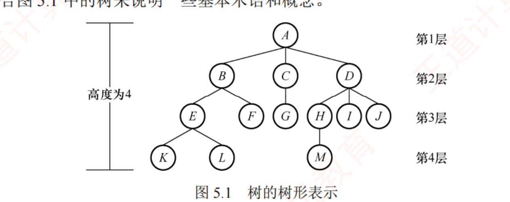
图 5.1 树的树形表示（裁自原书 p.125）。下面所有术语都对照这棵树来记。
祖先 / 子孙 / 双亲 / 孩子 / 兄弟 / 堂兄弟 ：从根到结点 K 的唯一路径上经过的其他结点都是 K 的祖先 ，K 是它们的子孙 ；路径上最接近 K 的结点是 K 的双亲 。根是树中唯一没有双亲的结点。 双亲相同的结点互为兄弟 ；双亲在同一层的结点互为堂兄弟 。层次 / 深度 / 高度 ：根为第 1 层。结点的深度 ＝它所在的层次（从根往下数）；结点的高度 ＝以它为根的子树的高度（从叶往上数）。树的高度（深度）＝结点的最大层数。 结点的度 / 树的度 ：结点的孩子个数 ＝该结点的度；所有结点度的最大值 ＝树的度。分支结点 / 叶结点 ：度 > 0 为分支结点 （非终端结点）；度 = 0 为叶结点 （终端结点）。有序树 / 无序树 ：各结点的子树从左到右次序不可互换 为有序树，否则为无序树。统考默认树是有序的。 路径 / 路径长度 ：路径＝两结点间所经过的结点序列；路径长度＝路径上边的数目 。森林 ：m（m ≥ 0）棵互不相交的树的集合。考点追踪：森林中树/边/结点数的关系（2016）
必记结论 · 森林 ⇄ 树的两个变换
删去一棵树的根 ，其各子树就构成一个森林；反过来，给 m 棵树添一个公共新根 ，森林就变成一棵树。2016 真题（森林 15 条边、25 个结点，求树的棵数）就靠这个：森林里结点数比边数多的量＝树的棵数 ，25 − 15 = 10 棵 。
我的补讲 · 这一堆术语里，真正会单独出题的只有四个
书上说 ：一口气给了十几个术语（祖先、子孙、堂兄弟、层次、深度、高度、度、有序树……）。潜台词是 ：它们绝大多数只是后面题干的用词 ，不是考点本身。真正被单独命题的只有四处：度 （结点的度 = 孩子数；树的度 = 所有结点度的最大值）——5.1 全部计算题的输入；高度 / 深度的口径 ——王道全书统一用层数口径：只有根的树高度为 1，空树为 0 ；路径长度 = 路径上边 的数目（不是结点数），树的路径长度 = 各结点深度之和；有序树 ——统考默认树是有序的，这条是 5.4「树转二叉树结果唯一」的前提。所以能考 ：口径题年年在暗处扣分。2022 真题（5.2-29）特意在题干里写「叶结点的高度为 1 」，就是在替你锁定层数口径——如果用「边数口径」算，答案会整整差 1。凡是选项之间恰好差 1，先回头查口径，别急着重算。
背景 · 术语表里这一半只需「认脸」，不必背定义
堂兄弟、子孙、非终端结点、有序树/无序树的形式定义 这几条，十七年统考从未单独出过题 ，它们只会出现在别的题的题干里当形容词。看一遍能读懂即可，不用背、不用默写 。「森林」的定义 （m ≥ 0 棵互不相交的树，m 可以为 0 ，空森林合法）——它会在 5.4 的转换题里被用到。
我的补讲 · 三个长得很像的「长度」：PL、WPL、ASL
书上说 ：树的路径长度是根到每个结点的路径长度之和；注意与哈夫曼树的带权路径长度相区别。
潜台词是 ：这三个量在四章里各出现一次，公式极像但
数的对象完全不同 ，考场上一旦混用就整题报废：
量 公式 数谁 出处 路径长度 PL Σ 各结点的深度 所有结点 （不加权）本节 5.1-3 带权路径长度 WPL Σ (叶 权 × 叶深度) 只数叶结点 ，且加权5.5 哈夫曼 · 2014 算法真题 平均查找长度 ASL Σ (pi × ci ) 所有可能的查找，按概率 加权 ch7 查找
所以能考 ：
5.1-3 的四个选项就是拿「总和 / 最小值 / 最大值 / 平均值」来试探你 ——树的路径长度是
总和 ；而「根到各结点路径长度的
最大值 」=
树高 − 1 （边数口径），是另一个量。
读到「路径长度」四个字，先回头看它前面有没有「带权」「平均」这两个定语。
知识串联 · 「从 0 数还是从 1 数」——四科都在这一个字上设过陷阱
→ 本章 王道全书用层数口径 ：只有根的树高度为 1 、空树为 0 ；而「路径长度」用的却是边数口径 。同一章里两个口径并存 ，所以 2022 真题（5.2-29）要特意写一句「叶结点的高度为 1」来锁定。→ 组原 ch3 主存地址划分时「块内地址占几位」是 log₂(块大小) ，而「块号从 0 编到 2ⁿ−1」——「有几个」与「最大编号是多少」永远差 1 ，Cache 行数、页框号、变址寻址全踩过这个坑。→ OS ch3 页号从 0 开始编，但「页数」是个数 ；逻辑地址位数 = 页号位数 + 页内偏移位数，算错一位地址空间就差一倍。→ 网络 ch4 子网划分里「借 n 位可分 2ⁿ 个子网、每个子网 2m −2 台主机」——那个 −2 （全 0 网络号、全 1 广播）就是同一族的「端点算不算」问题。一句话记牢：凡是答案与选项只差 1，第一嫌疑永远是口径（从 0 还是从 1、算不算端点、上取整还是下取整），第二才是算错。
5.1.3 树的性质
📄 p.126
考点追踪：树中结点数和度数的关系（2010、2016） · 指定结点数的三叉树最小高度（2022）
结点数 n ＝ 所有结点的度数之和 + 1。 （度数之和＝边数，n＝边数+1。）度为 m 的树中，第 i 层至多有 mi−1 个结点 （i ≥ 1）。
高度为 h 的 m 叉树至多有 (mh −1)/(m−1) 个结点（各层全满、等比求和）。
度为 m、有 n 个结点的树，最小高度 h = ⌈logm (n(m−1)+1)⌉ （树尽量饱满时取到）。
度为 m、有 n 个结点的树，最大高度 h = n − m + 1 （一层塞满 m 个孩子、其余每层只 1 个）；反推：高 h、度 m 的树至少 h+m−1 个结点。
我的补讲 · 三个「度—结点」关系是本节的命根子
王道在课后题后专门用「注意」框强调，选择题极爱考：总结点数 = n₀ + n₁ + n₂ + … + nm （按度分类累加）；总分支数（边数）= 1·n₁ + 2·n₂ + … + m·nm （度为 i 的结点引出 i 条分支）；总结点数 = 总分支数 + 1 。i 求某个 ni 或总数」的题（2010 真题：度 4 的树给出 n₄/n₃/n₂/n₁ 求叶子数 n₀，联立即得 82）。二叉树的 n₀ = n₂ + 1 就是它的特例。
我的补讲 · 「能不能求出来」有个开关：未知量个数 ≤ 1
书上说 ：把「Σni = n」与「Σ i·ni = n−1」两式联立即可解题。潜台词是 ：这两式一共只能提供一个 独立方程（第二式减第一式后 n 就消掉了），所以题目里最多只能缺一个未知量 ；缺两个就无解，而命题人恰恰会故意少给一个来考你敢不敢答「不确定」。所以能考 ：本节最阴的两道题就是这条开关的正反面——5.1-7 ：度为 3 的树给了 n3 =2、n2 =1、n0 =6，唯独没给 n1 ⟹ 两式退化成同一式，n = n1 +9 可取 9,10,11,… ⟹ 答案是「≥ 9 的任意整数 」；5.1-综2 ：度为 4 的树给了 n0 ~n3 ，只缺 n4 一个 ⟹ 23+n4 = 17+4n4 ⟹ n4 =2、n=25，唯一解。做题反射：看到「已知部分 ni 求总数」，先数一下有几个未知量。少了 n1 而题目又问「结点总数是多少」，答案十有八九是「不确定 / 至少多少」。
我的补讲 · 最大 / 最小高度都不用背公式，画两张草图就够了
书上说 ：最小高度 h = ⌈log
m (n(m−1)+1)⌉，最大高度 h = n − m + 1。
潜台词是 ：这两个公式是
两种极端构造的结果 ，考场上默公式容易记错取整方向，画图反而更快更稳：
·
要矮（最小高度） ⟹ 每层塞满 ⟹
逐层累加到装得下为止 ；
·
要高（最大高度） ⟹ 除了那个必须存在的 m 度结点，其余每层只留 1 个 ⟹ (n−m) 个结点排成链再挂上 m 个孩子 ⟹ h = (n−m)+1。
所以能考 ：同一个模型在本章被考了
三遍 （5.1-6 三叉 50 结点、5.2-22 三叉 50 结点、
5.2-29 是 2022 统考真题 ：三叉 244 结点）。请把这两串前缀和抄在草稿纸上，三题都变成 10 秒题：
树型 各层累计结点数（满树） 二叉（2h −1） 1, 3, 7, 15, 31, 63, 127, 255, 511, 1023 三叉（(3h −1)/2） 1, 4, 13, 40, 121, 364
50 落在 40 与 121 之间 ⟹ 5 层（5.1-6、5.2-22）；244 落在 121 与 364 之间 ⟹ 6 层（2022 真题）。
同样 50 个结点，二叉要 6 层、三叉只要 5 层——叉数越多树越矮，这就是下面那条串联的全部道理。
我的补讲 · 2010 真题的三个错误选项，是三种典型手滑做出来的
书上说 ：n
1 +2n
2 +3n
3 +4n
4 = 122，非叶结点 41，故叶结点 = 123−41 = 82。
潜台词是 ：这道题的算术只有三步，命题人根本不指望你算错——他指望你
在正确的中间结果上停下来交卷 。把三个干扰项还原一遍就明白了：
选项 它其实是什么 停在了哪一步 D 122 总分支数 （度数之和）第 ① 步就交卷，忘了 +1、忘了减非叶 A 41 非叶结点数 第 ③ 步减反了方向 C 113 凑数（123−10） 纯干扰 B 82 ✅ 叶结点数 = 123 − 41 三步走完
所以能考 ：本章所有「数关系」题都有这个共同陷阱——
分支数、总结点数、非叶结点数、叶结点数四个量互相只差一步 。
算完最后回头把题干那个名词再读一遍 （问的是「叶」还是「分支」还是「总数」），这一秒钟比重算一遍都值。
知识串联 · 「叉数越多越矮」是四科反复兑现的同一笔交易
→ 数构 ch7 B 树 / B+ 树把叉数 m 提到几百，就是为了把树高压到 3~4 层——本节的 hmin = ⌈logm (n(m−1)+1)⌉ 就是 B 树「磁盘 I/O 次数 = 树高」的理论依据 。→ OS ch3 多级页表的「级数」就是树高：级数越多，每次地址转换的访存次数越多，所以能用两级就不用三级 ；反过来叉数（一张页表能装多少表项）由页大小决定。→ 组原 ch3 多路组相联的「路数」同理：路数越多，一组内要并行比较的标记越多（硬件更贵），换来的是冲突更少——树的「宽 vs 高」在硬件里变成「比较器数量 vs 访问次数」 。→ 网络 ch6 DNS 把域名空间切成根 / 顶级 / 权限三层，也是同一笔交易：层次越多单次查询跳数越多，层次越少单台服务器负担越重。一句话记牢：变矮的代价是每个结点变胖。四科都在同一个天平两端加砝码，只是砝码的名字不同（磁盘 I/O 次数 / 访存次数 / 比较器 / 查询跳数）。
知识串联 · 「度」这个字在数构里有两套算法，别串味
→ 数构 ch6 树的度 = 孩子数（只往下数），图的度 = 关联的边数（上下都数） 。所以树里「度数之和 = n−1」，图里却是「度数之和 = 2e」——同一个词，一个差一倍。ch6 的「握手定理」和本节的「度数和 = 边数」是这个差别的两面。→ 数构 ch6 有向图还要再分入度 / 出度 ；树若看成有向图，每个非根结点的入度恰为 1、出度就是它的度——「入度为 0 的唯一顶点」正是根，这也是 ch6 拓扑排序里 AOV 网的起点判据。一句话记牢：看到「度数之和」先问一句「这是树还是图」——树是 n−1，图是 2e，判错就整题全错。
我的补讲 · 5.1 只留下三条恒等式，但它们在后面四节被反复调用
书上说 ：（性质给了五条。）
潜台词是 ：五条性质里，后三条（层结点数上限、最小高度、最大高度）都是
可以现场构造出来的 （见上面那块的画图法），真正需要「背成条件反射」的只有前面那组恒等式。把它们的
下游用途 列出来，就知道为什么这一节不能跳：
5.1 的恒等式 在后面变成什么 Σ 度数 = n − 1 5.2 的 n₀ = n₂ + 1 （二叉特例）· 5.4 的森林棵数 = 结点 − 边 · 5.5 的哈夫曼 2n−1 · ch6 的生成树 n−1 条边 n = Σni 与 n−1 = Σ i·ni 联立 5.2-综6（2016 真题正则 k 叉树）· 5.5-9（m 叉哈夫曼树）· 5.5-1（哈夫曼非叶数） 第 i 层至多 mi−1 、高 h 至多 (mh −1)/(m−1) 5.2 的全部「最多 / 最少」题 · ch7 的 B 树高度 · ch8 的排序下界
所以能考 ：
本节 13 道题里有 6 道是这三条的直接应用 ，而它们在后面四节又出现了至少 10 次。
5.1 页数最少（5 页）、真题最少（2 道），但它是全章唯一「跳过就会连锁失分」的一节。
5.2 二叉树的概念
5.2.1 二叉树的定义及主要特性
📄 p.129–130
二叉树的核心特征 ：每个结点至多两棵子树 （不存在度 > 2 的结点），且两棵子树有明确的左右之分、次序固定不可交换 。它同样递归定义：或为空（n = 0），或由根 + 两棵互不相交的左、右子树构成，且左右子树本身也是二叉树。二叉树有 5 种基本形态 （空 / 只有根 / 只有左子树 / 左右都有 / 只有右子树）。
陷阱 · 二叉树 ≠ 度为 2 的有序树
① 度为 2 的树至少 3 个结点 ，而二叉树可以为空 ；无须区分左右 （左右是相对另一个孩子而言的）；而二叉树中无论有几个孩子，左右位置都是确定且不可省略的 ——这种次序是结构固有属性，不是相对概念。
我的补讲 · 「二叉树 ≠ 度为 2 的有序树」，考的只有一个字：独生子
书上说 ：度为 2 的有序树中独生子无须区分左右，二叉树中左右位置固定不可省略。潜台词是 ：这句抽象的话可以翻译成一个可数的事实——只有一个孩子时，二叉树认为「左孩子」和「右孩子」是两棵不同的树，而度为 2 的有序树认为它们是同一棵 。由此还派生出两条二叉树独有的自由度：可以为空 （n=0）、可以只有左子树或只有右子树 ，所以二叉树共有 5 种基本形态 。所以能考 ：三种问法都出现过——「二叉树为空」= 没有结点，但这棵树作为对象仍然存在 ，就像 head=NULL 仍是一个合法链表；线性表可空、树可空，图不能空 （顶点集 V 必须非空、边集 E 可以为空）。这三句放在一起背，选择题里是白送的分。
知识串联 · 「n 个结点能构成多少种二叉树」＝ ch3 出栈序列那个卡特兰数
→ 数构 ch3 n 个结点的二叉树形态数 = 卡特兰数 C(2n,n)/(n+1) = 1, 2, 5, 14, 42, 132… ，与「n 个元素入栈能有多少种出栈序列」是同一串数字 。原因也相同：两者都在数「一条合法的左右（进出）括号序列」——先序遍历时「进入子树 / 退出子树」正好对应「入栈 / 出栈」。→ 本章 5.3 所以 2015 真题（5.3-38）问「先序序列固定时有多少棵不同二叉树」，本质还是在数括号序列。5.2-6 不是 卡特兰数：它钉死了「高度 = 结点数」 ，树被压成一条链，只剩「每步向左还是向右」的自由 ⟹ 2n−1 种。看到「高度 = 结点数」立刻想「链」，别条件反射地套卡特兰数。 一句话记牢：形态计数题先判断有没有额外约束——无约束是卡特兰数，钉死高度就退化成 2n−1 。
知识串联 · 「递归」这个词在四科里指的不是同一件事
→ 本章 数据结构里的递归 指「定义引用自身」（树的定义、递归遍历），实现靠系统栈 ；与之相对的「迭代」指用循环 + 显式栈 / 队列 自己管理状态。→ 网络 ch6 DNS 里的递归查询 vs 迭代查询 含义完全不同：递归查询是「我问你，你负责一路问到底再把答案给我」，迭代查询是「我问你，你告诉我下一个该问谁，我自己再去问」。那里的「递归」指的是责任转移，不是函数自调用。 → OS ch1 内核里的递归要格外小心：内核栈很小 ，深递归直接崩；所以 OS 的很多树形遍历（目录、页表）都写成迭代 。→ 组原 ch4 每层递归对应一个栈帧 （返回地址 + 参数 + 局部变量），递归深度直接决定栈区占用——这就是本章「递归遍历空间 O(h)」在硬件层的样子。一句话记牢：看到「递归」两个字，先问一句「这是哪一科的递归」——数构指自调用、网络指责任转移、OS 与组原关心的是它烧掉多少栈。
几种特殊的二叉树
考点追踪：完全二叉树的特性（2009、2011、2018、2025） · 正则 k 叉树树高与结点数的关系（2016）
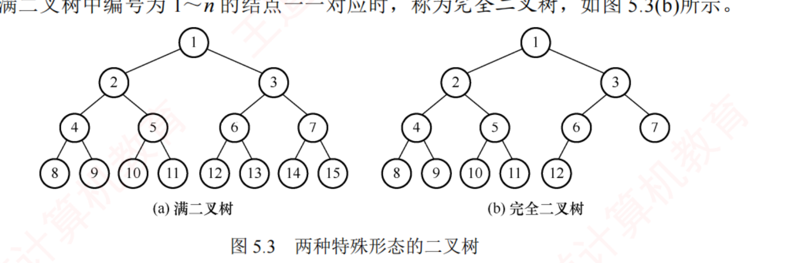
图 5.3 两种特殊形态的二叉树（裁自原书 p.130）。完全二叉树＝结点编号与同高满二叉树 1~n 一一对应。
满二叉树 ：高 h 且含 2h −1 个结点。每层都满，叶子全在最下层，除叶子外每个结点度均为 2。按层序编号后：结点 i 的双亲为 ⌊i/2⌋，左孩子 2i，右孩子 2i+1。完全二叉树 ：高 h、n 个结点，当且仅当每个结点都与同高满二叉树中编号 1~n 的结点一一对应。本章最重要的特殊树。 二叉排序树（BST） ：左子树全部关键字 < 根 < 右子树全部关键字，且左右子树也是 BST（详见第 7 章）。平衡二叉树 ：任一结点左右子树高度之差绝对值 ≤ 1（详见第 7 章）。正则二叉树（严格二叉树） ：每个分支结点都恰有 2 个孩子，即只有度 0 或度 2 的结点。哈夫曼树就是正则二叉树。
我的补讲 · 五种特殊树，考的是「识别语」而不是定义
书上说 ：满二叉树、完全二叉树、二叉排序树、平衡二叉树、正则二叉树的定义各一条。
潜台词是 ：统考几乎从不直接问「什么叫满二叉树」，而是
把定义拆成一句描述让你反向识别 。请把「识别语 → 名字」这个方向练熟：
题干里的说法 它其实是 立刻能用的性质 所有叶结点都在同一层，且每个非叶结点都有 2 个孩子 （2018 真题原话）满二叉树 n = 2h −1、叶 = 2h−1 、n = 2k−1 编号与同高满二叉树 1~n 一一对应 / 只有最后一层不满且靠左连续 完全二叉树 叶 = ⌈n/2⌉、n1 ≤ 1、下标可算父子 只有度 0 和度 2 的结点 / 每个分支结点都恰有 2 个孩子 正则（严格）二叉树 n1 =0 ⟹ n = 2n0 −1（必为奇数） 左 < 根 < 右 二叉排序树（ch7） 中序遍历递增 左右子树高度差 ≤ 1 平衡二叉树（ch7） 高度 O(log n)
所以能考 ：2018 真题（5.2-27）全部难度就在第一行的翻译——认出「满二叉树」之后，答案 2k−1 是一步的事。
而哈夫曼树是正则二叉树 （每次合并两棵，绝不产生度 1 结点），这条在 5.5 会直接用来数结点。
我的补讲 · 完全二叉树给个 n，五个量当场口算（本章最高频的送分题）
书上说 ：完全二叉树的 8 条编号关系。
潜台词是 ：8 条太多，考场上真正用得着的是下面这张「给 n 求量」的口算表——它们全都从
同一个事实 推出来：
编号 1~⌊n/2⌋ 的全是分支结点，其后全是叶 。
要求的量 一步公式 例（n=768，2011 真题） 叶结点数 n0 ⌈n/2⌉ = n − ⌊n/2⌋ 384 最后一个分支结点编号 ⌊n/2⌋ 384 度 1 结点数 n1 n 偶 ⟹ 恰 1 个；n 奇 ⟹ 0 个 1 度 2 结点数 n2 n0 − 1 383 高度 ⌈log2 (n+1)⌉ = ⌊log2 n⌋+1 10 结点 i 是不是叶 2i > n ⟺ 是叶 i>384 全是叶
所以能考 ：2011 真题（5.2-26）问 768 个结点的完全二叉树有几个叶——⌈768/2⌉ = 384，
三秒题 ；5.2-14 问 1001 个——⌈1001/2⌉ = 501。做完用 n
0 = n
2 +1 回验一遍（384+1+383 = 768 ✅），两秒钟买一个零错误。
我的补讲 · 「最多 / 最少」双胞胎题：同一句题干，两个答案
书上说 ：（5.2-12 与 2009 真题分列两处，各给各的算法。）
潜台词是 ：这两题的
题干只差两个字 ，命题人还把对方的答案塞进了自己的干扰项。必须成对理解，单独做一道极容易选到双胞胎的那个数：
5.2-12（最少） 5.2-25 = 2009 统考真题 （最多） 题干 完全二叉树第 6 层有 8 个叶结点 关键推理 第 6 层有叶 ⟹ 树高只能是 6 或 7 取哪一端 树高 = 6：第 6 层就是末层 树高 = 7：第 6 层还有孩子 算式 前 5 层满 31 + 8 前 6 层满 63 + (32−8)×2 = 63+48 答案 39 111
所以能考 ：
破题句永远是「第 k 层有叶结点 ⟹ 树高 ∈ {k, k+1}」 （若树高 ≥ k+2，第 k 层就全是内部结点了）。抓住这个二选一，最多 / 最少分别取两端。
同款还有 5.2-17（「结点数最大的层有 8 个结点」⟹ 前 4 层必满 15、第 5 层至多 8 ⟹ 至多 23）与 5.2-综3（第 9 层 240 个 ⟹ 未满 ⟹ 它就是末层 ⟹ n=495、叶 248）。
三道题共用一句话：先判「这一层是不是最后一层」。
我的补讲 · 看到「不可能存在」四个字，先查奇偶守恒，别去枚举
书上说 ：由 n0 = n2 +1 可推出 n1 = 2(n−n2 )−1 为奇数。潜台词是 ：这条推导给出的是一个守恒式 ：n = 2n2 +n1 +1 ⟹ n 与 n1 +1 同奇偶 。守恒式的价值在于它能一击证伪 ，而枚举只能证实：偶数 ⟹ n1 必为奇数 （至少有一个独生子结点）；奇数 ⟹ n1 必为偶数 （可以是 0）。所以能考 ：5.2-8 给 2n 个结点问「不可能存在」什么——A、B、D 都举得出例子，只有 C（2m 个度为 1 的结点）卡在奇偶上。如果去逐个构造反例，四个选项要画四棵树；用守恒式只要看一眼奇偶。 1 只能是 0 或 1」，于是 n 奇 ⟹ n1 =0、n 偶 ⟹ n1 =1 （5.2-14、5.2-26、5.2-综1 都是它）。正则二叉树同理：n1 =0 ⟹ n = 2n0 −1 必为奇数，题目给偶数就直接判条件矛盾。
我的补讲 · 二叉树的性质推广到 m 叉：记一个通式 + 代 m=2 自检
书上说 ：性质 2、3 可推广到 m 叉树——第 k 层至多 m
k−1 ，高 h 至多 (m
h −1)/(m−1)。
潜台词是 ：整个 5.2 的公式表其实只有
一套 m 叉通式 ，二叉的那些是 m=2 的特例。与其背两套，不如背通式 + 一个 10 秒的自检动作：
把 m=2 代回去，看能不能变成你熟悉的二叉树公式 ；变不出来就是记错了。
量 m 叉通式 代 m=2 应得 第 k 层至多 mk−1 2k−1 ✅ 高 h 至多结点 (mh −1)/(m−1) 2h −1 ✅ 第 1 个孩子编号 (i−1)m+2 2i ✅ 第 k 个孩子编号 (i−1)m+k+1 k=1→2i、k=2→2i+1 ✅ 双亲编号 ⌊(i−2)/m⌋+1 ⌊i/2⌋ ✅ 有右兄弟的条件 (i−1) mod m ≠ 0 i 为偶（左孩子才有右兄弟）✅ 空链域个数（k 叉链表） (k−1)n+1 n+1 ✅
所以能考 ：5.2-综4 就是把这六条一次问全（满 m 叉树的层结点数 / 双亲 / 第 k 个孩子 / 右兄弟）。
推导也不难自己现推：结点 i 前面有 i−1 个结点，它们共生了 (i−1)m 个孩子，而孩子编号从 2 开始 ⟹ 结点 i 的头一个孩子是 (i−1)m+2。 把这句话记住，六条全能现场推出来。
知识串联 · 完全二叉树 = 堆 = 优先队列，本章不讲但四科都在用
→ 数构 ch8 堆就是完全二叉树的顺序存储 ：考纲把「堆及其应用」列在本章（树的应用），王道却放到第 8 章排序讲。所以本节的下标公式（左 2i、右 2i+1、父 ⌊i/2⌋、最后一个分支结点 ⌊n/2⌋ ）就是堆调整从哪里开始筛的依据——建堆从 ⌊n/2⌋ 倒着往前筛 ，那个 ⌊n/2⌋ 正是这里来的。→ OS ch2 优先级调度需要「反复取出最大 / 最小」，标准实现就是堆；OS 里讲的「优先队列」在数构里的身份就是完全二叉树。→ OS ch5 / 网络 ch4 磁盘调度队列、路由器的分组队列同理——凡是「按优先级出队」的场合，底层几乎都是堆。一句话记牢：完全二叉树之所以被反复考，不是因为它好看，而是因为它是唯一能「用数组下标直接算父子」的树形——这让优先队列可以零指针实现。
背景 · BST 与平衡二叉树在这里只需认脸
这两条定义在本章只作为「名词出现过」 ，它们的插入 / 删除 / 查找效率、AVL 的四种旋转全部是第 7 章 的内容，本章不会考。BST 的中序遍历是递增序列 （这一句在 5.3 的 2022 真题里真的用到了）；平衡二叉树的高度是 O(log n) 。其余一律留到 ch7。
我的补讲 · 完全二叉树的定义为什么非要绕一个「与满二叉树编号一一对应」
书上说 ：高 h、n 个结点的二叉树，当且仅当每个结点都与同高满二叉树中编号 1~n 的结点一一对应时，称为完全二叉树。潜台词是 ：这个绕口的定义是为了把「形状」变成「编号」 ——一旦形状可以用连续编号 1~n 描述，就能得到本章最值钱的三件事：可以用数组存且零浪费 （下标 = 编号）；② 父子关系可以用算术算出来 （2i、2i+1、⌊i/2⌋）；③ 「是不是叶」只需一次比较 （2i > n）。所以能考 ：判定「是不是完全二叉树」的所有方法都回到这一句 ——中间不能有空洞 ；把空孩子也入队 ，弹出空之后不允许再出现非空；按 2i / 2i+1 递归编号，最大编号 == 结点数 ⟺ 完全二叉树 （我用它作参照实现，在 3000 棵随机树上与空孩子入队法对拍，零失配）。「只有最后一层不满、且集中在左边」是这个定义的通俗版 ，用来手算最快，但写算法时要用上面两种之一。
知识串联 · 为什么这些结构都偏爱「2 的幂」
→ 本章 完全二叉树之所以能用 2i、⌊i/2⌋ 定位，是因为每下一层结点数翻倍 ——除以 2 就是右移一位，编号的二进制串正好是「从根出发的路径」 （5.2-21 用二进制公共前缀求 LCA 就是这个）。→ 组原 ch3 Cache 的行数、组数、块大小一律取 2 的幂 ，为的就是「主存地址不用做除法，直接切位 就能拆成 标记 | 组号 | 块内地址」。取 2 的幂 = 用移位代替除法 ，与本章同源。→ OS ch3 页大小取 2 的幂（4KB = 2¹²），逻辑地址就能直接切成「页号 | 页内偏移」，不需要除法器。→ 网络 ch4 子网掩码是连续的 1 后接连续的 0 ，所以 IP 地址一次「与」运算就得到网络号——同样是「按位切」。一句话记牢：凡是设计成 2 的幂的地方，都是为了把「除法 / 取模」降级成「移位 / 按位与」；本章的 2i、2i+1 是这条工程惯例最早出现的地方。
二叉树的性质
考点追踪：二叉树中结点数的关系（2025）
n₀ = n₂ + 1 ——非空二叉树叶结点数＝度 2 结点数 + 1。推导：n = n₀+n₁+n₂；又分支数 B = n−1 = n₁+2n₂；两式消去即得。王道特别提示这条选择题常考。 非空二叉树第 k 层至多 2k−1 个结点。
高度为 h 的二叉树至多 2h −1 个结点（性质 2 前 h 项求和）。性质 2、3 可推广到 m 叉树：第 k 层至多 mk−1 ，高 h 至多 (mh −1)/(m−1)。
完全二叉树按 1~n 层序编号的 8 条关系 （结点 i）：至多一个 ，且只有左孩子无右孩子 ，编号必为 ⌊n/2⌋；恰有一个 度 1 结点（编号 n/2，只有左孩子）；⌊i/2⌋ ；⑦ 左孩子 2i 、右孩子 2i+1 ；⑧ 所在层次 ⌊log₂i⌋+1。n 个结点的完全二叉树高度 = ⌈log₂(n+1)⌉ 或 ⌊log₂n⌋+1 。
必记结论 · n₀ = n₂ + 1 的两个常见变形
知叶子求总数、知总数求叶子，都靠 n = n₀+n₁+n₂ 和 n₀ = n₂+1 联立：没有度 1 结点 （n₁=0，即正则），则 n = 2n₀ − 1 ；n₁ 只能是 0 或 1 （由性质 4⑤），所以给出 n 就能定出叶子数（2025 真题就靠这个奇偶讨论）。
我的补讲 · 三个 log 公式，只有两个是对的——取整方向是本节最贵的细节
书上说 ：n 个结点的完全二叉树高度 = ⌈log2 (n+1)⌉ 或 ⌊log2 n⌋+1。潜台词是 ：这两个式子恒等，而「⌈log2 n⌉」是错的 ——它在 n 恰为 2 的幂时会偏小 1。命题人非常清楚这一点，所以专门拿它当干扰项。所以能考 ：5.2-1 选项 D 写的正是 ⌈log2 n⌉，代 n=4 立刻穿帮（真实高度 3，公式给 2）；5.2-1 选项 B 则是漏了「完全」二字——任意 二叉树的高度范围是 ⌊log2 n⌋+1（最矮）～ n（单支树，最高），5.2-9 问 1025 个结点的高度，答案就必须是一个区间 11~1025；5.2-综1 要把 ⌈log2 (2n0 )⌉ 化简成 ⌈log2 n0 ⌉+1 ——写成 ⌊log2 n0 ⌋+1 就错（n0 =3 时真实高度 3，下取整版给 2）。考场保命写法：如果一时拿不准化简方向，就停在 ⌈log2 (n+1)⌉ 不化简 ——一样满分，零风险。凡是选项之间只差 1，先怀疑取整方向和层数口径这两件事。
我的补讲 · 「至多 / 至少 / 任意」三个词直接决定答案是哪一个
书上说 ：（性质给的都是上界。）潜台词是 ：本节的题几乎都是同一个模板——给一个约束，问某个量的极值 。而极值取哪一端，全靠题干那一个副词。三道题排在一起看得最清楚：5.2-15「126 个结点，第 7 层至多几个」 ：答案不是 26 =64 而是 63 ——因为第 7 层要有 64 个，前 6 层必须先占满 63 个，合计 127 > 126。通用做法：先给前 k−1 层留出 2k−1 −1 个，剩下的全砸在第 k 层，再与 2k−1 取 min。 5.2-11「高 h 的完全二叉树最少几个结点」 ：2h−1 （前 h−1 层满 + 末层只剩 1 个），最多是 2h −1。这两个数一字之差，选项里必然同时出现。 5.2-28 = 2020 统考真题 ：题眼是「任意 一棵高度为 5 且有 10 个结点的二叉树」——「任意」意味着数组必须扛得住最坏形态 （一条全向右的单支树，第 5 层编号 31）⟹ 至少 31 个单元。所以能考 ：做完先回头圈出题干里的那个副词 。2020 那题若把「任意」去掉，答案就变成 10；5.2-15 若问「至少」，答案又不同。这类题的算术都不难，丢分全丢在读题上。
我的补讲 · 这张性质表按「能不能现推」分成两半，只有一半需要背
书上说 ：五条性质 + 完全二叉树的 8 条编号关系。
潜台词是 ：13 条里
真正需要背的只有 4 条 ，其余 9 条要么是它们的推论，要么 20 秒就能现推。分清这两半，本节的记忆量立刻减掉三分之二：
内容 理由 必背 4 条 ① n₀ = n₂ + 1 ；② 叶结点数 = ⌈n/2⌉ （完全二叉树）；③ 高度 = ⌈log₂(n+1)⌉ = ⌊log₂n⌋+1 ；④ 父 ⌊i/2⌋、左 2i、右 2i+1 它们是「一步出答案」的口算式，现推来不及 可现推 9 条 第 k 层至多 2k−1 、高 h 至多 2h −1、最后一个分支结点 ⌊n/2⌋、n₁ 只能 0 或 1、叶只在最后两层、i 所在层 ⌊log₂i⌋+1…… 画一棵 7 个结点的小树，逐条对着数一遍，全都自明
所以能考 ：
考场上真正的动作是「先写必背 4 条，再用它们推别的」 。例如「完全二叉树 n₁ 只能是 0 或 1」可以由「层序编号连续 ⟹ 只有最后一个分支结点可能缺右孩子」当场推出，不必单独记；而
n₀ = n₂+1 这类等式关系是推不出来的，必须背 。
⚠️
验算习惯 ：算完任何一组 n₀/n₁/n₂，
回代 n₀+n₁+n₂ = n 且 n₀ = n₂+1 ，两秒钟，能挡住本节几乎所有手滑。
知识串联 · 「第 k 层至多 2k−1 个」在 ch7、ch8、组原里各兑现一次
→ 数构 ch7 折半查找的判定树高度 = ⌊log₂n⌋+1 ，因此「最多比较 ⌊log₂n⌋+1 次 」——这个数字不是查找算法算出来的，是本节的性质给的。ch7 里凡是出现 log₂ 的地方，源头都在这里。 → 数构 ch8 堆排序每次筛选走一条根到叶的路径，代价 O(log n) ；n 次调整 ⟹ O(n log n)。「树高 = log n」是它唯一的理由。 → 组原 ch3 多路组相联里「用几位表示组号」= log₂(组数)，与本章「用几层装下 n 个结点」是同一个对数；层数 / 位数 / 比较次数，三者在四科里其实是同一个量的三种叫法 。→ OS ch3 多级页表的级数 ≈ log页表项数 (页数)，同一个式子换了底数。一句话记牢：只要一个结构「每往下一层就把规模乘以 m」，它的层数必然是 logm (规模)，而层数就是代价。
5.2.2 二叉树的存储结构
📄 p.131–133
考点追踪：二叉树的顺序存储结构相关应用（2020、2025）
1. 顺序存储
用一组连续单元按层序存放，编号 i 的结点存于下标 i 的位置 （建议从下标 1 开始存，让下标与编号一致）。
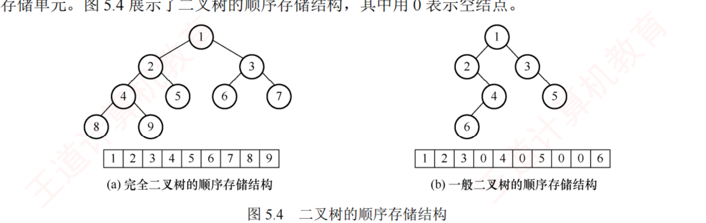
图 5.4 二叉树的顺序存储（裁自原书 p.132）。用 0 表示空结点。
陷阱 · 顺序存储只适合完全 / 满二叉树
一般二叉树想用下标反映逻辑关系，必须先插入若干「空结点」补成同高完全二叉树的形状再按层序入数组——最坏情况极浪费 ：高 h、只有 h 个结点的单支树 要占近 2h −1 个单元。所以顺序存储只对完全 / 满二叉树划算 。这正是 2020、2025 顺序存储题的坑。
我的补讲 · 两道顺序存储真题并排看：一道问空间上界，一道问合法性
书上说 ：一般二叉树用顺序存储要补空结点，最坏浪费到 2
h −1。
潜台词是 ：顺序存储的规则只有一句——
「按同高满二叉树的层序编号对号入座，空位也要占坑」 。这一句同时决定了「要多大数组」和「一个数组合不合法」两件事，于是被两年真题分别考了一次：
2020 真题（5.2-28） 2025 真题（5.2-30） 问什么 高 5、10 个结点，至少 要几个单元 哪个数组不能 表示一棵二叉树 用规则的哪一半 空位也要占坑 ⟹ 按满树算 对号入座 ⟹ 非空结点的双亲必须非空 一步判据 25 −1 = 31 对每个非 −1 的 i 查双亲是否为 −1 答案 31 D（下标 8 的双亲下标 3 是 −1，孤儿结点）
⚠️
2025 那题的下标从 0 开始 ，而王道正文用的是从 1 开始。两套口径必须都会换：
根的下标 双亲 左孩子 右孩子 1（王道正文） ⌊i/2⌋ 2i 2i+1 0（2025 真题） ⌊(i−1)/2⌋ 2i+1 2i+2
所以能考 ：
拿到顺序存储的题，第一件事是看根在下标 0 还是 1 ，再套对应公式。这两道真题都只要「逐下标核对」，千万别去画树——画图既慢又容易错。
知识串联 · 「下标即地址」——不用指针也能表达结构，这是四科共用的省钱手段
→ 组原 ch3 Cache 的直接映射用「主存块号 mod 组数」直接算出该进哪一行，不需要任何指针 ；本节用 2i、2i+1 直接算出孩子在哪，是同一个思路的软件版。→ OS ch3 页表也是纯数组：页号就是下标 ，不存页号只存页框号，省下的正是「存下标本身」的空间。→ 数构 ch3 循环队列用 (rear+1)%MaxSize 在数组上模拟环形结构，也是「用算术代替指针」。代价永远是同一个：必须为不存在的位置预留坑位。 组原叫「Cache 行浪费」、OS 叫「页表项浪费（所以要多级页表）」、本节叫「单支树占 2h −1 个单元」——2020 真题考的 31 个单元，就是这个代价的具体数字 。一句话记牢：下标运算换来零指针开销和随机存取，代价是必须按最坏形态预留空间；四科的取舍点都在「结构够不够满」。
我的补讲 · 顺序存储的题只有三个口径问题，全部出在题干的细节里
书上说 ：建议从下标 1 开始存，让下标与编号一致。
潜台词是 ：「建议」两个字意味着
题目完全可以不这么做 ，而近几年的真题偏偏就不这么做。拿到顺序存储的题，
先花 5 秒把三件事确认完 再动笔：
要确认的 两种可能 影响什么 ① 根在哪个下标 0（2025、2022 真题 ）／ 1（王道正文） 孩子公式 2i+1、2i+2 ／ 2i、2i+1 ② 空位怎么标 −1 （2022、2025）／ 0 （王道图 5.4）／ #递归终止条件写什么 ③ 数组要开多大 问「任意一棵高 h 的树」⟹ 2h −1 （2020 真题）／ 完全二叉树 ⟹ 恰好 n 整道题的答案
所以能考 ：
三道真题正好一人考一个 ——2020 考 ③（答 31）、2025 考 ①②（用「非空结点的双亲必须非空」逐下标判合法性）、2022 的算法题三个都要用（下标从 0、−1 表空、边界还要判越界）。
⚠️
两套口径的换算表务必写在草稿纸顶端 ：根在 0 ⟹ 父 ⌊(i−1)/2⌋、左 2i+1、右 2i+2；根在 1 ⟹ 父 ⌊i/2⌋、左 2i、右 2i+1。
这是本章最容易「全对却全错」的地方。
知识串联 · 「用一个特殊值表示『这里没有』」是四科共同的表示法
→ 本节 顺序存储用 −1 / 0 / # 表示结点不存在；代价是这个值不能再作为合法数据 （所以 2022 真题特意声明「结点值均为正整数 」，好让 −1 腾出来当哨兵）。→ OS ch3 页表项里的存在位（有效位） 干的是同一件事：这一位为 0 表示「该页不在内存」，此时页框号字段的内容无意义。用一位标志换来「其余字段可以任意」的自由。 → 组原 ch3 Cache 行的有效位 同理：刚开机时所有行的内容都是垃圾，靠有效位=0 声明「别信这一行」。→ 数构 ch2 / ch7 顺序表用 length 划界、散列表用「空槽标记」区分「从未用过」与「已删除」——后者若不区分，查找会提前中断 （ch7 的经典坑）。一句话记牢：只要用数据本身的某个取值当哨兵，就必须保证真实数据取不到它；否则就得像 OS 那样另花一位来标志。
2. 链式存储
二叉链表结点至少 3 个域：左指针 lchild、数据 data、右指针 rchild 。
lchild data rchild
typedef struct BiTNode{
ElemType data; // 数据域
struct BiTNode *lchild,*rchild; // 左右孩子指针
}BiTNode,*BiTree;
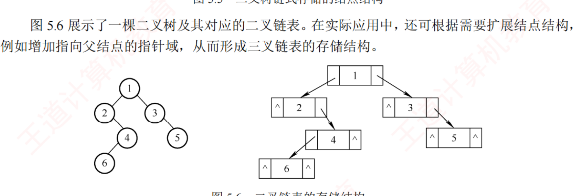
图 5.6 二叉链表的存储结构（裁自原书 p.132）。加一个指向父结点的指针即成三叉链表 。
必记结论 · n 个结点的二叉链表有 n+1 个空链域
n 个结点共 2n 个指针域，非空的只有 n−1 个（每条边占一个），故空链域 = 2n − (n−1) = n + 1 个。这条选择题极常考 ，而且下一节的线索二叉树正是靠这 n+1 个空链域来存前驱后继的。
我的补讲 · 空链域通式一条就够：(k−1)n+1
书上说 ：n 个结点的二叉链表有 n+1 个空链域。
潜台词是 ：这个 n+1 不是背下来的，是
数出来的 ：总指针域 = kn（每结点 k 个）− 非空指针 = 边数 = n−1 ⟹
空链域 = kn−(n−1) = (k−1)n+1 。记住这个通式，二叉（n+1）、三叉（2n+1）都是代进去的结果。
所以能考 ：本章出现了两个都叫「三叉链表」的东西，考的就是你能不能分清
指针是往下还是往上 ：
5.2-23：三叉树 的链表 5.2-19：二叉树的三叉链表 3 个指针是 3 个孩子（全往下） 2 个孩子 + 1 个双亲 （一个往上） 往下的指针只用掉 n−1 个（边数） 往上的指针 无 n 个中只有根 的那个是空 空链域 3n−(n−1) = 2n+1 (n+1)+1 = n+2
判据只有一句：往下的指针总共只用掉 n−1 个（边数），往上的指针只有根那一个是空。
我的补讲 · 两个能救命的做题习惯（本节两道题各示范一次）
书上说 ：（无——这两条书上不会写，但每年都在扣分。）潜台词是 ：选择题里有两类「看起来对」的陷阱，各有一个固定的破法：凡是说「所有 / 每个结点都……」的判断，先拿「只有一个根结点的树」和「根结点本身」去试。 5.2-19 的 Ⅱ「所有度为 2 的结点均被三个指针指向」——若它是根 ，没有双亲指它，只被 2 个指向 ✗；Ⅲ「每个叶结点均被一个指针指向」——若整棵树只有一个根结点 ，它既是叶又没人指它 ✗。根和单结点树是本章最好用的两个反例，至少三道题栽在这上面。 特殊值验算至少试两组。 5.2-24 问满二叉树的 n、m、h 关系，代 h=3（n=7、m=4）时，错误选项 A「n = h+m」竟然也成立（3+4=7）；再代 h=4（n=15、m=8）才穿帮（4+8=12 ≠ 15）。所以能考 ：这两招在本章的适用面极广，而且不花时间——一个反例 5 秒，比认真推导一遍便宜得多 。
知识串联 · 「把闲置的空位拿来存元信息」是 408 的通用省空间套路
→ 本章 5.3 二叉链表白白空着 n+1 个指针域 ⟹ 线索二叉树 把它们改存前驱后继，代价是每结点多两个标志位 ltag/rtag。下一节整节都建立在这 n+1 个空位上。 → 数构 ch7 散列表的空槽同理（开放定址法就是「借用别人的空位」）；ch5.5 的并查集更极端——根结点的双亲域本来没用，就拿来存「−集合规模」 ，一个数组两用。→ OS ch4 空闲盘块的链接法：空闲块本身就是链表结点 ，不额外花空间存指针，与线索二叉树是同一个念头。→ 组原 ch3 Cache 行里的有效位、脏位、标记 也是「在数据旁边挤出几位存元信息」——所有这类设计的共同代价都是：必须再花一点位来区分「这里存的是数据还是元信息」 （这正是 ltag/rtag 存在的理由）。一句话记牢：先找到「本来就闲着的空间」，再花极小的代价加一个标志位去区分用途——线索二叉树、并查集、空闲块链、Cache 标志位，四处用的是同一招。
背景 · 这段 typedef 要会默写，那段不用
要默写的只有二叉链表的结点定义 （data + lchild + rchild）——5.3 之后所有算法题的第一行都是它，写错结构体名字不影响分，但漏写结点类型定义会显得没准备。三叉链表（加 parent 域）只需知道「它是干什么用的」 ：后序线索找后继要靠双亲（2013 真题），所以那种场合必须用三叉链表。它的完整定义、以及双亲域怎么维护，统考从未考过，不用背。
知识串联 · 顺序存储 vs 链式存储：ch2 那笔账在本章原样再算一遍
→ 数构 ch2 顺序表 vs 单链表的三条对比，在本章逐条对应：随机存取 ↔ 下标算父子 O(1) ；要预分配 ↔ 必须按最坏形态留 2h −1 个坑 ；插删要搬 ↔ 二叉树插一个结点可能要整体重排 。→ 数构 ch2 链式的代价也一样：每结点多两个指针域（2n 个），其中 n+1 个是空的 ——空间利用率不到一半，这正是下一节「线索二叉树」要去回收的东西。→ OS ch4 文件的物理结构三选一（连续 / 链接 / 索引）是同一道选择题的系统版：连续分配 = 顺序存储（能随机访问、要连续大块）· 链接分配 = 链式（灵活、不能随机）· 索引分配 = 花一张表把随机访问买回来 。→ OS ch3 内存的连续分配会产生外部碎片 ，恰如一般二叉树用顺序存储时那些永远填不上的空位——只是数构叫「浪费」，OS 叫「碎片」 。一句话记牢：结构越「满」，顺序存储越划算；结构越「稀」，链式越划算。完全二叉树是「满」的极端，单支树是「稀」的极端，本章正好各考一次。
5.3 二叉树的遍历和线索二叉树
5.3.1 二叉树的遍历
📄 p.140–142
考点追踪：遍历的相关分析（2009、2011、2012） ·（算法题）遍历的应用（2014、2017、2022） · 中序序列中结点关系（2017、2024）
遍历＝按某种搜索路径访问每个结点一次且仅一次 。遵循「先左后右」，按根 在序列中的位置分三种：先序 NLR 、中序 LNR 、后序 LRN （另有层序）。
遍历 顺序 递归代码骨架 先序 PreOrder 访问根 → 遍历左 → 遍历右 visit(T); Pre(T->l); Pre(T->r);中序 InOrder 遍历左 → 访问根 → 遍历右 In(T->l); visit(T); In(T->r);后序 PostOrder 遍历左 → 遍历右 → 访问根 Post(T->l); Post(T->r); visit(T);
我的补讲 · 三序唯一的共同点是「先左后右」，由此白送三条结论
书上说 ：三种遍历遵循「先左后右」，区别只在访问根的时机。潜台词是 ：既然左右次序在三种遍历里从不改变 ，那么凡是「只涉及左右、不涉及根」的问题，三种遍历给出的答案必然相同 。这一句能直接换来三条结论：结点 b 是 a 的左孩子、c 是 a 的右孩子 ⟹ 三序中 b 恒在 c 之前 （5.3-2）——而 a 与 b 谁在前要看遍历方式 ，所以题目问「一定」时只能选左右比较那一项；三种遍历中，所有叶结点的先后顺序完全相同 （都是从左到右，5.3-6）——因为叶结点没有子树，压根不在「根何时访问」这个差异点上；把叶结点串成链表，先序 / 中序 / 后序随便挑一种都对 。所以能考 ：看到「在三种遍历序列中……一定……」，先判断这个性质是只跟左右有关 （一定成立）还是跟根的位置有关 （不一定）。这一步判断本身就是答案。
我的补讲 · 三序的「位置语义」：一句话认出祖先、子孙与左右
书上说 ：先序 NLR、中序 LNR、后序 LRN。
潜台词是 ：把这三个字母序列翻译成「谁一定在谁前面」，本节五道题（5.3-3、5.3-4、5.3-11、5.3-12、5.3-19）就全部变成查表题：
遍历 它的位置语义（一句话） 祖先 vs 子孙 中序 LNR = 把树按标准画法画好后，各结点横坐标 从左到右 子孙可能在祖先前（左子树）也可能在后（右子树） 先序 NLR 根永远最先 祖先恒在子孙之前 后序 LRN 根永远最后 祖先恒在子孙之后
所以能考 ：
·
「先序中 X 在 Y 前 且 后序中 X 在 Y 后」 ⟺ X 是 Y 的祖先 （5.3-11）——这是一条
充要 判据，2012 真题（5.3-35）就是靠它一步定出「根的孩子只有 e」；
· 5.3-19 问「哪个不可能」：
post(a) < post(b) 在 a 是 b 祖先时恒不成立 ，其余三个都可能；
· 5.3-3 / 5.3-4 分别问中序、后序里「n 在 m 前」的条件——中序答「n 在 m 左方」，后序答「n 是 m 的
子孙 」（注意后序那题问的是
充分条件 ，「n 在 m 左方」不够，还要同层才行）。
把这张表背下来，这五道题都不用画图。
我的补讲 · 「该用哪种遍历」类题，判据只有一句：谁的结果依赖谁
书上说 ：（正文没有单独讲，但这类题在本节出现了四次。）
潜台词是 ：选遍历方式从来不是审美问题，而是
数据依赖 问题——
如果处理根之前必须先拿到子树的结果，就只能用后序 ；如果根的信息要先传下去，就用先序；
中序几乎从不是这类题的答案 （它在处理根的时刻，左右子树一个已处理、一个没处理，状态不对称）。
所以能考 ：
题目要做的事 该用 为什么 删除整棵树并释放空间（5.3-20） 后序 先 free 孩子才能 free 根，否则找不到孩子 求高度 / 求 WPL / 判相似 后序 根的结果 = 左右子树结果的函数 交换全树左右子树（5.3-21、5.3-综6） 先序或 后序，不能中序 中序换根时左右一个已翻一个没翻，会错乱 求先序第 k 个结点（5.3-综7） 先序（题目指定） 计数器必须按先序次序自增 求高度 / 宽度 / 判完全二叉树 / 找某结点的父 层序 需要「层」这个概念，或需要从父看孩子
反过来也能出题 ：5.3-7、5.3-8 给一套编号规则反问「这是哪种遍历」——把规则翻译成「根最先 / 根最后 / 左比右小」，对号入座即可（5.3-7 答后序、5.3-8 答先序）。
我的补讲 · 手算中序序列的最快方法：把树「投影」到横轴上
书上说 ：（正文给的是递归定义。）潜台词是 ：手算遍历序列时按递归定义一层层展开又慢又容易漏，而三种序列各有一个可以「一眼扫出来」的画法 ：中序 ：把树按标准画法画好（左子树在左、右子树在右），从左到右扫过去，各结点的横坐标顺序就是中序序列 ——这就是「中序 = 投影」；先序 ：从根出发沿树的左边缘绕一圈 ，第一次经过某结点时输出 ；后序 ：同样绕一圈，最后一次离开某结点时输出 （即「从下往上剥」）。所以能考 ：「中序 = 横坐标」这一句能直接秒杀一批题 ——5.3-3（中序里 n 在 m 前 ⟺ n 在 m 左方）、2022 真题 （右兄弟之间必夹着父结点，因为父的横坐标在两者之间）、2024 真题 （v 的左右紧邻分别是左子树最右下、右子树最左下）。画树时务必把左右子树真的画在左右两侧、不要挤在一起 ，投影法才可靠；考场上花 10 秒把图画开，比在脑子里递归展开稳得多。
我的补讲 · 「得到降序」有三种做法，2017/2021 那类题问的就是你知道几种
书上说 ：（5.3-21 只给了「交换左右子树」一种。）
潜台词是 ：一棵二叉排序树的中序是升序，要拿到降序有三条路，
它们的代价完全不同 ——题目问「最合适的方法」时，比的就是这个：
做法 代价 说明 改遍历次序：按 RNL 走 O(n) 时间、不动树 最省，但题目若要求「得到一棵新树 T′」就不适用 交换每个结点的左右子树 （5.3-21、5.3-综6）O(n)，树被改了 用先序或后序 递归都行，唯独不能用中序 （换根时左右一个已翻一个没翻） 把中序序列取出来再逆置 O(n) 时间 + O(n) 额外空间 最笨，但对「只要序列不要树」的题也对
所以能考 ：
5.3-21 的四个选项正好覆盖这些点 ——答案是「用后序（或先序）最合适」，而且
交换不改变根、也不改变谁是叶 （叶还是叶，只是左右位置对调），所以选项 C、D 都错。
⚠️
顺带记住：交换左右子树后，新树的中序序列恰好是原中序的逆序 ——我用程序在 2000 棵随机树上验证过这条，可以放心当结论用。
我的补讲 · 三种遍历方式的时空对比：一张表决定「该用哪个」
书上说 ：（复杂度只在递归遍历处提了一句。）
潜台词是 ：本章一共出现了
三套遍历机制 ，它们时间都是 O(n)，
差别全在空间 ——而算法题问「你的算法空间复杂度是多少」时，答对这个就是分：
机制 额外空间 最坏情形 适用 递归 / 显式栈遍历 O(h) （h = 树高）单支树 ⟹ O(n) 绝大多数算法题 层次遍历（队列） O(w) （w = 最大宽度）完全二叉树末层约 n/2 ⟹ O(n) 按层的问题 中序线索树遍历 O(1) —— 需反复遍历、且树不常变
所以能考 ：
「递归看高度、层序看宽度」这六个字要记死 ——很多人把层序遍历的空间也答成 O(h)，其实完全相反：
对完全二叉树，递归只要 O(log n)，而层序要 O(n)；对单支树则反过来 （递归 O(n)，层序 O(1)）。
⚠️
线索树的 O(1) 是它存在的唯一理由 （5.3-22 的答案）：
它不省时间，只省空间 ，代价是插删时要维护线索。
知识串联 · 层序序列就是「堆的数组」，ch8 直接拿去用
→ 数构 ch8 把一棵完全二叉树按层序遍历输出，得到的序列恰好就是它顺序存储的数组 （下标 1~n 一一对应）。所以 ch8 里「给一个数组，画出它对应的完全二叉树」这个动作，就是在反向做层序遍历 。→ 数构 ch8 堆排序的每一趟输出后要「把最后一个元素移到堆顶再向下调整」——「最后一个元素」= 层序序列的末尾 = 数组下标 n ，全靠这层对应关系才写得出代码。→ 本章 5.2 也正因为这层对应，2020 与 2025 两道顺序存储真题才能只靠下标判定 ，不必真的建树。→ 网络 ch4 / OS ch5 「按层一批一批处理」在系统里的对应物是批量 / 批处理 ：路由器一次处理一队分组、磁盘一次调度一批请求，队列长度就是这里的「层宽」。一句话记牢：完全二叉树的层序序列 = 数组，这条对应把「树」和「数组」缝在了一起——本章 5.2、ch8 的堆、2022 的算法真题全站在这条缝上。
知识串联 · 先序 = DFS，层序 = BFS，ch6 图那一章原样再考一遍
→ 数构 ch6 树的先序遍历就是图的深度优先搜索（DFS）在无环情形下的特例，层次遍历就是广度优先搜索（BFS） 。ch6 的 DFS 用递归/栈、BFS 用队列，与本节完全同构；差别只有一个：图要加 visited 数组防止绕圈，树不用（树无环、每个结点只有一个双亲） 。→ 数构 ch6 BFS 求「无权图的最短路径」＝本节层序遍历求「结点在第几层」，连代码骨架都一样（都靠队列一层层推进）。→ OS ch4 目录树的递归遍历（ls -R、查找文件）就是先序 DFS；OS 里的「路径名解析」= 从根往下走一条路径 。→ 网络 ch4 路由算法里 Dijkstra / 广播风暴的扩散过程都是 BFS 式的逐层推进；生成树协议要防环，正是因为网络是图不是树。一句话记牢：本节练熟的「递归 = DFS、队列 = BFS」两个骨架，到 ch6 图那一章可以原样搬过去，只多加一个 visited 数组。
必记结论 · 三种递归遍历的复杂度
区别只在访问根的时机 ，递归遍历左右子树的顺序永远固定。每个结点访问一次，时间 O(n) ；递归栈深度 = 树高，最坏（单支树）空间 O(n) 。
我的补讲 · 遍历的空间复杂度 O(h) 才是常考的那个，别只记 O(n)
书上说 ：时间 O(n)，递归栈深度 = 树高，最坏空间 O(n)。潜台词是 ：递归的空间开销 = 递归深度 × 每层栈帧 ，而树上递归的深度就是树高 h 。所以正确的写法是 空间 O(h) ，只是「最坏情况 h = n（单支树）」时才退化成 O(n)：O(log n) ≤ 空间 ≤ O(n) ；空间 O(log n) 。所以能考 ：这条在四个地方直接换分——① 本章算法题问「你的算法空间复杂度」（答 O(h)，并说明最坏 O(n) 才完整）；② ch8 快速排序的递归栈 O(log n)~O(n) 是同一个道理；③ ch7 BST 查找的递归深度；④ 组原 / OS 里「递归过深导致栈溢出」。层次遍历的空间不是 O(h) 而是 O(w)（最大宽度） ，完全二叉树的最后一层可有约 n/2 个结点 ⟹ 队列最坏要装 O(n) 。递归看高度、层序看宽度 ，这两个别记混。
背景 · 三段非递归遍历代码不必逐字默写
王道正文给了先序 / 中序 / 后序的非递归（显式栈） 版本。统考从未要求默写某一种指定的非递归遍历 ——算法题只会要求「非递归求高度」（那用的是层序 ，见 5.3-综3）或「打印祖先」（那用的是带 tag 的后序栈 ，见 5.3-综9）。所以这三段代码的正确投入方式是「读懂 + 记住一个通用骨架」 ：沿左链一路入栈 → 弹栈访问 → 转向右子树。后序在此基础上多一个 tag 标记「右子树是否已访问」。把这个骨架记住就够，三段代码不用分别背。
我的补讲 · 遍历的本质是「把非线性结构排成一条线」，visit(p) 可以换成任何动作
书上说 ：遍历 = 按某种搜索路径访问每个结点一次且仅一次。潜台词是 ：所谓「访问」visit(p) 只是一个占位符 ——把它换成「计数 +1」就是求结点数，换成「判断是否叶子并累加」就是求叶数，换成「累加 weight×深度」就是 2014 真题的 WPL ，换成「与另一棵树的对应结点比对」就是判相似。本章 15 道算法题里有 11 道就是在换这一行。 所以能考 ：这个视角能一眼看穿题目属于哪一类：换 visit 的内容 ⟹ 直接套遍历模板（求高度 / 叶数 / 双分支数 / WPL / 交换左右）；换遍历的次序 ⟹ 考「该用哪种遍历」（删除用后序、编号规则反推遍历、2009 的 RNL）；换遍历的载体 ⟹ 指针换成数组下标（2022 真题）、二叉链表换成孩子兄弟链（5.4-综4/5）。只有一类题不属于「换 visit」：需要「层」这个概念的（求宽度、判完全二叉树、按层输出） ——那些必须用层序，因为递归遍历丢失了层的边界信息 。这条判据能替你在考场上 5 秒选定框架。
知识串联 · 「把树排成一条线」在四科里都叫序列化
→ 数构 ch6 拓扑排序 把有向无环图排成一条线，与遍历是同一件事的图版；ch6 的 DFS 生成森林 + 逆后序 就是拓扑序的一种求法。→ 数构 ch5 本节 反过来，「由序列还原树 」（先序 + 中序建树）就是反序列化 ——而「单凭一种序列无法还原」说明一种遍历序列丢失了结构信息 ；要补回来，要么再给一种序列（中序），要么把空指针也写进序列 （这是工程上常用的做法，也是「先序 + 空指针标记可唯一确定二叉树」的道理）。→ OS ch4 目录树的递归列举（ls -R）输出的就是一个先序序列；文件路径 /a/b/c 本身就是「从根到叶的一条路径」的序列化 。→ 网络 ch6 DNS 域名 www.abc.com 是从叶到根反着写的路径 ；HTTP 报文、JSON 的嵌套结构也都要在传输前拍平成字节流。一句话记牢：任何树形结构要「存下来 / 传出去」，都必须先序列化；而序列化一定会丢结构，除非把空位也写进去。
我的补讲 · 三个「第一个 / 最后一个」的走法，背下来能省掉很多画图
书上说 ：（正文只给了中序线索里的 Firstnode。）
潜台词是 ：遍历序列的
首尾结点 在题目里出现得极频繁（找前驱后继、判相邻、线索化的两个空位），而它们的位置都有固定走法：
序列 第一个结点 最后一个结点 先序 NLR 根 「尽量向右，右空则走左」一路到底的那个叶 中序 LNR 从根一路向左到底 （最左下）从根一路向右到底 （最右下）后序 LRN 「尽量向左，左空则走右」一路到底的那个叶 根
所以能考 ：
·
5.3-1 问「中序最后一个是不是先序最后一个」——中序最后一个是「从根一路向右」的结点
p ；
若 p 还有左子树，先序的最后一个会落在 p 的左子树里 ，所以要加上「
p 是叶结点 」这个前提才成立（这就是选项 C 与 A 的差别）；
·
5.3-28 / 2024 真题 里的「左子树最右下」「右子树最左下」正是这张表的局部版本；
·
线索化后仍空的两个链域 ，就是这张表里对应序列的首、尾两个结点。
⚠️
「最右下结点」不等于「最右的叶结点」 ——它只保证没有右孩子，可以有左孩子（5.3-28 的干扰项 D 就是这么造的）。
知识串联 · 递归遍历画出来就是「递归树」，ch8 的分治算法全靠它算复杂度
→ 数构 ch8 归并排序、快速排序的递归调用过程本身就是一棵二叉树 ：每个结点代表一次调用，左右孩子是两个子问题。「快排最坏 O(n²)」正是因为划分极不均衡时这棵递归树退化成单支树（高度 n）；「最好 O(n log n)」则是它接近完全二叉树（高度 log n）。 → 数构 ch8 快排的递归栈空间 O(log n) ~ O(n) ，与本章「递归遍历空间 = O(h)」是同一个式子——ch8 那个结论不需要单独背，它就是本章的结论套在递归树上。 → 数构 ch1 ch1 讲递归的时间复杂度时用的「主定理 / 递归展开」，展开出来的形状也是这棵树：每层的代价之和 × 层数 = 总代价。 → 本章 5.3-综12 满二叉树「先序转后序」的分治法，就是在显式地沿着这棵递归树走 ：每次把区间对半分，正是「均衡划分」的理想情形。一句话记牢：凡是「把问题分成两半再递归」的算法，它的复杂度就是一棵二叉树的「每层代价 × 层数」；树是否均衡，决定了 log n 还是 n。
我的补讲 · 在数组上遍历的一次完整演练（5.3-5 逐步走一遍）
书上说 ：（正文只讲了指针版遍历。）
潜台词是 ：顺序存储的遍历题
唯一的难点是把树先「读」出来 ，读完就是普通遍历。以 5.3-5 为例（下标
0 起，空位省略）：
下标: 0=a 1=b 2=c 4=d 5=e 6=f 9=g 12=h （左 2i+1、右 2i+2）
a(0) ─左→ b(1) ─右→ c(2)
b(1) ─左→ (3)空 ─右→ d(4)
c(2) ─左→ e(5) ─右→ f(6)
d(4) ─左→ g(9) ─右→ (10)空
e(5) ─左→ (11)空 ─右→ h(12)
⟹ 后序 LRN：左子树 b 分支 = g,d,b ；右子树 c 分支 = h,e,f,c ；最后根 a
⟹ 后序序列 = g d b h e f c a
所以能考 ：
整道题只需三步 ：① 按 2i+1 / 2i+2 把「谁是谁的孩子」列成上面那五行；② 在草稿上画出树；③ 按要求走一遍。
第 ① 步是全部的分 ，而它只是查两个公式。
⚠️
本题的坑是下标从 0 起 ——若误用 2i / 2i+1，会把 d 当成 b 的左孩子、把整棵树读错。
再强调一遍：拿到顺序存储的题，第一件事是确认根在下标 0 还是 1。
我的补讲 · 中序线索遍历的六行代码为什么能不用栈
书上说 ：（给了 Firstnode / Nextnode / Inorder 三段。）潜台词是 ：普通遍历需要栈，是因为「从子树回到父结点」这条路在二叉链表里不存在 （没有父指针），只能靠栈记住来路。而线索化把「回去的路」直接写进了空指针 ——于是就不需要记来路了：Firstnode ：沿 ltag==0 一路向左，找到中序第一个（最左下）；Nextnode ：rtag==1 ⟹ rchild 就是后继（这一步就是「顺着预存的路回去」 ）；rtag==0 ⟹ 后继是右子树的 Firstnode；Inorder ：for(p=Firstnode(T); p; p=Nextnode(p)) visit(p); —— 一个 for 循环遍历整棵树，空间 O(1) 。所以能考 ：5.3-22 问「引入线索的目的」，答案就是这个 O(1) ——不是为了插删（反而更麻烦）、不是为了找双亲（线索链表不存双亲）、更不是为了让遍历唯一。这三段是本节唯一要求默写的代码 （加起来 6 行）；先序 / 后序线索化的代码不用背 （见后面那块背景说明）。
知识串联 · 「先处理完孩子再处理自己」是系统里的硬性顺序，不只是一种遍历
→ OS ch2 进程终止时的级联终止 ：撤销一个进程必须先撤销它的所有子孙进程，否则会留下孤儿进程 ——这与本章「删除子树必须先 free 孩子再 free 根，否则悬空指针」是同一条规则的两种表述 （5.3-20、5.3-综8）。→ OS ch3 / ch4 释放资源、关闭文件、回收内存都遵循后序 ：先放子资源再放父资源；反过来的顺序会造成资源泄漏或引用悬空 。→ 数构 ch6 ch6 的拓扑排序 把这条规则一般化：有依赖关系时，被依赖者必须先完成 ；DFS 的逆后序 正是一种拓扑序。→ 组原 ch4 表达式求值也一样：先算完两个操作数（子树），才能执行根上的运算 ——所以编译器按后序生成指令。一句话记牢：凡是「我的结果依赖于我的孩子」的场合，处理顺序只能是后序；这条在数构叫遍历次序，在 OS 叫级联终止，在 ch6 叫拓扑序。
层次遍历（借助队列）
根入队 → 反复：队头出队并访问，其非空左右孩子依次入队 → 直到队空。算法题里求树高、宽度、判完全二叉树全靠它，务必背到能默写。
void LevelOrder(BiTree T){
InitQueue(Q); BiTree p; EnQueue(Q,T);
while(!IsEmpty(Q)){
DeQueue(Q,p); visit(p);
if(p->lchild) EnQueue(Q,p->lchild);
if(p->rchild) EnQueue(Q,p->rchild);
}
}
我的补讲 · 层序遍历是本章算法题的万能底座，四道题共用一个骨架
书上说 ：算法题里求树高、宽度、判完全二叉树全靠它，务必背到能默写。
潜台词是 ：这句话可以说得更硬——
本节 12 道算法题里，凡是「非递归」「按层」「要找父结点」的，全部是在这 6 行队列骨架上加一个变量 。加哪个变量，就是这些题唯一的区别：
题目 在骨架上加什么 关键一句 非递归求高度（5.3-综3） 一个 last 下标 + level 出队位置 == last ⟹ 本层结束，level++、last=rear 求宽度（5.3-综11） 每个结点带一个 level 域 统计各层结点数取最大（队列必须非环形 ，否则出队即被覆盖，最后没法统计） 判完全二叉树（5.3-综4） 把 NULL 孩子也入队 弹出空结点后，队里再出现任何非空即非完全 删除值为 x 的子树（5.3-综8） 检查的是孩子 不是自己 要把父的孩子指针置 NULL，所以必须从父结点看孩子
所以能考 ：
「把空孩子也入队」是判完全二叉树的全部秘密 ——不入队就检测不到「只有右孩子」这种破绽（根只有右孩子时，若跳过空的左孩子，队列里看起来毫无异常）。
⚠️ 求宽度还有一个更短的写法：
BFS 时先记下当前队列长度 size，那就是本层的结点数 ，逐层取 max。考场上两种写法都给分，但王道版本因为要「事后扫描层号数组」，必须用非环形队列——
如果你写的是自己那版逐层弹的，记得在答卷上说明「用 size 记录本层结点数」，阅卷才知道你没写错。
我的补讲 · 顺序存储上照样能遍历，而且 2022 算法真题考的就是这个
书上说 ：（正文只在 5.2.2 讲了顺序存储的形状，没讲怎么在数组上遍历。）潜台词是 ：遍历不需要指针，只需要「能算出孩子在哪」 。数组存储时孩子的位置是算出来的，于是所有递归遍历都能原样改写成下标版：0 起：左 2i+1、右 2i+2、父 ⌊(i−1)/2⌋；1 起：左 2i、右 2i+1、父 ⌊i/2⌋；递归的终止条件从「指针为空」换成「下标越界 或 该位置是空标记（−1 / '#'）」 。所以能考 ：5.3-5 ：给一个下标 0 起的数组直接问后序序列——照 2i+1 / 2i+2 把树在草稿上画出来再走一遍即可（答案 gdbhefca）；5.3-综17 = 2022 统考算法真题 ：判断顺序存储的树是不是 BST，标准答案就是在数组上直接做中序递归 （judge(2k+1) → 查本结点 → judge(2k+2)），用一个 val 记已遍历最大值检查严格递增；5.2-综5 ：顺序存储求最近公共祖先，靠的是「谁大谁除以 2 往上爬」。看到「顺序存储 + 算法题」，第一反应就是把指针版模板里的 p->lchild 换成 2i+1，其余一个字不改。
知识串联 · 「队列 + 分层推进」是 408 里最常复用的一个动作
→ 数构 ch3 层序遍历用的就是 ch3 的循环队列，front/rear 的加一取模、判空判满全部沿用 ；5.3-综11 特意强调「要用非环形 队列」，正是因为环形队列会覆盖已出队元素，而那题事后还要回头扫描层号。→ OS ch2 进程调度的就绪队列、OS ch5 磁盘调度的请求队列、网络 ch4 路由器的分组队列，用的都是同一个「先进先出 + 逐个处理」的结构；OS 的多级反馈队列相当于给队列分了「层」。→ 数构 ch6 图的 BFS 与本节层序遍历是同一段代码 ，ch6 求「从源点到各顶点的最短边数」就是本节的「结点在第几层」。一句话记牢：凡是「一层一层往外推」的问题，答案都是队列；凡是「一条路走到底再回头」的问题，答案都是栈（递归）。本章把这两句话各练了一遍。
我的补讲 · 凡是题干里出现「第 k 层」，解法只有一条流水线
书上说 ：（各题分散。）潜台词是 ：本章有七八道题 都在问「第 k 层如何如何」（5.2-12、5.2-13、5.2-15、5.2-17、5.2-25、5.2-综3、5.5-4），它们共用同一条流水线，按顺序做完就出答案：先判断「第 k 层是不是最后一层」 ——若第 k 层出现了叶结点，则树高只能是 k 或 k+1（这是最关键的一步 ）；把前 k−1 层按满算 （2k−1 −1 个），这是「名额守恒」：下层要多，上层必须先满；按题目问「最多」还是「最少」取两端 ；数叶子时记得数两层 ——最后一层全是叶，倒数第二层里没带孩子的也是叶 （5.2-13 答 17 而不是 3，就栽在这一步）。所以能考 ：2009 真题（111）与 5.2-12（39）是这条流水线的最好演练 ——同一句题干，第 ③ 步取不同端，答案差三倍，而命题人把对方的答案放进了自己的选项里。第 ④ 步还有一个整除检查 ：末层结点数是偶数 ⟹ 上一层没有度 1 结点；是奇数 ⟹ 恰有一个只带左孩子的结点（5.2-综3 里 240/2 = 120 整除，所以 n₁=0，与 n=495 为奇数吻合）。
知识串联 · 「一层一层往外推」= BFS = 最短路，三科同一个动作
→ 数构 ch6 层序遍历求「结点在第几层」＝ BFS 求无权图的最短路径（边数最少） ——ch6 会证明「BFS 第一次访问到某顶点时的层数就是最短距离」，而本章的树因为路径唯一，这件事显然成立。→ 网络 ch4 距离向量路由（RIP）里的跳数 就是「层数」；路由表收敛的过程正是一轮一轮地把「距离已知」的顶点往外扩 ，与层序遍历一层层入队完全同形。→ 网络 ch6 DNS 的层次查询、路由的TTL 跳数限制 都在数同一个量。→ OS ch2 多级反馈队列把进程按「优先级层」组织，每一层一个队列——「层 + 队列」这对组合在 408 里出现的次数远多于它在教材里的篇幅 。一句话记牢：递归 / 栈回答「有没有路」，队列 / BFS 回答「最短几步」。本章两种遍历分别是这两个问题的原型。
我的补讲 · 5.3 的 15 道真题按考点摊开：只有四个坑，年年在里面轮
书上说 ：（真题散落在各小节的课后题里。）
潜台词是 ：把本节 15 道统考真题按考点归类，会发现
十七年只在四个坑里打转 ，而且每个坑的解法上面都已经写过：
考点 年份 用哪一招 序列 ⇄ 位置关系 （祖先 / 相邻 / 谁在前）2011 · 2012 · 2022 · 2024 三序的位置语义表 ＋「造最简反例」 给树形（或完全 / 满）+ 一种序列，回填后重走 2009 · 2017 · 2023 形状已知就是填空题；回填完用另一种遍历回验 线索二叉树 （找前驱后继 / 识别线索图 / 谁不好求）2010 · 2013 · 2014 先写出那一趟遍历序列，再看左右邻居 形态计数 / 相同条件 2015 · 2017 卡特兰数 ＋ 「先序=中序 ⟺ 无左子树」那组对照 算法设计题 2014 · 2017 · 2022 见本章新增的 5.6 节
所以能考 ：
2017 一年在本节考了两道 （一道树形回填、一道「先序=中序」的条件），是本节真题最密的一年。
⚠️
这张表也暴露了本节的年份缺口：2016、2018、2019、2020、2021、2025 这六年本节没出题 ——但那几年的树的分数落在了 5.4（2019/2020/2021/2025）与 5.5（2018/2019/2020/2021/2025）。
本章整体十七年零缺口，只是每年落在不同的小节，所以哪一节都不能赌。
知识串联 · 表达式树：本章、ch3 的栈、组原的运算次序，三处讲的是同一件事
→ 数构 ch3 后缀（逆波兰）表达式求值用栈 ：遇操作数入栈、遇运算符弹两个算完再压回。而后缀表达式恰好就是表达式树的后序遍历序列 ——ch3 那套栈算法，本质是在「按后序遍历这棵树」。→ 数构 ch3 中缀转后缀 也用栈（比较优先级决定何时弹出）；本章的 2017 真题走的是反方向：树 → 中缀，靠中序遍历 + 补括号 。三种表达式与三种遍历一一对应：前缀=先序、中缀=中序（需括号）、后缀=后序。 → 组原 ch4 「根结点是最后计算的运算符 」（2025 真题 5.4-21 的 D 项）在硬件上就是运算的依赖顺序 ：CPU 必须先算完两个操作数所在的子表达式，才能执行根上的那条指令——这也是编译器把表达式翻译成指令序列时按后序输出的原因 。一句话记牢：前缀 / 中缀 / 后缀不是三种写法，是同一棵树的三种遍历；括号只在中缀里需要，因为只有中序丢失了结合信息。
知识串联 · 「把递归改成循环」四科都在做，动机各不相同
→ 本章 数据结构里改非递归是为了可控 （考试要求）与省栈 ：自己拿一个栈或队列，就能精确知道空间开销（O(h) 或 O(w)）。改写的通法是「把系统替你保存的『返回地址 + 局部变量』自己存进栈」 ——5.3-综9 的 tag 域就是在记「我该回到右子树还是该退栈」，那正是系统栈里「返回到哪一行」的手工版。→ 组原 ch4.3 栈帧里保存的正是这三样：返回地址、参数、局部变量 。看懂了栈帧，就明白为什么手工模拟递归必须自己存这些。→ OS ch1 / ch2 内核栈很小，中断处理程序禁止深递归 ；进程切换要保存的「现场」与栈帧是同一类东西——「保存现场 → 去做别的 → 恢复现场」就是递归调用在系统层面的样子 。→ 数构 ch3 ch3 讲栈时说的「递归工作栈」在这里第一次被真正用上；先序 = 入栈序、中序 = 出栈序 那条结论，正是因为递归遍历的进出栈次序就是这两个序列。一句话记牢：递归不是魔法，它只是「系统帮你维护了一个栈」；改成非递归 = 把那个栈搬到自己手里，能省的是麻烦不是复杂度。
我的补讲 · 判断「这个序列合不合法」的三步栈模拟（2011 真题的通法）
书上说 ：（5.3-13 的解法 2 提了「先序 = 入栈序、中序 = 出栈序」。）潜台词是 ：这条对应给了一个不建树就能判合法性 的机械动作，考场上比逐个建树快得多：先序序列当作依次入栈的元素 ；② 把待判的中序序列当作出栈序列 ；③ 用 ch3 的「合法出栈序列」判据走一遍——要出栈的元素必须是当前栈顶，否则先把它前面的元素依次入栈 ；一旦发现「要出的元素被压在别人下面」，立即判非法。所以能考 ：5.3-13 ：先序 1234567，问哪个中序合法。选项 A「3124567」——3 先出，说明 1、2 都还在栈里且 1 在栈底，1 绝不可能在 2 之前出 ⟹ 非法。同理排除 C、D，只剩 B。2011 真题（5.3-34） ：先序 1234 与后序 4321 相反 ⟹ 是一条单支链 ⟹ 中序序列只能由「每个结点在剩余段里取首或取尾 」生成，共 2³ = 8 种 （1234/1243/1342/1432/2341/2431/3421/4321），「3,2,4,1」不在其中 （1 在末尾合法，但 2 落在了剩余段 {3,2,4} 的中间）。两种判法各有适用面 ：给了完整先序序列 ⟹ 用栈模拟；只知道「是一条链」⟹ 用「取首或取尾」。都不需要把树画出来。
知识串联 · 「判两棵树相似」很容易，「判两个图同构」却极难——差别在哪
→ 数构 ch6 5.3-综14 判两棵二叉树是否相似，只需 O(n) 的同步递归 ——因为二叉树的孩子有确定的左右次序，两棵树的结点可以「一一对上号」 。判两个图是否同构 （顶点能否重新编号使两图相同）至今没有已知的多项式算法：图的邻接点没有固定次序，要试所有对应关系。 → 本章 5.1 这也从反面说明「统考默认树是有序的 」这条约定有多重要：一旦树无序，「两棵树是否相同」就要考虑孩子的所有排列 ，难度立刻上一个量级。→ 数构 ch7 同理，BST 的查找之所以 O(log n)，靠的也是「左右有序」这条约束；去掉次序，树就退化成普通的集合 。一句话记牢：结构上的「次序约定」不是形式主义，它是把指数级问题降成线性的那把钥匙——本章几乎所有算法的高效性都建立在「左右分明」上。
由遍历序列构造二叉树
📄 p.142–143
考点追踪：先序序列对应的不同二叉树（2015） · 先序+中序确定二叉树（2017、2020、2021） · 后序+树形（2017、2023）
一棵二叉树的四种序列都唯一确定，但单凭任意一种序列无法反推出树 。规律：
必记结论 · 建树必须有中序
已知中序 + 先序 / 后序 / 层序 中任意一种 → 唯一确定二叉树。 方法都一样：整棵树的根 ；中序序列 里一劈两半，左段是左子树的中序、右段是右子树的中序（左右子树的结点数就此确定）；递归 。
我的补讲 · 为什么「必须有中序」——一句话就能说清，也能一句话反驳
书上说 ：已知中序 + 先序 / 后序 / 层序中任意一种可唯一确定二叉树。潜台词是 ：三种序列的分工完全不同——先序 / 后序 / 层序只负责「指认根是谁」（首、末、首），中序负责「把左右子树切开」 。缺了中序，你知道根却不知道左右子树各有几个结点，自然定不了树。所以能考 ：5.3-14 问哪个组合不能唯一确定，答先序 + 后序 ；最小反例只要两个结点 ：先序 AB、后序 BA，B 既可当左孩子也可当右孩子。考场上背这个两结点反例即可，不必长篇论证。 但先序 + 后序不是一无所获 ：它能定出祖先关系 （5.3-11 的判据），2012 真题（5.3-35）就靠这一点求出「根的孩子只有 e」——先序 aebdc、后序 bcdea，去掉根 a 后剩下的一段仍然满足「首 = 末 = e」，说明 e 是这整段的祖先，因此 a 只有一个孩子 。2011 真题（5.3-34） 更进一步：先序 1234 与后序 4321 恰好相反 ⟹ 这是一条单支链 ⟹ 中序序列只能由「每个结点在剩余段里取首或取尾」生成，共 2³ = 8 种，「3,2,4,1」不在其中 （1 在尾合法，但 2 落在了剩余段 {3,2,4} 的中间）。
我的补讲 · 建树三例并排：中序永远是那把「切刀」
书上说 ：（给了先序 + 中序一例。）
潜台词是 ：另外两种组合的手算流程
与它一字不差 ，唯一的区别是「去哪里找根」。三道题并排一看就再也不会混：
题 已知 根在哪 答案 5.3-17 先序 ABCDEF ＋ 中序 CBAEDF 先序第一个 后序 CBEFDA 5.3-16 后序 DABEC ＋ 中序 DEBAC 后序最后一个 先序 CEDBA 5.3-18 层序 ABCDEF ＋ 中序 BADCFE 层序里最先出现且落在当前中序段内 的那个 先序 ABCDEF
所以能考 ：三种组合的
三步流程完全一样 ——① 定根；② 到
中序 里用根一劈两半，
左右子树的结点个数就此定死 ；③ 回到另一个序列里按这个个数切出两段，递归。
⚠️ 层序那种最容易错：
不能简单地取层序的第二、第三个当左右子树的根 ，必须先看它落在中序的哪一段里（5.3-18 中右子树的根是 C 而不是 B）。
⚠️ 建完树
务必回验 ：用建出的树重新走一遍已知的那两种遍历，与题干核对——这一步 20 秒，能挡住绝大多数手滑。
我的补讲 · 先序 = 入栈序、中序 = 出栈序：本章与第 3 章的接头暗号
书上说 ：（5.3-13 的解法 2 提了一句。）潜台词是 ：这不只是一个巧合的类比，而是递归遍历的实现机制本身 ——递归遍历时，结点进入递归（第一次碰到）的顺序就是先序，退栈（左子树处理完轮到自己）的顺序就是中序 。于是：「给定先序，问哪个中序合法」= 「给定入栈序，问哪个出栈序合法」 （5.3-13：1234567 入栈，只有 1234567 能出，因为 3 先出就意味着 1 被压在 2 底下却要先出，违反后进先出）；「先序固定，有多少棵不同二叉树」= 「n 个元素有多少种出栈序列」= 卡特兰数 （2015 真题 5.3-38：n=4 ⟹ C₄ = C(8,4)/5 = 14 ）。所以能考 ：卡特兰数列 1, 2, 5, 14, 42, 132 必须背 ——它在第 3 章考出栈序列、在本章考二叉树形态数，是两章共用的同一串数。2n−1 不是卡特兰数（见前面 5.2 那块串联）。
知识串联 · 中序序列的「严格递增」在 ch7 与 2022 算法真题里被直接拿去用
→ 数构 ch7 二叉排序树的中序遍历 = 关键字的递增序列 ，这条是 ch7 判定 BST、做 BST 删除、以及「用中序找第 k 小」的全部基础。→ 本章 5.3-综17（2022 统考算法真题） 判断一棵顺序存储的树是不是 BST，官方标准答案就是做一趟中序遍历、检查是否严格递增 ——本章的遍历 + ch7 的性质，一道题考两章。→ 数构 ch8 中序遍历一棵 BST 就是一种排序（时间 O(n)，但建树要 O(n log n)）；反过来「二叉排序树排序」也是 ch8 常见的辨析选项。一句话记牢：看到题干里同时出现「二叉排序树」和「遍历」，答案十有八九落在「中序 = 递增」这一句上。
陷阱 · 没有中序就废了
先序+后序、先序+层序、后序+层序 这三种组合通常无法唯一确定 二叉树。最小反例：两棵树先序都 AB 、后序都 BA 、层序都 AB ，但一棵 B 是左孩子、一棵 B 是右孩子（2015 真题考的就是「先序确定时有几种不同二叉树」）。
我的补讲 · 「形状已知」是一张免死金牌：这时单一序列也能定树
书上说 ：单凭任意一种序列无法反推出树。
潜台词是 ：这句话的
前提是「树的形状完全未知」 。一旦题目用别的方式把形状告诉了你，一种序列就够了——而统考特别爱考这种「形状已知」的题，因为它们看上去像难题、其实是填空题：
形状怎么给的 题 做法 说它是完全二叉树 （结点数一定就形状唯一）5.3-10（后序 CDBFGEA 求先序） 先按 n=7 画出 3 层满二叉树，再把后序序列回填 进固定编号，最后重走先序 ⟹ ABCDEFG 说它是满二叉树 （左右子树结点数必然相等）5.3-综12（先序转后序） 分治：post 段末 = pre 段首 ，剩下的对半分给左右子树，递归 直接画出树形 （只有形状没有值）2017（5.3-39）· 2023（5.3-42） 按给定序列把字母回填 到结点，再按要求重走一遍
所以能考 ：
2017 与 2023 是同一道题的两次出现 ——都给树形 + 后序序列，都要你回填后另求一件事（2017 问谁与 a 同层，答
d ；2023 问先序序列，答
aedfbc ）。
回填的固定手法 ：后序 = 左、右、根 ⟹
序列的最后一个必是根 ，然后按「左子树整段在前、右子树整段在后」逐段往下切。回填完
用另一种遍历回验一遍 ，20 秒买保险。
我的补讲 · 2009 真题考的是「遍历」这个概念本身，不是三种固定套路
书上说 ：（正文只讲了 NLR / LNR / LRN 三种。）潜台词是 ：N、L、R 三个动作的全排列共有 6 种 ，教材只挑了「先左后右」的三种讲，另外三种（NRL、RNL、RLN）是它们的左右镜像 。命题人正是从这个缺口切进来的。所以能考 ：2009 真题（5.3-32） 给一棵树和序列 3175624，问是哪种遍历方式。两步判定，不用试算四遍 ：先看根 1 在序列里的位置 ：它在第 2 位、既不是首也不是末 ⟹ N 在中间 ⟹ 只能是 LNR 或 RNL；再看左右子树谁先出现 ：序列第一个是 3（右子树里的结点）⟹ R 在 L 前 ⟹ 答案 RNL 。RNL 就是中序的镜像 ，它遍历一棵二叉排序树会得到递减 序列（这正是 5.3-21「把升序变降序」那题的另一种解法：不改树，改遍历方向）。凡是遇到没见过的遍历次序，把三个字母的位置读出来即可，别慌着套模板。
我的补讲 · 四种序列两两组合的可确定性全表（含「为什么」）
书上说 ：已知中序 + 另一种即可唯一确定。
潜台词是 ：把四种序列的两两组合列全，会发现
能不能定树只取决于「有没有人负责切左右」 ：
组合 能否唯一确定 理由 中序 + 先序 / 后序 / 层序 能 一个定根，中序负责切左右 先序 + 后序 不能 两个都只能定根；但能定祖先关系 （2012 真题） 先序 + 层序 · 后序 + 层序 不能 同上 任意一种 序列 不能 先序固定时有卡特兰数 Cn 棵（2015 真题 n=4 ⟹ 14） 例外（形状已知就够） ：说明是完全 / 满二叉树，或直接画出树形 ⟹ 一种序列即可 （5.3-10、5.3-综12、2017、2023 真题）
所以能考 ：
「树的先根 + 后根」为什么反而能确定一棵树 （5.4-综1）？因为翻译过去是二叉树的「
先序 + 中序 」——
树的后根对应的是中序不是后序 。这是本表最容易被绕晕的一格，务必和 5.4 那张遍历对应表一起看。
知识串联 · 「信息够不够还原」是一个跨科的判断习惯
→ 本节 一种遍历序列丢掉了左右划分 ，所以还原不了；补上中序就补回了这份信息。「要唯一确定，给的约束必须至少和自由度一样多」——这就是判断一切「能不能确定」题的通法 （5.1-7 缺 n₁ 所以答「不确定」，也是同一个判断）。→ 组原 ch2 定点数的补码表示里，知道机器数和字长才能还原真值 ；只给一串位模式而不说是补码还是原码，同样是「信息不够」。→ 网络 ch4 只给 IP 地址不给掩码，无法确定网络号 （CIDR 之后地址本身不再自带类别信息）——与「只给先序定不了树」是同一类缺失。→ OS ch3 只给逻辑地址不给页大小，切不出页号与页内偏移。一句话记牢：做「能否唯一确定」的题，先数一数「未知量有几个、约束有几条」，别急着尝试构造。
我的补讲 · 「找最近公共祖先」的三种存储、三种写法，本章各考了一次
书上说 ：（分散在 5.2-21、5.2-综5、5.3-综10。）
潜台词是 ：LCA 是本章唯一一个「
同一个问题在三种存储上各考一遍 」的题目，三种写法的核心都是
「求两条根到结点路径的最长公共前缀」 ：
存储 怎么拿到「路径」 题 顺序存储（手算） 不断除以 2 往上爬 ；或直接取两个编号二进制串的最长公共前缀 5.2-21（17 与 19 ⟹ 4） 顺序存储（写算法） while(i!=j){ if(i>j) i/=2; else j/=2; }——谁大谁先爬 ，时间 O(log n)5.2-综5 二叉链表（写算法） 后序非递归遍历，栈里就是路径 ；两条路径比对求最深公共结点5.3-综10
所以能考 ：
「顺序存储时编号的二进制串 = 从根出发的路径」这一句要专门记 （首位是根，其后每一位 0=走左、1=走右）——17=
10001、19=
10011，公共前缀
100 = 4。
手算比爬链快，还不会数错层。
⚠️ 写链式版时有个容易漏的边界：
若 p 本身就是 q 的祖先 ，只比「两条祖先链」会漏掉 p 自己——
要把结点自身也接在路径末尾再比 （这一点在 5.6 的模板③ 里已经处理，是我对拍时被随机用例逼出来的）。
知识串联 · 「最长公共前缀」不只是本章的技巧，网络 ch4 拿它做路由
→ 网络 ch4 路由表的最长前缀匹配 ：目的 IP 与每条路由的网络前缀比对，取匹配位数最多的那条 ——把 IP 看成从根出发的二进制路径，这就是在一棵二叉 trie 上「沿路径下降到最深的可用结点」。与本章「两个编号的二进制公共前缀 = 最近公共祖先」是同一个几何。 → 网络 ch4 路由聚合（CIDR） 则是它的逆操作：把若干条前缀相近的路由合并成它们的最近公共祖先那条 ——「用祖先概括整棵子树」。→ 组原 ch3 Cache 判命中时比较标记（高位） ，也是在比「地址的公共前缀」；组号 + 标记的划分，等价于「先走到某一层，再在该层内比对」。 → 数构 ch4 串的 KMP 里 next 数组求的是「最长相等前后缀 」——名字像但问题不同，别混：那里比的是同一个串的前缀与后缀，这里比的是两条路径的公共开头。 一句话记牢：把编号 / 地址写成二进制，它就是一条从根出发的路径——于是「找共同祖先」「找最长匹配」「判是否同一子网」变成同一个动作。
知识串联 · ltag / rtag：一位标志改变整个字段的含义，四科的通用手法
→ 本节 加了 tag 之后，lchild 这个字段存的是孩子还是线索，要看 ltag 才知道 ——同一个字段被复用成两种含义 ，代价是每结点多两位。→ 组原 ch3 Cache 行的有效位 （这一行的内容算不算数）、脏位 （要不要写回）；页表项的存在位为 0 时，页框号字段可以被 OS 拿去存磁盘地址 ——这是「一个字段两用」的最经典案例，与线索二叉树一模一样。→ 组原 ch4 变址 / 间址寻址里，形式地址「是地址还是地址的地址」由寻址方式字段决定 ；扩展操作码里「这 4 位是操作码还是转义前缀」也靠约定区分。→ 网络 ch3 / ch4 IP 首部的标志位 DF / MF 、TCP 的 SYN/ACK/FIN——同一段报文首部，几位标志一变，整个字段的解释就变了 。一句话记牢：任何「一块存储两种用途」的设计，都必须再花几位来说明「现在是哪种用途」；省下的空间与多花的标志位之间的账，四科各算过一遍。
5.3.2 线索二叉树
📄 p.144–146
考点追踪：线索二叉树的定义（2010） · 中序线索中线索的指向（2014） · 后序线索二叉树的特点（2013）
普通二叉链表只反映父子关系，拿不到某种遍历序列里的前驱 / 后继 。而二叉链表恰有 n+1 个空指针 ——把它们利用起来指向前驱后继，就能像遍历链表一样高效遍历。规定：无左子树 → lchild 指向前驱；无右子树 → rchild 指向后继 。为区分指针指的是孩子还是线索，加两个标志位：
lchild ltag data rtag rchild
tag = 0 指向孩子，tag = 1 指向线索（前驱 / 后继）。
typedef struct ThreadNode{
ElemType data;
struct ThreadNode *lchild,*rchild;
int ltag,rtag; // 左右线索标志
}ThreadNode,*ThreadTree;
我的补讲 · 线索二叉树的三个数字：n+1、2、以及为什么要加 tag
书上说 ：二叉链表恰有 n+1 个空指针，把它们利用起来指向前驱后继。潜台词是 ：这一节的所有选择题，问的其实就是三个数：线索总数 = n+1 （5.3-23）——因为空链域恰好 n+1 个，全部改成线索。别选 2n，那是总指针域数。 线索化之后仍然为空的链域，恰好剩 2 个 （5.3-25）——遍历序列的第一个结点没有前驱、最后一个结点没有后继 ，就这两处。这条与「按哪种序线索化」「树长什么形状」全都无关，恒等于 2 ；5.3-25 给的「左子树为空」纯属烟雾。tag 必须存在 （5.3-24）——线索化后 rchild != NULL 再也不能说明「有右孩子」 （它可能指着后继线索），唯一可靠的判据是 rtag == 0所以能考 ：5.3-24 的干扰项 B 写的正是 p->rchild != NULL，专治「想当然」。凡是线索树的题，先在心里念一句「指针歧义了，看 tag」。
我的补讲 · 线索化代码只有三行是核心，而 pre 指针是全部难点
书上说 ：用 pre 记刚访问过的结点、p 记当前结点，pre 就是 p 的中序前驱。
潜台词是 ：线索化
不是一个新算法 ，它就是
一趟普通的中序遍历，只是把 visit(p) 换成了「补两条线索」 （正好印证前面那句「visit 是占位符」）。难点只在于：
建后继线索时，「后继」还没被访问到 ——所以只能
反过来做：等访问到 p 时，回头给 pre 补上后继线索 。
时机 动作 为什么 访问 p 时，若 p->lchild == NULL p->lchild = pre; p->ltag = 1;pre 正是 p 的中序前驱 （已经知道） 访问 p 时，若 pre != NULL && pre->rchild == NULL pre->rchild = p; pre->rtag = 1;p 是 pre 的后继 ——给上一个结点补线索，而不是给自己 整趟遍历结束后 pre->rchild = NULL; pre->rtag = 1;最后一个结点没有后继 （这就是「线索化后仍空的第 2 个链域」）
所以能考 ：
「后继线索是补给 pre 的、不是补给 p 的」是这段代码唯一会写反的地方 ；而收尾那一句处理最后一个结点，正好解释了 5.3-25「线索化后恰剩 2 个空链域」的第二个空。
⚠️
pre 必须是全局变量或用指针传 （它要跨整趟遍历共享）——与 2022 真题里那个「记录已遍历最大值的 val」是同一种参数。
中序线索化 = 一趟中序遍历
用 pre 记刚访问过的结点、p 记当前结点，pre 就是 p 的中序前驱。中序遍历中：p 左指针空则指向 pre；pre 右指针空则指向 p。核心两段：
// 访问 p 时（InThread 递归到 p）：
if(p->lchild==NULL){ p->lchild=pre; p->ltag=1; } // 建前驱线索
if(pre!=NULL&&pre->rchild==NULL){ pre->rchild=p; pre->rtag=1;} // 建后继线索
pre=p;
// 主过程结尾处理中序最后一个结点：pre->rchild=NULL; pre->rtag=1;
中序线索二叉树的遍历（无栈无递归）
找中序第一个结点、再不断找后继即可。查后继规则：rtag=1 → rchild 就是后继；rtag=0 → 后继是右子树中「最左下」结点 （右子树的中序第一个）。
ThreadNode *Firstnode(ThreadNode *p){
while(p->ltag==0) p=p->lchild; // 沿左孩子链走到最左下
return p;
}
ThreadNode *Nextnode(ThreadNode *p){
if(p->rtag==0) return Firstnode(p->rchild);
else return p->rchild;
}
void Inorder(ThreadNode *T){
for(ThreadNode *p=Firstnode(T); p!=NULL; p=Nextnode(p)) visit(p);
}
我的补讲 · 中序找前驱 / 后继：两个方向对称，但都有一个「最……下」的坑
书上说 ：rtag=0 时后继是右子树中「最左下」结点。
潜台词是 ：把两个方向并排写才不会记混，而且要小心「最右下」并
不等于 「最右叶」：
要找 标志位 怎么走 中序后继 rtag = 1 rchild 就是后继，一步到位 rtag = 0（有右孩子） 到右子树里一路向左走到底 （最左下结点） 中序前驱 ltag = 1 lchild 就是前驱 ltag = 0（有左孩子） 到左子树里一路向右走到底 （最右下结点）
所以能考 ：
5.3-28 的干扰项 D 写的是「左子树中最右的叶 结点」 ——错。
「最右下结点」只保证它没有右孩子，它完全可以有左孩子，因而未必是叶 。这一个字的差别就是那道题的全部。
⚠️ 同理，
2024 真题（5.3-43）考的正是这条的逆用 ：中序序列形如「…, p, v, q, …」且 v 有两个孩子 ⟹ p 必是 v 左子树的最右下结点 ⟹
p 没有右孩子 ；q 必是 v 右子树的最左下结点 ⟹
q 没有左孩子 （选 A）。
但 p 可以有左孩子、q 可以有右孩子 ，题目一个字都没否定它们。
我的补讲 · 三种线索树的能力差异：一句口诀 + 一张表，三道真题全解决
书上说 ：后序线索找后继要靠父指针。
潜台词是 ：线索树
不是万能的 ——它只在「与线索化所用的那种遍历同序」的方向上好使，而且
先序缺一头、后序缺另一头 ：
线索种类 求前驱 求后继 难的那一头为什么难 先序线索树 难 （要双亲）易 ✓ 先序前驱可能是双亲，也可能在双亲的左子树里 中序线索树 易 ✓ 易 ✓ ——（唯一两头都好使的 ） 后序线索树 易 ✓ 难 （要双亲）后序后继是双亲或双亲右子树的第一个
口诀：先序缺前驱、后序缺后继、中序全都行。 而「难」的根源永远是同一句——
标准二叉线索链表不存双亲 ，要解决只能改用
带父指针的三叉链表 。
所以能考 ：
5.3-26 选项 D （「每个结点通过线索都能直接找到前驱和后继」）错、
5.3-27 问「仍不能有效求解的是」答
后序线索树求后序后继 、
2013 真题（5.3-36） 与 5.3-29 是同一道题——都在这张表的最后一行上。
我的补讲 · 两道线索真题的正确起手式：先写出那一趟遍历序列
书上说 ：（正文讲的是线索化的过程。）潜台词是 ：线索 = 某种遍历序列里的前驱 / 后继 。所以任何一道「这条线索指向谁」的题，正确的第一个动作都是把那一趟遍历序列写出来 ，而不是盯着图上的箭头猜。序列一写出来，答案就在左右邻居上。所以能考 ：2014 真题（5.3-37） ：中序线索化后 X 的左、右线索指向谁？——写出中序序列 d e b X a c ，X 的左邻是 b 、右邻是 a ，选 D。全程不用画一条线索。 2010 真题（5.3-33） ：四张图里哪张是后序线索树？——写出后序序列 d b c a ，再逐个空指针补线索（d 无前驱 ⟹ 左空；d 无右孩子 ⟹ 右指后继 b；b 无左孩子 ⟹ 左指前驱 d；c 无左孩子 ⟹ 左指 b、无右孩子 ⟹ 右指 a），共 4 条，对上的是 D。那道题另外三个选项不是乱画的 ：A 是中序 线索树（序列 b d a c）、B 是先序 （a b d c）、C 是层序 。它们各自都合法，只是不符合题目要的「后序」——所以必须以后序序列为准逐条核对，不能凭「看起来像线索」就选。
我的补讲 · 2013 那道题只要认出一件事：X 是右孩子
书上说 ：叶结点 X 的后序后继是其双亲。潜台词是 ：题干里「X 存在左兄弟 Y 」这半句才是题眼——有左兄弟就意味着 X 是右孩子 。而后序 LRN 的规则是「左子树完 → 右子树完 → 访问根」，所以一个右孩子处理完，下一个必然是它的双亲 。所以能考 ：右 孩子 ⟹ 后序后继 = 双亲 （2013 真题与 5.3-29 的答案）；左 孩子且双亲有右子树 ⟹ 后序后继 = 右兄弟子树的第一个后序结点 （也就是「右兄弟子树里一路向左、走不动再向右」的那个最深结点）；左 孩子但双亲没有 右子树 ⟹ 后序后继还是双亲 。把左右孩子的角色对调后 的答案——命题人赌你没看清 X 和 Y 谁是左谁是右。草稿纸上画一个双亲带两个孩子的三结点图，5 秒定案。
知识串联 · 中序线索树 + 头结点 = 一条双向循环链表，ch2 的东西又回来了
→ 数构 ch2 加上头结点后（lchild 指根、rchild 指中序最后一个结点，首尾结点回指头结点），整棵树在中序意义上 就变成了一条双向循环链表 ——ch2 讲的「双链表能双向遍历、循环链表首尾相接」在这里被原样复用，连「找前驱 O(1)」这个卖点都一样。→ 数构 ch2 代价也和 ch2 一样：插入 / 删除时要维护更多指针 。所以 5.3-22 的干扰项 B「线索化是为了方便插入删除」是反的——线索化让插删更麻烦 ，它买的是「遍历不用栈」。→ OS ch3 / 组原 ch3 「不用递归栈也能顺序访问」在系统里同样值钱：中断处理程序、内核态代码都尽量避免深递归，因为内核栈很小 。线索化的思想（把递归所需的信息预先存进数据结构本身）与此同源。一句话记牢：线索化 = 用两个标志位换掉一个栈。省的是空间与调用开销，赔的是插删时的维护成本。
背景 · 先序线索化、后序线索化的代码不用默写
王道正文只完整给了中序线索化 的代码，先序 / 后序线索化只讲了思路——统考也从未要求写这两段。先序线索化甚至还有一个不写代码就看不出的坑 （建立左线索后若不加判断会顺着线索死循环），但它从未出过题 ，了解一句即可。这一节真正要默写的只有两段 ：Firstnode（沿 ltag==0 一路向左）与 Nextnode（rtag==1 直接返回，否则 Firstnode(右子树)），加起来 6 行——它俩是「无栈遍历中序线索树」的全部 。
还可加一个头结点 ：lchild 指根、rchild 指中序最后一个结点，首尾结点回指头结点，形成双向循环线索链表 ，支持正向反向遍历。
先序线索、后序线索
陷阱 · 后序线索找后继要靠父指针（2013 真题）
先序线索 找后继很直接：有左孩子则左孩子是后继，无左有右则右孩子是后继，叶结点直接看 rchild 线索。后序线索 找后继却很麻烦，分三种：① x 是整树的根 → 后继为空；② x 是双亲的右孩子，或是左孩子且双亲无右子树 → 后继是双亲；③ x 是左孩子且双亲有右子树 → 后继是右子树后序遍历的第一个结点。情况里频繁需要「双亲」，而标准二叉线索链表没有父指针 ——所以后序线索通常要用带父指针的三叉链表 存储。这是 2013 真题的落点。
我的补讲 · 两道「中序相邻」真题并排：2022 问不可能、2024 问必然
书上说 ：（正文未涉及，这两题全靠中序的位置语义。）
潜台词是 ：中序序列是「按横坐标从左到右」，所以
两个结点在中序里相邻 ⟺ 它们之间没有夹着任何第三个结点 。命题人连着两年在这一句上出题，一次问「不可能」、一次问「必然」：
2022 真题（5.3-41） 2024 真题（5.3-43） 题干 p、q 中序相邻且 p 在前，问不可能 的关系 中序 …p, v, q… 且 v 有两个孩子 ，问必然成立的 关键推理 q 是 p 的右兄弟 ⟹ 它们的父 F 必然夹在中间 （中序 …p…F…q…）p 是 v 左子树的最右下 、q 是 v 右子树的最左下 答案 B（仅 Ⅲ 不可能） A（p 无右孩子，q 无左孩子） 共用的一句话 中序里，一个结点与它左子树的最右下、右子树的最左下才是「紧挨着」的；隔着父结点就一定不相邻。
所以能考 ：
这类题的通法是「为每个选项造一棵最简的树」 ——2022 那题里 Ⅰ（q 是 p 的双亲）只要两个结点、Ⅱ（q 是 p 的右孩子）也只要两个、Ⅳ（q 是 p 的祖父）只要三个，各造一棵就证明「可能」；
只有 Ⅲ 无论怎么画都造不出来，因为父结点永远插在中间 。
造反例比推理快，而且不会错。
我的补讲 · 本节 12 道算法题其实只有四个模板，见本章新增的「5.6 算法设计题总攻」
书上说 ：（课后题一道一道地给，没有归类。）潜台词是 ：把 5.3 的 12 道算法题 + 3 道统考算法真题摆在一起，会发现它们全部落在四个骨架 上：① 递归三行（后序求值型）· ② 层序队列（分层型）· ③ 带 tag 的后序栈（路径 / 祖先型）· ④ 双序列分治（满二叉树、顺序存储型） 。所以能考 ：13 分的算法设计题在数据结构里几乎固定落在线性表、树、图三章 ，而树这一章的三道真题（2014 求 WPL、2017 表达式树转中缀、2022 判 BST ）分别是骨架 ①、①、④ 的直接应用。「5.6 算法设计题总攻」 一节里。本节读完就直接跳过去练那一节，别等到全章读完 ——因为它消化的正是你刚看完的这批题。
知识串联 · 线索化 = 预计算：把将来要反复做的事先算好存起来
→ 本节 线索二叉树在建树时多花一趟遍历 ，把「谁是我的前驱 / 后继」提前算好存进空指针，换来之后每次遍历都不用栈 。典型的「一次性成本换长期收益」。 → 组原 ch3 Cache 的预取 、分支预测的 BTB，都是「猜到你要用，先给你准备好」；代价是猜错了要付出更大的代价 （线索化的代价则是插删时要维护线索）。→ OS ch3 预调页（预先页面调度） 与快表 TLB 同理：把「将来大概率要用」的映射先算好；OS 里叫「以空间换时间」，数构里叫「用空指针换栈」。 → 网络 ch4 / ch6 ARP 缓存、DNS 缓存也是预计算的一种（第一次问完就存起来）。四处的代价都相同：一旦底层数据变了，预存的结果就要作废或更新 ——Cache 要处理写命中/写不命中，DNS 要设 TTL，线索二叉树则是插删时必须重新维护线索 （所以 5.3-22 的干扰项「线索化是为了方便插删」是反的）。一句话记牢：所有缓存类设计的公式都一样——「预先算好 + 一致性维护成本」，四科只是给它起了不同的名字。
我的补讲 · 5.4 与 5.3 是连着考的：三道真题都要先建二叉树
书上说 ：（5.4 只讲转换与遍历对应。）潜台词是 ：本节的真题很少单独考「转换」这一步 ，而是把它当成第二步 ——第一步永远是 5.3 的建树：2020 真题（5.4-19） ：森林先根 → BT 先序、森林后根 → BT 中序 ⟹ 先序 + 中序建树 ⟹ 再取后序；2021 真题（5.4-20） ：给 BT 的先序 + 中序 ⟹ 建树 ⟹ 再数根的右链；5.4-11 / 5.4-综3 ：给中序 + 后序（或先序 + 中序）⟹ 建树 ⟹ 再转森林。所以能考 ：这三道题的失分点几乎都在第一步 ——建树建错了，后面数右链、取后序全白做。所以务必执行 5.3 那条自检：建完用另一种遍历回验一遍。 数右链（几棵树）· 数左空（几个叶）· 取后序 ，都是十秒内的事。把时间花在第一步的准确性上，而不是纠结转换规则。
我的补讲 · 先序线索找后继：三条规则，与后序正好互补
书上说 ：先序线索找后继很直接：有左孩子则左孩子是后继，无左有右则右孩子是后继，叶结点看 rchild 线索。
潜台词是 ：这三句话可以合成
一条 ：
先序 NLR ⟹ 访问完当前结点，下一个一定是「它的第一个孩子」（先左后右）；若它没有孩子，就顺 rchild 线索走。
结点情况 先序后继 为什么 有左孩子 左孩子 NLR：访问完 N 立刻进 L 无左有右 右孩子 L 为空就跳过，直接进 R 叶结点（无孩子） rchild 线索 指向的结点子树走完，要回到某个祖先的右子树
所以能考 ：把它与后序那张表对照，就得到那句口诀的完整含义——
·
先序好求「后继」难求「前驱」 （前驱可能是双亲，也可能在双亲左子树的最深处，都需要往上）；
·
后序好求「前驱」难求「后继」 （后继是双亲或双亲右子树的第一个，同样需要往上）；
·
中序两头都好求 ，因为它的前驱后继都能在
自己的子树内部 或
线索 里找到。
⚠️
「难」的根源永远是同一句：二叉链表不存双亲。 所以凡是问「哪种情况必须用三叉链表」，答案就是
先序求前驱、后序求后继 这两处。
5.4 树、森林
5.4.1 树的存储结构
📄 p.168–170
1. 双亲表示法
用数组存所有结点，每个结点额外存双亲下标 （根的双亲域设 −1）。
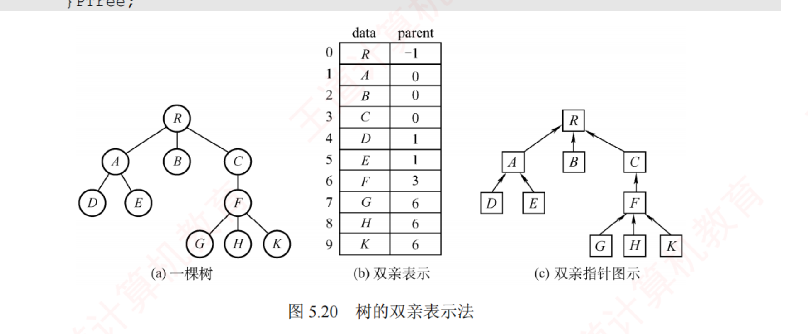
图 5.20 树的双亲表示法（裁自原书 p.169）。
查双亲 O(1)、查孩子要遍历整个数组（慢）。
陷阱 · 别把树的双亲数组当成二叉树的顺序数组
双亲表示法里，下标只是结点编号，父子关系靠 parent 域显式记录 ；而二叉树的顺序存储里下标本身隐含父子关系 （i 的左孩子 2i+1、右孩子 2i+2）。二叉树是树的特例可以借用树的存储，但一般的树不能直接用二叉树的顺序方式存 。
我的补讲 · 三种存储法只考一件事：查双亲快还是查孩子快
书上说 ：双亲表示法查双亲 O(1)、查孩子要遍历整个数组。
潜台词是 ：三种存储法的全部考点就是这张
「谁快谁慢」的对照表 ，因为它们的差别只在「指针指向哪个方向」：
存储法 指针方向 查双亲 查孩子 存储类型 双亲表示法 每个结点 → 双亲 O(1) 慢（扫全数组） 顺序 孩子表示法 每个结点 → 一条孩子链 慢（扫全树） 快 （顺链走）链式 孩子兄弟表示法 → 长子、→ 右兄弟 慢（O(n)，扫全树） 快 链式
所以能考 ：
5.4-13 的错误项 C 正是「孩子兄弟表示法查双亲是 O(1)」 ——错，孩子兄弟法的两个指针
一个往下一个往右，没有一个往上 ，要找双亲只能把整棵树扫一遍，
O(n) 。
⚠️ 同题的 A 项「10 个结点有 9 个指向双亲的指针」是对的：
除根外每个结点都有一个双亲指针 ，与「n 个结点 n−1 条边」是同一句话。
一句话判据：想要哪个方向快，就把指针朝哪个方向存；要两个方向都快，就得多存一个域（三叉链表 / 加 parent 域）。
知识串联 · 孩子表示法 = 树的邻接表，ch6 图那一章就是这么存的
→ 数构 ch6 「顺序表存 n 个头指针 + 每个头挂一条孩子单链表」——这正是邻接表 的结构。树是特殊的图（无环连通），所以 ch6 的邻接表可以原样拿来存树；反过来，本节的孩子表示法就是邻接表的树版预演。→ 数构 ch6 由此还能预知 ch6 的两个结论：邻接表查「某顶点的邻接点」快、查「谁指向我」慢 （要建逆邻接表），与本节「查孩子快 / 查双亲慢」是同一件事。→ OS ch2 进程家族树用的是双亲表示法 思路（每个 PCB 存 ppid 父进程号），因为 OS 最常问的是「我的父进程是谁」；要遍历子进程反而要扫进程表。→ OS ch4 文件系统的 .. 目录项就是显式存的双亲指针——没有它，从任意目录往上走就得从根重新搜 。一句话记牢：存储结构的选择永远由「最频繁的那个查询方向」决定，四科都在重复这一句。
我的补讲 · 双亲表示法在本章的真正主场不是 5.4，是 5.5 的并查集
书上说 ：双亲表示法用数组存结点，每个结点存双亲下标（根设 −1）。潜台词是 ：单看 5.4，双亲表示法「查孩子慢」几乎一无是处；但并查集恰好只需要往上找根、从不需要往下找孩子 ——于是这个「有缺陷」的结构在 5.5 变成了最优解。教材把它放在这里，其实是在给 5.5 铺垫。 所以能考 ：两处的写法有一个值得注意的升级——5.4 的双亲表示法 ：根的双亲域写 −1 ，只起「我是根」的标志作用；5.5 的并查集 ：根的双亲域写 −集合大小 ，负号当标志、绝对值当规模，一个域两用 ——这样「小树并大树」时不用另开一个数组存规模。读到 5.5.2 时回头看一眼这里 ：并查集的 S[] 数组就是本节的双亲数组，Find 就是「顺着 parent 一路往上走」。本节看着最没用的那个结构，是本章唯一被真题（2022、2023 在 ch6 的 Kruskal 里）间接考到的存储法。
2. 孩子表示法 & 3. 孩子兄弟表示法
孩子表示法 ：每个结点的所有孩子拉成一条单链表，n 个头指针放进顺序表。查孩子快、查双亲慢（与双亲表示法相反）。孩子兄弟表示法（＝二叉树表示法） ：结点存 data + firstchild（第一个孩子）+ nextsibling（右兄弟） ，即「左孩子—右兄弟」，用二叉链表存树。
typedef struct CSNode{
ElemType data;
struct CSNode *firstchild,*nextsibling; // 第一个孩子、右兄弟
}CSNode,*CSTree;
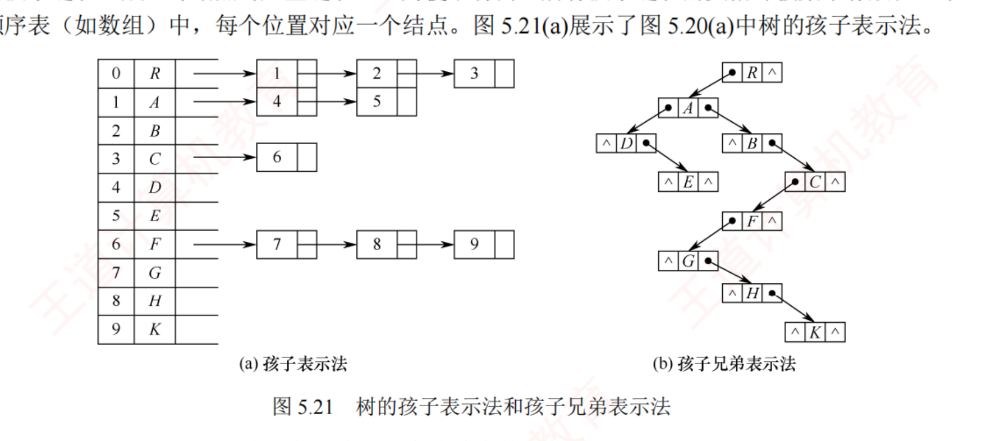
图 5.21 孩子表示法（左）与孩子兄弟表示法（右，裁自原书 p.169）。
孩子兄弟表示法最大的价值：能自然地把树转成二叉树，从而复用二叉树的算法。 查孩子快、回溯双亲难（可加 parent 域变三叉链表）。
我的补讲 · 孩子兄弟表示法的三条硬结论，本节一半的题靠它们
书上说 ：结点存 data + firstchild + nextsibling，即「左孩子—右兄弟」。
潜台词是 ：一旦接受「
左指针 = 长子、右指针 = 右兄弟 」，树上的三类计数问题就全部变成在二叉链表上数指针：
要数的量 在孩子兄弟链里等于 题 树 / 森林的叶结点数 左指针（fch）为空的结点数 ——没孩子才没长子5.4-9 · 2014 真题（5.4-17） · 5.4-综4 右指针为空的结点数 非终端结点数 + 1 ——每组兄弟的末位一个，再加森林最后一棵树的根5.4-8 · 2011 真题（5.4-16） 树的高度 max(fch 支 + 1 , nsib 支不加 ) 5.4-综5
所以能考 ：
·
5.4-9 的干扰项「5 个结点左右指针都空」是更严的条件 ——那是「既无孩子又无兄弟」，而叶结点只要求无孩子（可以有兄弟）。
判叶只看左指针，右指针一眼都不要看。
·
求高度那条最容易写反 ：普通二叉树是
h = max(h(L), h(R)) + 1（左右都加）；孩子兄弟链是
h = max(h(fch)+1, h(nsib))——
因为 nsib 指的是同一层的兄弟，走过去深度不变 。写成两边都 +1，就把兄弟当成了下一层，高度会算大。
我的补讲 · 一本双向词典：二叉树里的「左 / 右」↔ 树里的「长子 / 兄弟」
书上说 ：（转换规则只给了正方向。）
潜台词是 ：
考题一半以上是反着问的 ——给二叉树里的关系，问原树里是什么。所以这本词典必须两个方向都能查：
树 / 森林里 ⟺ 转换后的二叉树里 某结点的第一个孩子 ⟺ 它的左孩子 某结点的右兄弟 ⟺ 它的右孩子 没有孩子（叶结点 ） ⟺ 左指针为空 没有右兄弟（是末位孩子） ⟺ 右指针为空 森林里各棵树的根 ⟺ 二叉树根的右链 上的各结点
所以能考 ：
5.4-12 给「X 在二叉树里是右孩子」问原树——查表：右孩子 ⟺ 右兄弟 ⟹
X 一定有左兄弟 （选 D）。其余三个选项分别对应「左孩子」「有无右兄弟」「是不是叶」，都是没查表就凭感觉选的结果。
2009 真题（5.4-15） 更是纯词典题：二叉树里 u 是 v 的「父的父」，把这两步路径的「左 / 右」四种组合逐一翻译（左左 = 祖孙、左右与右左 = 父子或叔侄、
右右 = 兄弟 ），得出森林里可能是
父子或兄弟 （选 B），而「两人的父互为兄弟」造不出来。
知识串联 · 「把 n 叉降成二叉」是一种通用的降维手法
→ 本节 孩子兄弟表示法用两个固定指针 表达了「任意多个孩子」——代价是把「找第 k 个孩子」从 O(1) 变成 O(k)（要沿兄弟链走）。换来的是：所有二叉树算法可以原样复用。 → 数构 ch6 邻接表用「顶点数组 + 边链表」表达任意多条边，与「长子 + 兄弟链」是同一个套路：把「不定个数」变成「一条链」。 → 数构 ch7 B 树反其道而行：它不降维，直接在结点里放一个关键字数组和一个孩子指针数组 ——因为 B 树要的是「一次磁盘读入就拿到很多关键字」，降成二叉反而会增加 I/O 次数。两种做法的分水岭是「访问代价在哪」：内存里降维划算，磁盘上不划算。 → OS ch4 目录项、索引结点的多级索引同样面对「孩子个数不定」的问题，解法是索引块 + 间接块 （相当于分层的数组），与 B 树同一思路。一句话记牢：结构里出现「个数不定」时，只有两条路——拉成一条链（省空间、要顺序走），或者开一个数组（能随机访问、要预留）。本章 5.4 与 ch7 各选了一条。
5.4.2 树、森林与二叉树的转换
📄 p.170–171
考点追踪：树↔二叉树转换及性质（2009、2011） · 森林↔二叉树转换（2014） · 由遍历序列建二叉树并转森林（2020、2021）
树的孩子兄弟表示与二叉树的二叉链表物理结构完全相同 ，所以同一存储换个解释就能互转。
必记结论 · 「左孩子右兄弟」＋一个铁律
树转二叉树 ：每结点左指针指第一个孩子 、右指针指下一个右兄弟 。手工画法：兄弟间连线 → 每结点只留与第一个孩子的连线 → 以树根为轴顺时针转 45°。铁律：由树转成的二叉树，根结点一定没有右子树 （因为根没有兄弟）。
我的补讲 · 「根一定没有右子树」只对树成立，对森林不成立
书上说 ：由树转成的二叉树，根结点一定没有右子树（因为根没有兄弟）。潜台词是 ：这条铁律的适用范围只有「一棵树」 。森林里各棵树的根互为兄弟 ，所以第二棵树的根会挂到第一棵树根的右指针上——森林转成的二叉树，根有没有右子树取决于森林里有几棵树 。所以能考 ：5.4-2 问「用二叉链表存森林时根的右指针」，答案是「不一定为空」 （只有一棵树时才空）。命题人赌你把「树 → 根无右子树」这条背得太熟，忘了前提。森林里有几棵树 = 二叉树从根沿右指针能走到的结点数（含根） 。本章有四道题直接考它 ：5.4-6（16 结点完全二叉树，右链 1→3→7→15 共 4 个 ⟹ 4 棵树）、5.4-11（右链 A→C→F ⟹ 3 棵）、2021 真题（5.4-20） （右链 a→c→f ⟹ 3 棵）、5.4-综3（右链 A→C→G→J ⟹ 4 棵）。
我的补讲 · 森林 ⇄ 二叉树的结点数对应：一张图管四道题
书上说 ：森林转二叉树时，第二棵接到第一棵根的右子树，依次串下去。
潜台词是 ：把这句话画成一张图（
根 = 第一棵树的根；根的左子树 = 第一棵树剩下的部分；根的右子树 = 其余所有树 ），5.4-3/4/5/6 四道题就都是从这张图上读数：
问的量 答案 题（森林各树结点数 M₁, M₂, …） 二叉树根的左子树 结点数 M₁ − 1 （第一棵树去掉根）5.4-4（答 a−1，选 a 是漏减根） 二叉树根的右子树 结点数 M₂ + M₃ + … （其余各树之和）5.4-3 第一棵树的结点数 总数 m − 右子树 n （根属于第一棵树，不能再减 1 ）5.4-5（选 m−n−1 就是多减了根） 森林树数 & 最大的树 右链长 & 根 + 左子树 5.4-6（16 结点完全二叉树 ⟹ 4 棵、最大 9 个）
所以能考 ：这四题
本质是同一道题的四种问法 ，考场上的正确动作是
先在草稿纸上画那张「根 + 左子树 + 右子树」的示意图，再读数 ——比逐题回忆结论快且不会记反。
⚠️ 5.4-7 把这张图写成了递归定义：
BT 根 = T₁ 的根；左子树 = T₁ 的子树森林；右子树 = (T₂,…,Tₘ) 。
「左管往下、右管往后」 六个字就是全部。
我的补讲 · 2011 与 2014 两道真题：一个数「右空」，一个数「左空」
书上说 ：（正文没有这两个计数结论。）
潜台词是 ：这两道真题是
同一本词典的两个词条 ，摆在一起就再也不会混：
2011 真题（5.4-16） 2014 真题（5.4-17） 问什么 2011 个结点、116 个叶的树 ，转成的二叉树中无右孩子 的结点数 森林 F 的叶结点数 等于二叉树 T 中的什么 翻译 无右孩子 ⟺ 没有右兄弟 ⟺ 是某组兄弟的末位，或是根 叶 ⟺ 没有孩子 ⟺ 左指针为空 算式 / 答案 分支结点数 + 1 = (2011−116) + 1 = 1896 T 中左孩子指针为空的结点数 最毒的干扰项 1895（漏了根那 +1） 「T 中叶结点的个数」
所以能考 ：
2014 那个干扰项必须能当场反驳 ——T 的叶结点要求
左右指针都空 （既无孩子又无右兄弟），比「森林的叶」严格。森林里一个
有右兄弟的叶子 ，转换后左空右不空，在 T 里就不算叶了。所以恒有
F 的叶数 ≥ T 的叶数 ，只有「左指针为空」才精确相等。
⚠️ 这也正是
5.4-1 的说法 Ⅳ「树的叶数一定等于对应二叉树的叶数」判错 的理由——
多个叶子共用一个双亲时，转换后只有最右那个还是叶 。
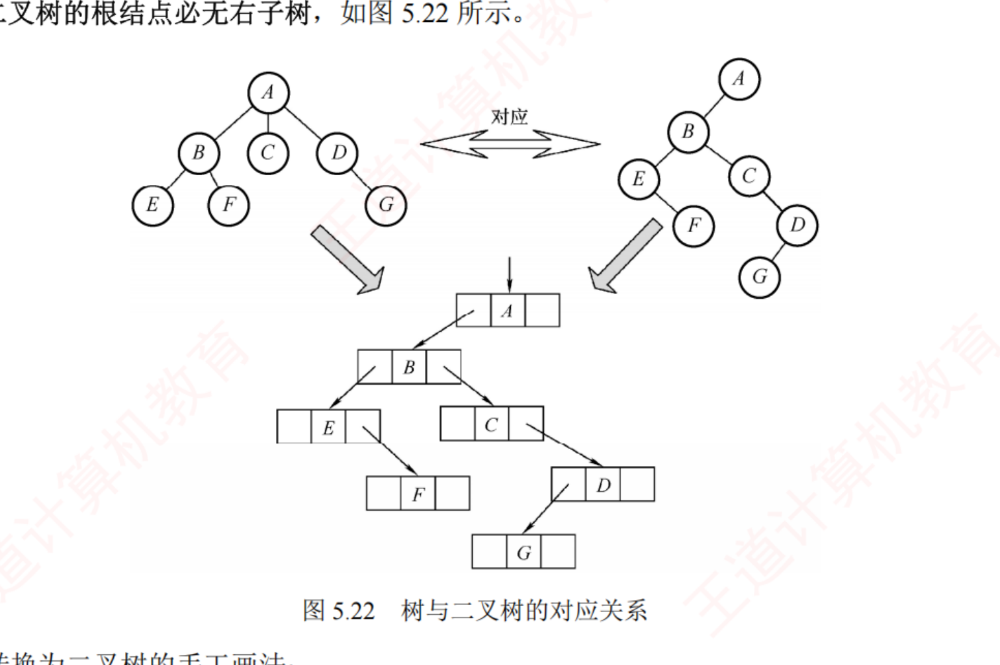
图 5.22 树与二叉树的对应关系（裁自原书 p.170）。
森林转二叉树 ：每棵树各自转成二叉树（根都无右子树）→ 把各根视为兄弟，第二棵接到第一棵根的右子树，依次串下去。二叉树转回森林 ：把根及其左子树作为第一棵树，断开根的右链 ，右子树代表剩余森林，递归分离。转换结果唯一。
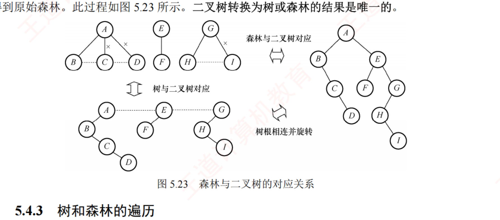
图 5.23 森林与二叉树的对应关系（裁自原书 p.171）。三层对照：森林 ⇄ 各树 ⇄ 二叉树。
我的补讲 · 二叉树转回森林：抓住「右孩子 = 兄弟」逆向展开
书上说 ：把根及其左子树作为第一棵树，断开根的右链，右子树代表剩余森林，递归分离。潜台词是 ：手工做逆变换有一个更好操作的口诀——「凡是左孩子 x，把 x 的整条右链全部提上来，变成 x 双亲的孩子；然后删掉所有『双亲 → 右孩子』的连线」 。因为右链上的结点本来就是同一组兄弟。所以能考 ：5.4-11 （中序 BDAECF + 后序 DBEFCA）与 5.4-综3 （先序 + 中序建树再转森林）都是两步题 ：① 先用 5.3 的建树法把二叉树建出来；② 再数根的右链。第 ① 步才是丢分处 ——两道题都要求先由两种遍历序列唯一建树，建错了后面全错。建完务必用另一种遍历回验一遍。 一一对应（双射） 的：森林 → 二叉树唯一，二叉树 → 森林也唯一。2025 真题（5.4-21）的正确选项 B「任意一个森林都可以转换为一棵二叉树」考的就是这个「唯一且总能转」。
我的补讲 · 转换类题目只需要盯三个量，别去画完整的树
书上说 ：（三小节分别讲转换、遍历、存储。）
潜台词是 ：5.4 的 26 道题里，问的几乎全是下面三个量之一。
把这三个量的算法背熟，绝大多数题不用画树 ：
量 怎么算 考过的题 ① 右链长 （从根沿 rchild 走几个）= 森林里树的棵数 5.4-6 · 5.4-11 · 2021 真题 · 5.4-综3 ② 左指针为空的结点数 = 森林 / 树的叶结点数 5.4-9 · 2014 真题 · 5.4-综4 ③ 右指针为空的结点数 = 非终端结点数 + 1 （树的情形 = 分支结点数 + 1） 5.4-8 · 2011 真题
所以能考 ：
这三个量恰好对应「左孩子右兄弟」的三种指针状态 ——右链是「兄弟方向」、左空是「没孩子」、右空是「没兄弟」。
记住这层对应，三个结论就不用死背。
⚠️
唯一需要动手画的是 5.4-综2 那类「请画出转换结果」的题 ，三步法：
兄弟之间连横线 → 只保留到第一个孩子的竖线 → 顺时针转 45° 。
画完自查一条：森林有几棵树，根的右链上就该有几个结点。
知识串联 · 「先根 = 先序、后根 = 中序」这类对应表，四科都要求「翻译能力」
→ 网络 ch1 OSI 与 TCP/IP 的层次对照表 是同一类东西：两个体系的层数不同，必须逐层翻译（「为上一层提供服务」的层号换算是网络 ch1 的高频考点）。这类题的共同点是：不理解也能背，但背反了就整题错。 → 组原 ch2 原码 / 反码 / 补码 / 移码之间的换算表同理——四种表示对同一个真值有四套写法 ，考的是「换算」而不是「理解」。→ OS ch3 逻辑地址 ⇄ 物理地址的转换、虚拟页号 ⇄ 页框号，也都是「两套坐标系之间的翻译」。这类表的记忆办法是相同的：不要孤立地背，要记住「为什么是这一行」 。本节记住「二叉树的左子树装孩子、右子树装兄弟」，就能当场推出「中序 LNR = 先孩子、再自己、再兄弟 = 后根遍历」，比死记安全得多。一句话记牢：凡是「A 体系的 X ↔ B 体系的 Y」的对照表，都要能现场推一遍；只靠死记的对照表，在考场紧张时最容易记反。
我的补讲 · 5.4 的题干里只要出现这四个词，答案就基本定了
书上说 ：（三小节各讲各的。）潜台词是 ：本节 26 道题的题干高度模板化，四个关键词几乎直接指向答案 ：右子树 / 右孩子 / 右指针 」⟹ 想「兄弟 」（右链长 = 树的棵数；右空 = 没有下一个兄弟）；左子树 / 左孩子 / 左指针 」⟹ 想「孩子 」（左空 = 没有孩子 = 叶）；后根 / 森林的中序 」⟹ 想「二叉树的中序 」（不是后序）；第一棵树 / 森林有几棵 」⟹ 想「根 + 左子树 / 右链长 」。所以能考 ：2009、2011、2014、2019、2020、2021、2025 七道真题 逐一对应——2011 用 ①、2014 用 ②、2019 与 2020 用 ③、2021 用 ①④、2009 用 ①②的翻译词典、2025 用 ③④ 加上 5.2 的结论。本节没有一道题需要真正把树画出来。
知识串联 · 「一一对应（双射）」是本节结论成立的隐含前提
→ 本节 森林 ⇄ 二叉树的转换是双向唯一 的，所以才能说「森林的先根序列 = 二叉树的先序序列」并互相替代 。2025 真题的正确选项「任意一个森林都可以转换为一棵二叉树」考的就是这个「总能转 + 唯一」。 → 数构 ch5.3 同一个思路解释了「树的先根 + 后根能唯一确定树」：因为转换是双射，二叉树被确定 ⟺ 原树被确定 。→ 组原 ch2 补码与真值之间也是一一对应（在字长范围内），所以「补码运算的结果解释回真值」才是合法的；一旦溢出，双射被打破，结论立刻失效 ——与「转换必须唯一」是同一种严谨性。→ 网络 ch4 NAT 的地址转换要靠端口号维持一一对应 ，否则回来的分组不知道该给谁。一句话记牢：凡是「A 的问题可以转成 B 来做」的技巧，都必须先确认这个转换是一一对应的；本节所有结论都建立在这一句上。
我的补讲 · 5.4 收尾：三张必背的表，占了本节 90% 的分
书上说 ：（表 5.1 只给了遍历对应。）
潜台词是 ：本节 26 道题、7 道真题，考的其实就是下面三张表。
把它们默写出来，本节就可以只刷题不再看书 ：
表 内容 覆盖的真题 ① 遍历对应表 树先根 = BT 先序；树后根 = BT 中序 ；森林先序 = BT 先序；森林中序 = BT 中序。没有第三行 2019 · 2020 ② 转换词典 长子 ⟺ 左孩子；右兄弟 ⟺ 右孩子；无孩子 ⟺ 左空；无右兄弟 ⟺ 右空；各树的根 ⟺ 根的右链 2009 · 2011 · 2014 · 2021 ③ 存储对照表 双亲表示法（顺序，查双亲 O(1)）· 孩子表示法（链式，查孩子快）· 孩子兄弟法（链式，查双亲 O(n) ） 5.4-13 类概念题 · 2025
所以能考 ：
三张表里最容易记反的是 ① 的第二行 （脱口而出「后根对后序」就错），其次是 ③ 的最后一格（想当然地以为孩子兄弟法能 O(1) 找双亲）。
这两处正好是 2019 真题与 5.4-13 的答案。
5.4.3 树和森林的遍历
📄 p.171–172
考点追踪：树与二叉树遍历方法的对应（2019） · 森林与二叉树遍历方法的对应（2020）
树的先根遍历 ：先访问根，再依次先根遍历每棵子树 —— 与对应二叉树的先序 序列相同。树的后根遍历 ：先依次后根遍历每棵子树，再访问根 —— 与对应二叉树的中序 序列相同。森林的先序遍历 ＝对应二叉树先序；森林的中序遍历 ＝对应二叉树中序。
必记结论 · 遍历对应表（表 5.1）
树 森林 二叉树 先根遍历 先序遍历 先序遍历 后根遍历 中序遍历 中序遍历
关键记忆点：树 / 森林的「后根 / 中序」对应二叉树的「中序」，不是后序！ （有的教材把森林中序叫「后序」，因为根确实最后才访问——命名不同，别被绕晕。2019、2020 真题就靠这张表。）
我的补讲 · 遍历对应表只有两行，第三行根本不存在
书上说 ：树的后根遍历与对应二叉树的中序序列相同，不是后序。潜台词是 ：这张表之所以只有两行 ，是因为树 / 森林的遍历只有两种（先根、后根），而它们的「根在何时访问」只对应到二叉树的先序和中序。「后根 ↔ 后序」这一行是命题人凭空造出来的干扰项，永远不要选。 为什么后根对应中序 （一句话理解）：转换后，一个结点的左子树装的是它的孩子们、右子树装的是它的兄弟们 。中序 LNR = 先走孩子（左）→ 访问自己（N）→ 再走兄弟（R），正好是「先访问完所有孩子再访问双亲」的后根遍历。所以能考 ：这一条2019、2020、2021 连考三年 ：2019（5.4-18） ：直接问「BT 的哪种遍历与 T 的后根序列相同」——答中序 ；2020（5.4-19） ：森林先根 = BT 先序、森林后根 = BT 中序 ⟹ 由先序 abcdef + 中序 badfec 建树 ⟹ 取后序 bfedca 。注意问的是 T 的后序，不是森林的后根（那是干扰项 A） ；2021（5.4-20） ：由先序 + 中序建树，再数根的右链 ⟹ 3 棵树 。「先把森林的遍历翻译成二叉树的遍历，再用 5.3 的建树法」 ——本节与 5.3 是连着考的。
我的补讲 · 「树的先根 + 后根」能唯一确定树，可「二叉树的先序 + 后序」不能——差别在哪
书上说 ：（5.4-综1 的结论。）潜台词是 ：这两句话看起来矛盾，其实只差一次翻译：先根 翻译过去是二叉树的先序 ；后根 翻译过去是二叉树的中序 （不是后序 ！）；先序 + 中序 」= 含中序，可以唯一确定 。整个差别就在「后根翻译成的是中序」这一个字上。 所以能考 ：5.4-综1 要求给出理由，标准写法是三步：① 先根 = 先序、后根 = 中序；② 先序 + 中序唯一确定二叉树；③ 树与二叉树一一对应 ⟹ 树被唯一确定。写解答题时这三步缺一不可，只写「能」不给推导拿不到分。
我的补讲 · 2025 真题：一道题把本章四个结论各考一遍
书上说 ：（分散在本章各处。）
潜台词是 ：这种「四个选项分属四个知识点」的综合辨析题
是近年的新趋势 （2025 数据结构里这类题变多了），它的正确打开方式不是逐项推导，而是
逐项认出「这是本章哪一句话」 ：
选项 对应的本章结论 判定 完全二叉树中不存在度为 1 的结点 5.2 性质 4⑤：至多一个 （n 为偶数时恰有一个） ✗ 太绝对 任意一个森林都可转换为一棵二叉树 5.4.2：左孩子右兄弟，唯一且总可行 ✓ 答案 二叉树的分支结点数比叶结点数少 只有 n₀ = n₂+1，分支 = n₁+n₂ 不受此限 ✗ 反例：单支树叶 1 个、分支 n−1 个 表达式树的根保存最先计算的运算符 5.3-综16：根是最后算的 （最外层、优先级最低） ✗ 最先算的在最深的子树里
所以能考 ：最后一项值得单独记——
表达式树的根 = 最后执行的运算符 ，这也正是 2017 算法真题里「根结点不加括号」的原因（最外层无歧义）。
「根最后算」和「后序遍历得到后缀表达式」是同一件事的两种说法。
知识串联 · 「一片森林 = 若干棵树」这句话在 ch6 和并查集里各兑现一次
→ 本章 5.5.2 并查集就是一片森林 ：每个集合一棵树，用双亲表示法存；「有几个集合」= 「有几棵树」= 「有几个根」。本节数森林棵数的功夫，下一节直接接着用。→ 数构 ch6 无向图的连通分量个数 = 用并查集把每条边的两端 Union 之后剩下的集合数；生成森林 的棵数 = 连通分量数。ch6 的 Kruskal 算法之所以要用并查集，就是为了判断「这条边的两端是不是已经在同一棵树里」（在则成环）。→ 数构 ch6 「n 个顶点的树有 n−1 条边、k 棵树的森林有 n−k 条边」在 ch6 变成「n 个顶点的生成树有 n−1 条边」——2016 真题（5.1-10）就是拿这条考的 。一句话记牢：森林的棵数 = 结点数 − 边数 = 根的个数 = 连通分量数，四种说法在三章里换着问。
知识串联 · 「同一块存储，换一种解释就是另一种结构」
→ 本节 孩子兄弟链表与二叉链表物理结构完全相同 ，同一堆结点，把左指针读作「长子」就是树、读作「左孩子」就是二叉树——树与二叉树的转换根本不需要搬动任何数据，只是换了个解释 。→ 组原 ch4 内存里的一串 0/1，取指周期取出来就当指令、执行周期取出来就当数据 ——冯·诺依曼机的「存储程序」思想与此同构。→ OS ch3 同一段物理内存，通过不同的页表映射，可以同时是 A 进程的代码段和 B 进程的数据段；共享内存 正是靠「同一块存储、两套解释」实现的。→ 数构 ch8 一个数组，按下标顺序读是顺序表 ，按 2i / 2i+1 的关系读就是堆 ——本章 5.2 的顺序存储也是这个思路。一句话记牢：数据结构 = 存储 + 解释。考试问「这两种结构有什么关系」时，先看它们的存储是不是同一个东西。
背景 · 双亲表示法与孩子表示法的结构体代码不用默写
王道给了三种存储法的结构体定义，但算法题里真正被用到的只有孩子兄弟表示法 （5.4-综4 求叶子数、5.4-综5 求树高，两题都基于 fch / nsib），而双亲表示法的代码只在 5.5 的并查集里以「一个整型数组」的形式出现 ——那时候连结构体都不需要。所以这两段定义看懂即可 ，需要留下的只有那张「查双亲快 / 查孩子快」的对照表和一句话：双亲表示法是顺序存储，另外两种是链式存储 （5.4-13 的 D 项考过这一句）。
知识串联 · 目录树、DNS、组织结构——现实里的树几乎都是「多叉 + 有序」
→ OS ch4 文件目录是标准的多叉树 ：一个目录下的文件个数不定（正是本节「孩子个数不定」的问题），路径名 /usr/local/bin 就是从根到叶的一条路径 ；OS 的「路径解析」= 本章的「沿树下降」。目录项里存 .. 正是显式的双亲指针。 → OS ch2 进程家族树（fork 出来的父子关系）也是多叉树，OS 用 ppid 双亲指针存它 ——因为最常问的是「我的父进程是谁」，与本节「按最频繁的查询方向选存储」一致。→ 网络 ch6 DNS 域名空间是一棵有序多叉树 ，域名从叶到根反着写 ；它的遍历（迭代查询）就是「从根往下走一条路径」 。→ 网络 ch4 IP 地址的层次划分（网络号 / 子网号 / 主机号）也是树形的——路由聚合 = 把一棵子树整个用一条路由表项概括 。一句话记牢：现实中的层次结构都是多叉的，而计算机内部偏爱二叉——中间那道翻译就是本节的「左孩子右兄弟」。
5.5 树与二叉树的应用
5.5.1 哈夫曼树和哈夫曼编码
📄 p.180–182
结点的权 ：赋给结点的值。带权路径长度（WPL） ＝所有叶结点的（权 × 到根路径长度）之和：WPL = Σ wi li 在含 n 个带权叶结点的所有二叉树中，WPL 最小的称为哈夫曼树（最优二叉树） 。
哈夫曼树的构造
考点追踪：路径上权值序列的合法性（2010） · 哈夫曼树的性质（2010、2019）
给定 n 个权值：① 视为 n 棵单结点树组成森林 F；② 取 F 中根权最小的两棵 合并，新根权＝两子根权之和；③ 从 F 删这两棵、加入新树；④ 重复直到只剩一棵。
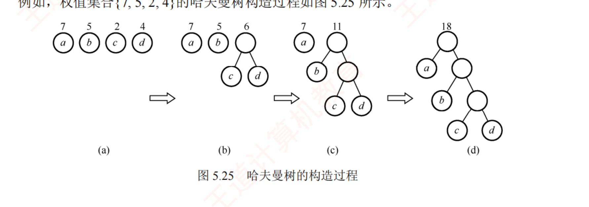
图 5.25 哈夫曼树的构造过程（裁自原书 p.181）。每次挑最小的两棵合并。
必记结论 · 哈夫曼树的三条性质
① 权值越小的结点，到根路径越长（越靠下）；总结点数 = 2n − 1 （n 个初始叶 + n−1 个内部结点）；不存在度为 1 的结点 （是严格 / 正则二叉树）。WPL = 所有非叶（内部）结点的权值之和 （免去数路径长度，算 WPL 更快）；形态可能不唯一，但 WPL 唯一且最小。
我的补讲 · 先记住：5.5 是本章失分密度最高的一节，而它只有两个模型
书上说 ：（本节讲哈夫曼树与并查集两件事。）潜台词是 ：这 14 页考了 12 道统考真题（0.86 道/页，全章第一） ，而且2014–2025 的 12 年里考了 10 年 （只缺 2016、2024）——它是本章最稳定的年货，却常常因为排在最后而被复习时间挤掉 。12 道真题全部落在下面五个动作里 ：数结点 （2019：2n−1=115 ⟹ n=58）；② 算 WPL / 加权平均码长 （2021、2023）；③ 判前缀码 （2014）；④ 按构造过程数码长 / 判编码方案 （2017、2018、2025、2015）；⑤ 性质辨析 （2010、2022）。所以能考 ：这一节应该在本章最先练，不是最后练 ——它的手算流程固定、题干短、每题 1~2 分钟，是本章性价比最高的一段。
我的补讲 · 哈夫曼树的「数关系四件套」：一个 n 推出全部
书上说 ：新建了 n−1 个结点，总结点数 2n−1，不存在度为 1 的结点。
潜台词是 ：这三句话其实是
同一个事实的三种说法 ——「每次合并两棵、共合并 n−1 次」。由它可以一步推出考场需要的全部数字：
量 值（n 个初始权值 / 字符） 题 叶结点数 = 字符数 = 码字个数 n 5.5-5（215 个结点 ⟹ 108 个码字） 非叶（内部）结点数 = 合并次数 n − 1 5.5-1 总结点数 2n − 1（必为奇数） 2019 真题 ：2n−1=115 ⟹ n=58度为 1 的结点数 恒为 0 （严格 / 正则二叉树）5.5-7、5.5-8
所以能考 ：
看清题目问的是「叶」还是「内部」还是「总数」 ——5.5-5 的干扰项 107 正是内部结点数、214 是 n−1 的另一种凑法。
反解一律用 n₀ = (总数+1)/2。
⚠️
5.5-8 的说法 Ⅱ 是一个做得很像的假命题 ：「度 1 结点数 = 度 2 与度 0 之差」——哈夫曼树的度 1 结点数恒为
0 ，而 n₂ − n₀ =
−1 ，两者并不相等。它长得像 n₀ = n₂+1，但张冠李戴。
⚠️ 推广到
m 叉哈夫曼树 （每次合并 m 棵）：
nm = (n₀−1)/(m−1) （5.5-9）——若除不尽，需要
补权值为 0 的虚结点 凑齐，这是 m 叉版独有的细节。
我的补讲 · WPL 有两种算法，考场上永远用第二种
书上说 ：WPL = Σ(叶权 × 路径长度)；另外 WPL = 所有非叶结点的权值之和。潜台词是 ：第二种不只是「更快」，而是根本不需要把树画出来 ——你在构造过程中每合并一次就得到一个新权值，把这些新权值加起来就是 WPL 。为什么成立 ：每个内部结点的权 = 它子树里所有叶权之和；把所有内部结点的权加起来，某个叶的权就被累加了「它到根路径上经过的内部结点个数」次 = 它的深度 次 ⟹ 总和 = Σ(叶权 × 深度) = WPL。所以能考 （两道真题当场验证）：2021 真题（5.5-20） ：{10,12,16,21,30} 合并出 22、37、52、89 ⟹ WPL = 22+37+52+89 = 200 （与按深度算的 (10+12)×3+(16+21+30)×2 = 200 一致）；5.5-综1 ：{5,7,2,3,6,8,9} 合并出 5、10、13、17、23、40 ⟹ WPL = 108 。2021 的干扰项 89 是「根的权值」（= 全部权值之和），不是 WPL ——这是本节最容易顺手写错的一个数。2023 真题（5.5-22）再往前走一步 ：问的是加权平均编码长度 = WPL ÷ 总频次 。{3,4,5,6,8,10} 的 WPL = 90，总频次 36 ⟹ 90/36 = 2.5 。算出 90 就交卷会发现选项里没有它——记得除。
我的补讲 · 构造过程的四条不变量，2010 / 2015 / 2025 三道真题全靠它们
书上说 ：每次取根权最小的两棵合并，新根权 = 两子根权之和。潜台词是 ：这句操作规则同时锁死了四个可以拿来判定的性质 ——真题就是逐个来考这四条的：父权 = 两个子权之和 （严格相等）；父权 > 每个子权 （权值为正 ⟹ 沿任一条根到叶的路径，权值严格递减 ，即满足堆序）；最小的两个权必是兄弟 （第一次合并就把它们配成一对）；权越小的叶越深 （越早参与合并，被后续合并「盖」得越多次）。所以能考 ：2015 真题（5.5-16） 给两条「从根到叶的权值序列」问能否属于同一棵哈夫曼树——做法：看两条路在哪分叉，检查「分叉点的权 = 两个分支的权之和」（用①），再检查每条路是否严格递减（用②） 。选项 A 里 5+7=12≠10 ✗、B 里 10+12=22≠24 ✗、C 里出现 10 的孩子还是 10（违反②）✗，只有 D 的 10+14=24 ✓ 。2010 真题（5.5-14） 问哪句错：「哈夫曼树一定是完全二叉树」错 （它通常很偏斜）；而「最小的两个是兄弟」「非叶结点权不小于下一层任意结点」都由③④保证。2025 真题（5.5-23） 问码长 ≥ 3 的字符有几个——按④，权最大的两个（10、11）码长 2，其余五个（2,3,4,6,8）码长 ≥ 3 ⟹ 5 个 。不必画完整的树，跟着合并顺序数每个叶被「盖」了几次即可。
我的补讲 · 哈夫曼树的高度上下界（顺手订正一处旧笔误）
书上说 ：（只在课后题里问过一次「最高」。）潜台词是 ：n 个叶的严格二叉树，层高只可能落在一个区间里，两端都能被真实权值取到：最高 = n （层数口径）——让每次新建的内部结点立刻参与下一次合并 ，树被拉成一条斜链。用斐波那契式权值 （如 1,1,2,4,8）就能强制出这种形态；最矮 = ⌈log₂n⌉ + 1 ——权值全相等时取到。所以能考 ：5.5-6 问 5 个叶的哈夫曼树最高 是多少，答 5 。顺带订正一处我在题库解析里写错的数 ：那道题的解析里写「最矮的 5 叶哈夫曼树高度是 3」——是错的 。层高 3 的二叉树最多只能有 4 个叶（2²=4），装不下 5 个。用程序枚举 5 个叶的全部严格二叉树形态，层高只能是 4 或 5 （权值全为 1 时哈夫曼树层高恰为 4）。所以最矮是 4 = ⌈log₂5⌉+1 ，答案 C=5 不受影响，题库解析已同步改正。这类「最多能装几个叶」的判断一律回到「第 k 层至多 2k−1 个」那条性质上算，别凭印象。
知识串联 · 哈夫曼是「贪心」，而贪心在 408 里出现了不止一次
→ 数构 ch6 Kruskal 与 Prim 求最小生成树 用的是同一种思路：每一步都取「当前代价最小」的那个，且能证明局部最优导出全局最优。哈夫曼树可以看成「带权叶结点版的最小生成树」 。→ 数构 ch6 Dijkstra 最短路 同样是贪心（每次取当前距离最小的顶点定型）。三者的共同点是都用「取最小」这个动作驱动 ，实现上都要一个优先队列（堆） ——而堆正是本章的完全二叉树。→ 本章 5.5-综2（2012 统考真题） 多个有序表的归并次序问题：把表长当权值，最优归并顺序就是哈夫曼树 ；总比较次数 = Σ(表长 × 它被重新扫描的次数) 正是 WPL 的形状。→ OS ch2 短作业优先（SJF）调度使平均等待时间最小，也是「每次取最小」的贪心——和哈夫曼「先合并短的」是同一个直觉：让长的东西少参与几轮 。一句话记牢：凡是「每次挑最小的两个 / 一个」并且要求总代价最小的题，先想哈夫曼，再想它需不需要一个堆。
我的补讲 · 手算哈夫曼树不要画树，写「合并序列」就够了
书上说 ：（给了一张四步构造图。）
潜台词是 ：画树又慢又容易连错线，而
本节所有的问法都能从「合并序列」上直接读出来 。标准草稿格式是一行一次合并：
权集 {10,12,16,21,30}
① 10 + 12 → 22 剩 {16,21,22,30}
② 16 + 21 → 37 剩 {22,30,37}
③ 22 + 30 → 52 剩 {37,52}
④ 37 + 52 → 89(根) 剩 {89}
⟹ WPL = 22+37+52+89 = 200 （内部结点权之和）
⟹ 深度：10、12 各被盖 3 次 ⟹ 码长 3；16、21、30 各 2 次 ⟹ 码长 2
从这四行里能直接读出的量 ：
WPL （把右边的新权全加起来）·
每个字符的码长 （数它被「盖」进新结点几次）·
树高 （最长的那条盖链）·
谁和谁是兄弟 （同一行的两个）。
所以能考 ：
2021（WPL=200）· 2023（WPL=90，再除总频次得 2.5）· 2025（数码长≥3 的有 5 个）· 2018（比码长分布）· 5.5-综1（WPL=108） 五道题全部可以只靠这张草稿完成，
一棵树都不用画 。
⚠️
每次合并后一定把新权放回集合再排序 ——最常见的错法是「只在原始权值里挑最小的两个」，忘了新生成的权也参与竞争（本例第 ③ 步挑的就是新权 22）。
知识串联 · 哈夫曼是「信源编码」，网络 ch2 讲的编码是另一回事
→ 网络 ch2 网络物理层的曼彻斯特编码、4B/5B 属于信道编码 / 线路编码 ：目标是自同步、抗干扰 ，因此故意增加冗余 （曼彻斯特把 1 位变成 2 个电平，编码效率只有 50%）。信源编码 ：目标是去冗余、压缩 ，因此让高频字符用短码。一个在加冗余、一个在减冗余，方向正好相反——不要因为都叫「编码」就混为一谈。 → 网络 ch3 循环冗余校验 CRC 也是加冗余 （为了检错）；先压缩再加校验 是真实系统的通行做法。→ 数构 ch8 多路平衡归并 与哈夫曼是同一个模型：5.5-综2（2012 真题）把「表长」当权值，最优归并顺序就是哈夫曼树 ；ch8 的外部排序里，「败者树选最小」与哈夫曼「每次取最小的两个」共用一个优先队列。→ 组原 ch4 扩展操作码让常用指令占短码、罕用指令占长码，就是指令集上的哈夫曼编码 （见前面那块串联）。一句话记牢：看到「编码」两个字先问目的——为压缩（哈夫曼、扩展操作码）还是为可靠 / 同步（曼彻斯特、CRC）。
我的补讲 · 哈夫曼编码题的三种问法与它们各自的最短路径
书上说 ：把字符频率当权构造哈夫曼树，得到总长最短的前缀编码。
潜台词是 ：编码题从来不需要你真的把 0/1 串写出来（
写出来也没法和选项逐字比对，因为左右 0/1 不唯一 ）。三种问法各有一条最短路径：
问什么 最短路径 不要做什么 码长 / 加权平均长度 / WPL 写合并序列 ，读新权之和与「被盖次数」 不要画树 哪组编码「可能是」哈夫曼编码 算出码长的多重集 ，与选项的码长排序比对，再验前缀码 不要试图写出具体编码 译码 / 判前缀码 从左往右贪心切 / 两两查前缀 不要建整棵编码树（除非题目就是要你描述结构）
所以能考 ：
2018 真题是第二行的标准考法 ——先算出频次 {6,3,8,2,10,4} 的码长分布是
{2,2,2,3,4,4} （权最大的 e10、c8、a6 各 2 位），再看哪个选项的码长排序对得上并且是前缀码，答案 A。
⚠️
「码长唯一但编码不唯一」是这类题的全部立足点 ：哈夫曼树形态可以不同（左右可换、等权合并顺序可换），
但每个字符的深度是确定的 。所以选项之间只可能在「码长分布」上分胜负。
知识串联 · 「频率决定代价」——哈夫曼的思想在四科都被拿去做优化
→ 组原 ch3 Cache 之所以有效，是因为访问频率极不均匀（局部性原理） ：把高频数据放在快而小的存储里，低频的放慢而大的——与「高频字符给短码」是同一句话 。存储层次结构整体就是一棵按频率组织的「哈夫曼式」结构。→ OS ch3 页面置换算法（LRU / 工作集）押的也是访问频率与局部性；「最近最少使用的先换出」= 「低频的付出更大代价」 。→ 组原 ch4 指令集设计里常用指令给短操作码、复杂指令给长编码（扩展操作码），RISC 干脆规定全部定长 ——这正是「变长省空间 vs 定长好译码」的取舍 ，与 2022 真题比较 T₁、T₂ 的那道题同题异构。→ 网络 ch6 DNS 与 Web 缓存把热门域名 / 页面留在本地，同样是「高频的放近处」。一句话记牢：只要访问频率不均匀，就一定存在「给高频者更短的路径」的优化空间——哈夫曼是这条原理在编码上的最优解，Cache、页面置换、指令编码是它在别处的近似解。
知识串联 · 表示一个集合的三种办法，本章与 OS 各用了一种
→ 本章 5.5.2 并查集用「森林 + 双亲数组」表示一族不相交集合 ，强项是合并快、判同组快 ，弱项是列举某个集合的全部元素很慢 （要扫全数组）。→ OS ch4 空闲盘块管理的位示图 是另一种表示：一位一个盘块，1 表示空闲 ——强项是判某块在不在集合里 O(1)、找连续空闲块方便 ，弱项是集合的合并 / 拆分 没有意义（它压根不表示"分组"）。→ OS ch4 空闲块链表 是第三种：强项是取一块 O(1)，弱项是查询某块状态要遍历。「这两个是不是一伙的」用并查集 · 「这一个在不在里面」用位示图 · 「随便给我一个」用链表 。→ 数构 ch7 散列表则是「这一个在不在里面」的另一种答案（平均 O(1)，代价是要处理冲突）。一句话记牢：选哪种集合表示，取决于你最常问集合的哪一个问题——本章的并查集是为「判同组」而生的，别拿它去做别的事。
知识串联 · 哈夫曼树满足「父 ≥ 子」，这正是堆序；它俩共用一个优先队列
→ 数构 ch8 哈夫曼构造的每一步都要「取出当前最小的两个 」——高效实现就是用小根堆 （优先队列），每次取两次堆顶、合并后再插回，总代价 O(n log n)。ch8 的堆就是本章 5.2 的完全二叉树。 → 本章 5.5-14（2010 真题） 「非叶结点的权不小于下一层任意结点的权」这条性质，说的其实就是哈夫曼树本身也满足堆序（父 ≥ 子） ——注意区分：堆序管的是「父子之间」，与「左右之间」无关 ，所以哈夫曼树既不是 BST 也不必左小右大。→ 数构 ch6 Prim 与 Dijkstra 也各需要一个优先队列来「取当前最小」；三处算法（哈夫曼、Prim、Dijkstra）的贪心动作完全相同，只是"最小"的含义不同 。→ OS ch2 / ch5 优先级调度、磁盘请求的优先队列同理。一句话记牢：「每次取最小」这个动作在 408 里出现至少四次，它的标准实现永远是堆——而堆就是本章的完全二叉树 + 顺序存储。
哈夫曼编码 & 前缀编码
考点追踪：据编码译码（2017） · 构造与分析（2012、2018、2021、2023） · 前缀编码（2014、2020） · 与定长编码的差异（2022）
前缀编码 ：任一编码都不是另一编码的前缀，从而解码无歧义 。用二叉树设计前缀码：约定左分支 0、右分支 1，每个字符放在叶结点 ，从根到叶的 0/1 串即其编码——这样生成的必是前缀码。把字符出现频率当权构造哈夫曼树，得到的就是总长最短的二进制前缀编码 （数据压缩）。
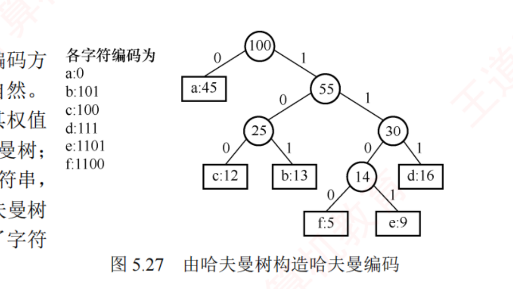
图 5.27 由哈夫曼树构造哈夫曼编码（裁自原书 p.182）。WPL = 224，比 3 位定长的 300 位压缩约 25%。
陷阱 · 前缀码判定 & 形态不唯一
① 某编码是另一编码的前缀 → 不是前缀码 （如给 A/B/C 编 0/10/110 后再给 D 编 11，11 是 110 的前缀，非法）。选择题给一组编码判是否前缀码，就看有没有谁是谁的前缀。没有强制规定 ，权值相同的结点合并顺序也可不同，所以哈夫曼树形态可能不唯一 ，但WPL 恒定且最小 ——问「哈夫曼树是否唯一」答不唯一 ，问 WPL 答唯一 。
我的补讲 · 判前缀码只有两个动作，二选一即可
书上说 ：任一编码都不是另一编码的前缀。潜台词是 ：这个定义有两种等价的可执行判据 ，考场上按题目形式挑一个用：逐对检查「短码是不是某个长码的开头」 ——把编码按长度排序，短的去比长的。等长的码之间不可能有前缀关系，可以整组跳过。 几何判据：把所有码字画进一棵二叉树（0 走左、1 走右），前缀码 ⟺ 每个码字都落在叶结点上 。若某个码字落在内部结点，它就是它下方所有码字的前缀。所以能考 ：2014 真题（5.5-15） ：D 中 110 是 1100 的前缀 ⟹ 非前缀码。扫描技巧：先找长度不同的码对，本题一眼盯住 110 与 1100；5.5-3 ：B 中 0 是 00 的前缀、1 是 11 的前缀 ⟹ 非前缀码；2020 真题（5.5-综3） 整道题就是判据 ② 的展开：第 1 问答「用二叉树保存」；第 2 问译码 = 从根出发按位下降，到叶就输出并回到根；第 3 问判前缀特性 = 边插入边建树 ——插入某个码时若中途经过了已有的叶 （说明已有码是它的前缀），或整条路径一个新结点都没建出来 （说明它是已有码的前缀），就判定非前缀码。第 3 问的两种失败情形要写全，只写一种拿不到满分。
我的补讲 · 编码空间也有「名额守恒」：占了一个短码，就废掉一整棵子树
书上说 ：（5.5-4 的结论。）潜台词是 ：在编码树里，给某个字符分配码字 c，等于把「以 c 为前缀的整棵子树」全部作废 ——这正是前缀码的代价。于是「还能再编几个字符」变成一道纯数格子的题：所以能考 ：5.5-4 ：已用 1 和 01，码长不超过 4，还能编几个？1 占掉了根的整个右子树 ；01 占掉「左→右」那一支；00… 这条路可用，而码长上限 4 意味着 00 之后还能再走 2 层 ⟹ 底层有 2² = 4 个叶 ⟹ 最多再编 4 个字符。把「码长上限」改一个数，答案就变 ：上限改成 3 ⟹ 只剩 2 个。所以这类题必须先在草稿上画出那棵编码树的骨架，再数叶。 「上层占了名额，下层就少一批」是本章反复出现的算法。
我的补讲 · 三道编码真题的三种不同问法，各有一个专用动作
书上说 ：（正文只讲了怎么构造编码。）
潜台词是 ：真题从不让你「把编码写出来」（那太费时间），而是问三种
可以绕过完整构造 的东西：
真题 问什么 专用动作 2017（5.5-17） 给编码表，译码一串 0/1 从左往右贪心切 ：凑齐一个码字就输出、清零——前缀码保证第一个匹配上的就是唯一正确切分2018（5.5-18） 给频次，问哪组编码「可能是」哈夫曼编码 只比码长分布 ：先算出哈夫曼各字符的深度（本题 = 2,2,2,3,4,4），再看选项的码长排序对不对得上，最后验前缀码2025（5.5-23） 码长 ≥ 3 的字符有几个 跟着合并顺序数深度 ：权最大的 10、11 深度 2，其余五个 ≥ 3 ⟹ 5 个
所以能考 ：
2018 那道题的正解姿势值得单独记 ——很多人一上来就想把哈夫曼编码
一位一位地写出来 再逐项比对，那是死路（0/1 谁左谁右不唯一，写出来的编码和选项不可能逐字相同）。
唯一有意义的比较是「码长的多重集」 ：哈夫曼编码不唯一，但
每个字符的码长（深度）是唯一确定的 。
我的补讲 · 2022 真题：变长 vs 定长的四条对比
书上说 ：把频率当权构造哈夫曼树，得到的是总长最短的前缀编码。
潜台词是 ：这句话的对照物是
定长编码 （所有字符等长，如 3 位定长的 000~111）。2022 真题（5.5-21）拿两棵树 T₁（哈夫曼）与 T₂（定长）逐条比：
对比项 T₁ 哈夫曼（变长） T₂ 定长 叶结点的层 频次高的浅、低的深，但频次不同也可能同层 全部在同一层 （✓ 正确选项 D）树高 不一定 比 T₂ 高（频次接近时可能一样矮）⌈log₂n⌉+1 结点数 2n−1 一般不等于 2n−1 总编码长度 最短 ≥ 哈夫曼
所以能考 ：
选项 C「出现频次不同的字符在 T₁ 中处于不同的层」是最容易误选的 ——频次不同
不代表 深度一定不同，同一层完全可以放几个频次不等的叶（2018 那题里 a=6、c=8、e=10 三个频次都不同，码长却都是 2）。
⚠️ 2023 那道「加权平均长度 2.5」正好量化了这个对比：6 个字符定长要 3 位，哈夫曼平均只用
2.5 位，
压缩了约 17% 。
知识串联 · 前缀码 = 组原的扩展操作码 = 网络的最长前缀匹配
→ 组原 ch4 扩展操作码（变长操作码）就是一套前缀码 ：4 位操作码里若 1111 被用作「转义前缀」去扩展出更长的操作码，那么 1111 本身就不能再表示某条指令——否则译码器无法判断该读 4 位还是 8 位 。这与哈夫曼编码「不能有码字是别人的前缀」是同一条约束，连「常用指令给短码、罕用指令给长码」的动机都一样。→ 组原 ch4 CPU 的指令译码 动作 = 本节的译码：按位往下走，走到一个「叶」（唯一确定的指令）就停 。→ 网络 ch4 路由表的最长前缀匹配 恰恰是反过来的场景：IP 前缀故意允许互相包含 （128.0.0.0/8 与 128.96.0.0/16），所以必须规定「取最长的那条」来消除歧义。一个靠「禁止前缀」消歧，一个靠「取最长」消歧——两种解法，同一个问题。 → 网络 ch3 数据链路层的帧定界 同理：定界符不能出现在数据里（否则要转义），本质也是「不许有歧义的前缀」。一句话记牢：任何「一串连续的位，怎么知道在哪里断开」的问题，答案只有两种——禁止前缀（哈夫曼、扩展操作码），或者规定取最长（IP 路由）。
我的补讲 · 5.5.1 的两分钟自测清单（十二道真题的全部知识点）
书上说 ：（分散在正文与课后题。）潜台词是 ：哈夫曼这一小块的知识点是可以被完全枚举的 ——下面十条覆盖了本节 10 道真题，能全部脱口而出就可以直接去刷题了 ：n−1 、总数 2n−1 （必为奇数）、无度 1 结点 ；WPL = 内部结点权值之和 （也 = Σ 叶权×深度）；加权平均码长 = WPL ÷ 总权 ；码长 = 该叶的深度（边数） ，权越小码越长；父权 = 两子权之和，且父权 > 子权 （沿路径严格递减）；最小的两个权必是兄弟 ；树形不唯一（0/1 与等权顺序可换），但 WPL 唯一 ；不一定是完全二叉树 （通常很偏斜）；⌈log₂n⌉+1（权全相等） ~ n（斐波那契式权值） ；前缀码 ⟺ 编码树里字符只落在叶上 ；判定就是两两查前缀，或边插入边建树。所以能考 ：2010 与 2022 两道纯辨析题考的是 ①⑤⑥⑦⑧，2015 考 ①⑤，2019 考 ①，2021 / 2023 考 ②③，2025 考 ④，2014 考 ⑩，2017 考译码，2018 考 ④+⑩ ——十条无一落空，也没有第十一条。
5.5.2 并查集
📄 p.183–185
并查集 是处理不相交集合的合并与查询 的树状结构，支持三种操作：Initial(S) 每个元素自成单元素集；Union(S,Root1,Root2) 把 Root2 集并入 Root1 集（要求二者不同集）；Find(S,x) 查 x 所属集合并返回根 。
存储：双亲表示法（数组）
用树的双亲表示法 ：数组下标＝元素编号，值＝双亲下标；根的值取负数 ——负号标识它是根，绝对值记录该集合的元素个数。初始化全 −1（各自为根、规模 1）。
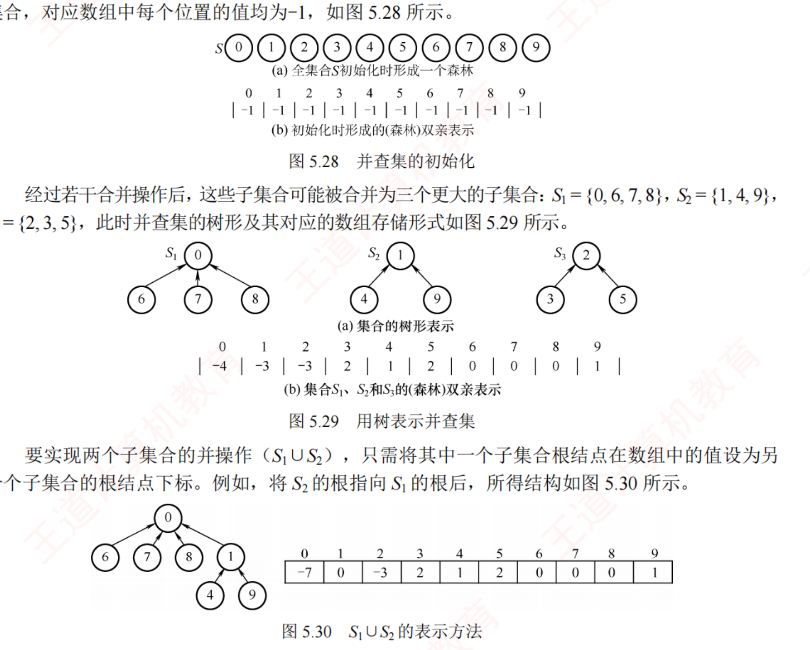
图 5.28–5.30 并查集的初始化、树形表示与并操作（裁自原书 p.183）。根存负数＝−集合大小。
我的补讲 · 并查集的三个设计决定，每一个都被考过
书上说 ：用树的双亲表示法，根的值取负数，绝对值记录集合元素个数。潜台词是 ：这三句话都是为了让两个操作最快而做的取舍 ，理解了就不用背：为什么用双亲表示法？ 因为 Find 和 Union 只需要往上找根，从不需要往下找孩子 （5.5-10 直接考这一句）。孩子表示法在这里毫无用处。为什么根存负数？ 一个数组两用——负号本身就是「我是根」的标志 （省掉一个额外的 isRoot 数组），绝对值顺便记下集合规模 （供「小树并大树」用）。这是 5.2 那条「把闲置空间拿来存元信息」的又一次应用。 Find 返回什么？ 返回根结点 ，它就是这个集合的「代表 / 标志」；判断两个元素是否同集合 ⟺ 两次 Find 的结果是否相同 。5.5-12 的干扰项 C 说「Find 返回元素个数的相反数」，把「根的存储内容」和「Find 的返回值」张冠李戴了。 所以能考 ：并查集的选择题基本不考代码细节，全考这三个设计意图。
我的补讲 · 「有几个集合」＝ 有效合并次数：2022 那道计数题的正确数法
书上说 ：（正文没有这个技巧。）潜台词是 ：Union 只有在两个元素原本不在同一集合 时才真正减少集合数；若已同集合则什么也不做 。所以：最终集合数 = 初始元素个数 − 有效合并次数。 所以能考 ：5.5-11 对 0~9 十个元素做 8 次操作（1-2、3-4、5-6、7-8、8-9、1-8、0-5、1-9 ），其中最后一次 1-9 时两者已经同属 {1,2,7,8,9}，是无效合并 ⟹ 有效 7 次 ⟹ 10 − 7 = 3 个集合 （{0,5,6}、{1,2,7,8,9}、{3,4}）。这道题唯一的坑就是那次无效合并 ——机械地「8 次操作减 8」会得到 2，正好是干扰项。做这类题时在草稿上维护集合列表，每次合并前先看两个元素在不在一起。
知识串联 · 并查集在 ch6 图那一章是「判环神器」，考纲把它放这儿只是因为它长得像树
→ 数构 ch6 Kruskal 求最小生成树 ：把边按权排序后逐条加入，加边前用 Find 检查两端是否已同集合——是则加了会成环，跳过；否则 Union 。这是并查集在 408 里最主要的用武之地，5.5-12 的干扰项 A「并查集不能检测环路」正是拿这个考的（错） 。→ 数构 ch6 判无向图连通性 / 数连通分量 ：把每条边的两端 Union 一遍，最后剩几个集合就有几个连通分量。这与 5.4 的「森林有几棵树 = 有几个根」是同一句话。 → OS ch2 「判断两个元素是否属于同一组」这个动作在系统里也常见（例如判断两个进程是否同属一个进程组 / 会话），只是规模小到直接用链表即可。一句话记牢：并查集回答的永远是同一个问题——「这两个东西是不是一伙的」。ch6 的成环判定、连通分量、Kruskal，问的都是这句话。
void Initial(int S[]){ for(int i=0;i<SIZE;i++) S[i]=-1; } // 各自为根
int Find(int S[],int x){ // 查根：Find 与 Union 基础版
while(S[x]>=0) x=S[x]; // 循环找到根（根的 S[] < 0）
return x;
}
void Union(int S[],int Root1,int Root2){
if(Root1==Root2) return;
S[Root2]=Root1; // 把 Root2 挂到 Root1 下
}
基础版 Find 时间 O(d) （d 为树高）、Union O(1) 。极端情况树退化成链，Find 最坏 O(n)。
必记结论 · 两大优化（真题热点 2022/2023）
① 小树并大树（按秩/规模合并）： Union 时比较两集规模（根的负值绝对值），把规模小的挂到规模大的根下 ，并累加规模。这样树高不超过 ⌊log₂n⌋+1 。② 路径压缩： Find 找到根后，把从 x 到根路径上所有结点直接挂到根下 （压平整条路径）。不超过 O(α(n)) ，α 是增长极慢的反阿克曼函数，常见 n 下 α(n) ≤ 4。
我的补讲 · 两个优化各管一头：合并管「别长歪」，压缩管「走过就修路」
书上说 ：① 小树并大树使树高不超过 ⌊log₂n⌋+1；② 路径压缩把沿途结点直接挂到根下。
潜台词是 ：两个优化解决的是
同一个病的两个阶段 ——树被拉高：
·
合并优化是「事前预防」 ：把
小 集合挂到
大 集合的根下。因为挂过去之后，
只有小集合里的结点深度 +1 ，受影响的结点最少。反过来大挂小，会让多数结点都深一层，几次就退化成链。
·
路径压缩是「事后修复」 ：Find 反正已经走了一趟到根，
顺手把路上所有结点直接挂到根下 ，下次这些结点就是 O(1)。
「反正都走过了，不如顺手把路修了」 。
所以能考 ：复杂度是
三档 ，题目问哪一档要看它给没给优化：
版本 Find 最坏时间 出处 裸版（无任何优化） O(n) （退化成一条链）5.5-13 的错误项 说成 O(log₂n) ⟹ 错只按规模合并 O(log₂n)（树高 ≤ ⌊log₂n⌋+1） 5.5-12 的正确项 D 合并 + 路径压缩 O(α(n))，实际 ≤ 4，近似常数 5.5-12 的错误项 B 说「仍是 O(n)」⟹ 错
⚠️
「时间复杂度」默认指最坏情况 ，所以题目若只说「并查集」不提优化，Find 就该答
O(n) ；
Union 本身永远是 O(1) （只改一个指针），慢的从来是 Find。
void Union(int S[],int Root1,int Root2){ // 优化①：小树并大树
if(Root1==Root2) return;
if(S[Root2]>S[Root1]){ S[Root1]+=S[Root2]; S[Root2]=Root1; } // Root2 更小
else { S[Root2]+=S[Root1]; S[Root1]=Root2; } // Root1 更小
}
int Find(int S[],int x){ // 优化②：路径压缩
int root=x;
while(S[root]>=0) root=S[root]; // 先找到根
while(x!=root){ int t=S[x]; S[x]=root; x=t; } // 沿途结点直接挂根下
return root;
}
我的补讲 · 本节两道综合真题：一道是哈夫曼的「应用题伪装」，一道是纯描述题
书上说 ：（两题分列在课后。）潜台词是 ：本节的综合题都不要求写完整代码 ，考的是「认出模型」和「把过程说清楚」，这是很容易拿满分的一类题：2012 真题（5.5-综2） ：6 个长度不等的有序表两两归并，问最坏比较次数最小是多少。题面一个「哈夫曼」都没提 ，但「先合并的表会在后续每次合并中被重复扫描」正是「叶越早合并、深度越大」⟹ 把表长当权值构造哈夫曼树即可 。m+n−1 次 ⟹ 44+84+109+194+394 = 825 。那个 −1 每次都不能忘 ：两个有序表归并，最后一个元素直接落位、无须比较，所以是 m+n−1 而不是 m+n。第 2 问要答出策略（每次选最短的两个表）和理由（等价于最小 WPL） 。2020 真题（5.5-综3） ：三问全是文字描述（用什么结构存前缀码 / 怎么译码 / 怎么判前缀特性），答案就是上面那条「编码树」判据。这种题的给分点是「说全」，不是「说巧」 ——译码要写清「到叶输出后回到根」，判前缀要写全两种失败情形。所以能考 ：见到「若干个不等长的东西要两两合并，求总代价最小」，先想哈夫曼 ；这个模型在 ch8 的多路归并（败者树、置换选择）里还会再出现一次。
知识串联 · 路径压缩 = 空间换时间的「缓存」思想，四科各有一个化身
→ 组原 ch3 TLB（快表） 把最近用过的页表项直接缓存起来，下次不必再走一遍多级页表——与路径压缩「走过一次就把结点直接挂到根下，下次一步到位」是同一个动作 。→ OS ch3 多级页表的访存次数正比于「级数」= 树高；TLB 命中就等于把树高压成 1 ，恰如路径压缩把整条路径压平。→ 网络 ch4 / ch6 ARP 缓存、DNS 本地缓存 同理：第一次要一路问上去，问到之后把结果记下来，后续直接命中。DNS 的「递归查询 + 缓存」几乎就是并查集的 Find + 路径压缩。 → 数构 ch7 散列表本身就是「用空间把查找压成 O(1)」的极端形式。一句话记牢：所有这些优化的模板都是同一句——「第一次走完那条长路之后，别忘了把捷径记下来」。
背景 · 并查集这两段代码只需要记住三个关键行
并查集的代码总共不到 20 行，但真正的考点只有三处 ，其余（初始化循环、参数名）都可以现场写：while(S[x] >= 0) x = S[x];根的值为负，非负就继续往上爬 ；if(S[Root2] > S[Root1])负数 ，所以「值更大」= 绝对值更小 = 规模更小 ，该被挂过去；while(x != root){ int t = S[x]; S[x] = root; x = t; }先把原双亲存进 t，再改指向根 ，顺序反了就断链。其余部分（Initial 的 for 循环、宏定义）不必背 ，统考也从未要求默写并查集的完整代码——它在算法题里只会作为工具出现（如 ch6 的 Kruskal）。
5.6 算法设计题总攻（本节为回炉新增）
我的补讲 · 为什么要单开这一节
书上说 ：本章的算法设计题散落在 5.3、5.4 的课后题里，一道一道地给。潜台词是 ：数据结构 45 分里有 23 分是两道综合题，其中一道几乎固定是 13~15 分的算法设计题 ，而它的落点十七年来集中在线性表、树、图 三章。本章贡献了 6 道综合真题 （2012、2014、2016、2017、2020、2022），是三章里最多的之一——可原来的精读版对它们一个字都没写 。所以能考 ：这一节把本章 15 道算法题 + 6 道综合真题 压成八个可默写的模板 + 一本审题词典 ，并把 2014、2022 两道最典型的真题按「想 → 写 → 校」三层 完整写一遍。本节的所有模板代码都用 gcc 编译运行过 ：① ② ③ ⑥ 在 3000 棵随机二叉树 上与独立参照实现对拍、④ 在 2000 例随机顺序存储树 上对拍、⑤ 对 h=1..6 的全部满二叉树对拍、⑧ 在 2000 棵随机树 上对拍，全部零失配 ；⑦ 用 2017 真题的两棵样例树定点核验。页面上写的就是被编译的那份代码，一字未改。
5.6.1 六道综合真题并排：先看清它们其实只有三种问法
年份 题（本站编号） 要你做什么 用哪个模板 核心一句 2014 5.3-综15 写算法求二叉树的 WPL ① 递归三行把「当前深度」当参数一路传下去，到叶就 weight×depth 2017 5.3-综16 把表达式树 转成带括号的中缀表达式 ⑦ （= ① 的中序版）中序遍历 + 非根非叶的结点两侧补括号 2022 5.3-综17 判断顺序存储 的二叉树是不是 BST ④ 下标递归BST ⟺ 中序严格递增；指针换成 2k+1 / 2k+2 2016 5.2-综6 推导 正则 k 叉树的叶数与结点数上下界不写代码 两式法：n = n₀+m 与 n−1 = km 2012 5.5-综2 求多个有序表最优归并顺序 与最坏比较次数 不写代码 表长当权 ⟹ 哈夫曼 ；每次归并 m+n−1 次 2020 5.5-综3 描述 前缀码用什么结构存、怎么译码、怎么判定不写代码 编码树：字符只在叶上
我的补讲 · 这张表最该注意的是右边两列
书上说 ：（六题分散在两节的课后题里。）潜台词是 ：六道真题里只有三道真的要写代码 （2014、2017、2022），另外三道是推导题 （2016）与文字描述题 （2012、2020）。后三种的给分点是「说全」而不是「写巧」 ——2020 那道三问全是中文回答，写清「用二叉树 / 逐位下降到叶输出 / 边插入边建树并检查两种失败情形」就能拿满分。所以能考 ：见到本章的综合题先分类 ：要代码的按下面八个模板套；不要代码的，把「模型是什么 + 为什么这么做 + 边界情形」三句话写全。千万别在描述题上写一堆代码，也别在算法题上只写文字。
5.6.2 八个可默写模板
怎么用这一节 ：先盖住代码，看着「什么时候用」自己默写一遍，再对照。八个模板里 ① ② 是必须默到一字不差的 ，其余六个能默出骨架即可。
模板① 递归三行框架（后序求值型）—— 本章一半算法题的底座
什么时候用 ：求高度 / 结点数 / 叶数 / 双分支结点数 / WPL（2014 真题） / 判相似——凡是「根的答案 = 左右子树答案的函数 」都套它。
int Height(BiTree T){ // 求高度（层数口径：空树 0，只有根 1）
if(T==NULL) return 0;
int hl=Height(T->lchild), hr=Height(T->rchild);
return (hl>hr?hl:hr)+1; // 先拿到左右答案，再算自己 —— 后序
}
int LeafCount(BiTree T){ // 叶结点数
if(T==NULL) return 0;
if(T->lchild==NULL && T->rchild==NULL) return 1;
return LeafCount(T->lchild)+LeafCount(T->rchild);
}
int DsonNodes(BiTree T){ // 双分支（度为 2）结点数
if(T==NULL) return 0;
int s=(T->lchild && T->rchild)?1:0;
return s+DsonNodes(T->lchild)+DsonNodes(T->rchild);
}
int wpl_pre(BiTree p,int d){ // 2014 真题：WPL = Σ 叶权 × 深度（根深度 0）
if(p->lchild==NULL && p->rchild==NULL) return p->data*d;
int s=0;
if(p->lchild) s+=wpl_pre(p->lchild ,d+1); // 只对非空孩子递归，避开空指针
if(p->rchild) s+=wpl_pre(p->rchild ,d+1);
return s;
}
int WPL(BiTree root){ return root?wpl_pre(root,0):0; }
⚠️ 三个易错点 ：① 空树返回 0 不是 1 ；② WPL 那个深度参数必须从 0 起 （根深度为 0，否则整体多算一份总权）；③ 王道官方答案在度为 1 的结点处会对空孩子取 weight 而越界 ——上面这版先判 if(p->lchild) 就规避了，写成这样是加分不是画蛇添足 。
模板② 层序队列框架 —— 「按层」「非递归」「要找父」全靠它
什么时候用 ：非递归求高度、求宽度、判完全二叉树 、删除值为 x 的子树（要定位父结点）。
int BtDepth(BiTree T){ // 非递归求高度：last 标记本层最后一个的队列下标
if(!T) return 0;
BiTree Q[MaxSize]; int front=-1,rear=-1,last=0,level=0; BiTree p;
Q[++rear]=T;
while(front<rear){
p=Q[++front];
if(p->lchild) Q[++rear]=p->lchild;
if(p->rchild) Q[++rear]=p->rchild;
if(front==last){ level++; last=rear; } // 本层弹完 → 层数+1，last 指向下层末尾
}
return level;
}
int BtWidth(BiTree T){ // 求宽度：进层前记下本层结点数 size
if(!T) return 0;
BiTree Q[MaxSize]; int head=0,tail=0,maxw=0; BiTree p;
Q[tail++]=T;
while(head<tail){
int size=tail-head; // 本层结点数
if(size>maxw) maxw=size;
for(int i=0;i<size;i++){ // 整层一次性弹完
p=Q[head++];
if(p->lchild) Q[tail++]=p->lchild;
if(p->rchild) Q[tail++]=p->rchild;
}
}
return maxw;
}
int IsComplete(BiTree T){ // 判完全二叉树：空孩子也入队！
if(!T) return 1; // 空树视为完全二叉树
BiTree Q[MaxSize]; int head=0,tail=0; BiTree p;
Q[tail++]=T;
while(head<tail){
p=Q[head++];
if(p){ Q[tail++]=p->lchild; Q[tail++]=p->rchild; } // 含 NULL
else{ while(head<tail) if(Q[head++]) return 0; } // 空之后还有非空 → 非完全
}
return 1;
}
⚠️ 判完全二叉树的全部秘密是那句「空孩子也入队」 ：不入队就检测不到「只有右孩子」这种破绽（根只有右孩子时，跳过空左孩子的话队列里看起来毫无异常）。两种写法都给分 ：王道版给每个结点带 level 域、事后扫描统计（此时队列必须非环形 ，否则出队即被覆盖）；上面这版逐层弹更短，但要在答卷上写明「size = 本层结点数」 ，阅卷才知道你不是写错。
模板③ 带 tag 的后序栈 —— 「祖先」「路径」「LCA」型
什么时候用 ：打印某结点的所有祖先、求最近公共祖先。核心事实：后序非递归遍历时，栈里存的恰好是「从根到当前结点」的整条路径。
typedef struct{ BiTree t; int tag; }SNode; // tag=0 左子树已访问，tag=1 右子树已访问
int Ancestors(BiTree T,BiTree x,BiTree out[]){ // 把 x 的全部祖先按根→父存入 out，返回个数
SNode s[MaxSize]; int top=0; BiTree bt=T;
while(bt!=NULL || top>0){
while(bt!=NULL && bt!=x){ s[++top].t=bt; s[top].tag=0; bt=bt->lchild; } // 沿左链入栈
if(bt!=NULL && bt==x){ // 找到 x：栈中即全部祖先
for(int i=1;i<=top;i++) out[i-1]=s[i].t;
return top;
}
while(top!=0 && s[top].tag==1) top--; // 右子树已访问 → 空退栈
if(top!=0){ s[top].tag=1; bt=s[top].t->rchild; } // 转向右子树
}
return -1; // 未找到
}
BiTree LCA(BiTree T,BiTree p,BiTree q){ // 两条根→结点的路径，求最深公共结点
BiTree a[MaxSize],b[MaxSize];
int na=Ancestors(T,p,a), nb=Ancestors(T,q,b);
if(na<0||nb<0) return NULL;
a[na++]=p; b[nb++]=q; // 把自身也接上（处理「一个是另一个的祖先」）
BiTree res=NULL;
for(int i=0;i<na && i<nb;i++){ if(a[i]==b[i]) res=a[i]; else break; }
return res; // 最长公共前缀的末端 = LCA
}
⚠️ 「把自身也接上」那一行不能省 ：若 p 本身就是 q 的祖先，只比两条祖先链会漏掉 p 自己。这一行是我在对拍时被随机用例逼出来的——3000 棵随机树里这种情形出现得非常频繁 。栈深 ≤ 树高 ，所以空间复杂度是 O(h) ，答题时写这个比写 O(n) 更准确。
模板④ 顺序存储上的下标递归 —— 2022 真题原型
什么时候用 ：题目给的是数组不是指针。做法：把模板①里的 p->lchild 换成 2k+1，其余一个字不改。
// 下标从 0 起：左 2k+1、右 2k+2、父 ⌊(k−1)/2⌋；−1 表示结点不存在
int judgeBST(int A[],int n,int k,int *val){ // 2022 真题：判是否二叉搜索树
if(k<n && A[k]!=-1){ // 越界 或 空结点 → 直接返回 true
if(!judgeBST(A,n,2*k+1,val)) return 0; // 先中序遍历左子树
if(A[k] <= *val) return 0; // 当前值必须大于「已遍历过的最大值」
*val=A[k];
if(!judgeBST(A,n,2*k+2,val)) return 0; // 再中序遍历右子树
}
return 1;
}
// 调用：int val=INT_MIN; judgeBST(A,n,0,&val);
⚠️ 递归的终止条件有两个 ：k>=n（下标越界）与 A[k]==-1（结点不存在），少写一个就会越界访问 。顺序存储求最近公共祖先 （5.2-综5）：while(i!=j){ if(i>j) i/=2; else j/=2; }——谁的编号大谁先往上爬 ，相等时即为 LCA（这版是下标从 1 起的写法）。
模板⑤ 满二叉树先序转后序（分治）
什么时候用 ：题目明说是满二叉树 （左右子树结点数必然相等），只给一种序列求另一种。普通二叉树不能用。
void PreToPost(char pre[],int l1,int h1,char post[],int l2,int h2){
int half;
if(h1>=l1){
post[h2]=pre[l1]; // 后序段末 = 先序段首 = 根
half=(h1-l1)/2; // 除根外的结点对半分给左右子树
PreToPost(pre,l1+1 ,l1+half,post,l2 ,l2+half-1); // 左子树
PreToPost(pre,l1+half+1,h1 ,post,l2+half ,h2-1); // 右子树
}
}
定点核验：pre = ABCDEFG ⟹ post = CDBFGEA（与王道例子一致，程序对 h=1..6 的全部满二叉树逐一对拍无误）。
模板⑥ 双树同步递归（判相似 / 判相等）
int similar(BiTree a,BiTree b){ // 相似 = 形态相同（不看结点值）
if(a==NULL && b==NULL) return 1; // 都空 → 相似
if(a==NULL || b==NULL) return 0; // 一空一非空 → 不相似
return similar(a->lchild,b->lchild) && similar(a->rchild,b->rchild);
}
⚠️ 「相似」只比结构，「相等」还要比 data ——把最后一行改成 a->data==b->data && … 就是判相等。读题时看清问的是哪一个。
模板⑦ 表达式树转中缀（2017 真题）
void BtreeToExp(BTree *p,int deep){ // 中序遍历 + 补括号；根的 deep = 1
if(p==NULL) return;
else if(p->lchild==NULL && p->rchild==NULL) // 叶结点 = 操作数
printf("%s",p->data); // 操作数不加括号
else{
if(deep>1) printf("("); // 非根的分支结点：左括号
BtreeToExp(p->lchild,deep+1);
printf("%s",p->data); // 运算符
BtreeToExp(p->rchild,deep+1);
if(deep>1) printf(")"); // 非根的分支结点：右括号
}
}
void BtreeToE(BTree *root){ BtreeToExp(root,1); }
⚠️ 不加括号的只有两种结点：叶（操作数）和根（最外层） ，其余一律加。一元负号（左子树为空）也能被这段代码正确处理 ：左子树空时直接输出运算符再输出右操作数，配上括号恰好得到 (-d)。程序对 2017 真题的两棵样例树输出 (a+b)*(c*(-d)) 与 (a*b)+(-(c-d))，与题目要求逐字一致。
模板⑧ 孩子兄弟链：求叶数 / 求树高
typedef struct CSNode{ ElemType data; struct CSNode *fch,*nsib; }CSNode,*CSTree;
int CSLeaves(CSTree t){ // 森林 / 树的叶结点数
if(t==NULL) return 0;
if(t->fch==NULL) return 1+CSLeaves(t->nsib); // 无孩子 → 是叶
return CSLeaves(t->fch)+CSLeaves(t->nsib); // 孩子子树 + 兄弟子树
}
int CSHeight(CSTree t){ // 树的高度
if(t==NULL) return 0;
int hc=CSHeight(t->fch), hs=CSHeight(t->nsib);
return (hc+1>hs)?hc+1:hs; // 孩子方向 +1，兄弟方向不加！
}
⚠️ 这两段的全部考点就是那两个「加不加 1」 ：判叶只看 fch（有没有孩子），求高只有 fch 那一支 +1（nsib 是同层兄弟，深度不变）。写成两边都 +1，就把兄弟当成了下一层。
5.6.3 审题词典：题干里的这句话 ⟹ 用哪个模板
题干里出现 立刻想到 「非递归 」「不使用递归」 模板②（层序队列）或模板③（显式栈）——不是把递归改写成栈就完事，先想有没有层序解法 「按层 」「宽度」「每一层」「判完全二叉树」 模板②，并考虑要不要把 NULL 也入队 「释放空间 」「删除子树」「求高度 / WPL / 判相似」 模板①，后序 （必须先拿到子树结果才能处理根） 「祖先 」「公共祖先」「从根到某结点的路径」 模板③（栈即路径） 「顺序存储 」「数组 R[ ]」「−1 表示不存在」 模板④，先确认根在下标 0 还是 1 「满 二叉树」 模板⑤（左右子树结点数必然相等，可以对半分） 「二叉排序树 」「递增 / 有序」 中序遍历（模板① 的中序版）——BST ⟺ 中序严格递增 「表达式树 」「中缀 / 后缀」 模板⑦；顺带记住后序遍历 = 后缀表达式 、根是最后计算的运算符 「孩子兄弟 」「firstchild / nextsibling」「森林」 模板⑧，注意「孩子 +1、兄弟不加」 「尽可能高效 」 说明有 O(n) 一趟的解法，别写两趟；并在答卷上写出时间与空间复杂度
5.6.4 2014 统考真题（求 WPL）· 按「想 → 写 → 校」三层
题 ：二叉树的带权路径长度（WPL）是二叉树中所有叶结点 的带权路径长度之和。给定一棵二叉树 T，采用二叉链表存储，结点结构为 (left, weight, right)，其中叶结点的 weight 域保存该结点的非负权值 。设 root 为指向 T 的根结点的指针，请设计求 T 的 WPL 的算法：1) 给出算法的基本设计思想；2) 给出二叉树结点的数据类型定义；3) 用 C 语言描述算法，关键之处给出注释。
💭 思路（动手前看 · 卡壳时看）
先把定义翻译成一句可执行的话 ：WPL = Σ(每个叶结点的 weight × 它到根的路径长度 )。路径长度 = 边数 ，所以根的深度是 0 ——这一点决定了后面递归参数的初值，写成 1 会整体多算一份总权。难点只有一个：递归函数怎么知道「我现在有多深」。 树上的递归天然是「自顶向下走、自底向上回」，深度属于「自顶向下」的信息，所以它只能当参数传下去 ，不能靠返回值带上来。凡是题目里出现「深度 / 层数 / 路径长度」，第一反应就是给递归函数加一个 int d 参数。 递归的边界写在哪？ 写在叶结点 而不是空指针上——因为只有叶结点才有权值参与计算。非叶结点的 weight 域题目根本没定义 ，碰都不要碰。注意题目允许「度为 1 的结点」存在 （它没说是正则二叉树）。所以递归时必须先判断孩子是否为空再进去 ——王道给的官方参考代码正是在这里会对空孩子取 weight 而越界。这属于「多写三个字符就能规避」的送分点，不写也能得分，写了更稳。 还有一条备选思路可以在卷面上提一句 ：WPL 也等于「所有非叶结点权值之和」（若把每个非叶结点的权定义为其子树叶权和）。但那要先改写整棵树，比直接递归麻烦 ——写在「本题还可以怎么做」里加分，不要当主解法。 ✍️ 考场卷面（写完再对照）满分约 13 分
(1) 算法的基本设计思想 先序递归遍历 ，把「当前结点的深度 d 」作为递归参数 一路传下去：根结点的深度为 0，每向下一层参数加 1。叶结点 时返回 weight × d；递归到非叶结点 时，返回其左、右子树递归结果之和（对空孩子不递归）。整棵树的返回值即为 WPL。⛳ 4 分
(2) 结点的数据类型定义
typedef struct node{
int weight; // 叶结点存权值
struct node *left,*right; // 左右孩子指针
}BTree; ⛳ 2 分 (3) 算法实现
int wpl_pre(BTree *p,int d){ // d 为 p 的深度，根的 d 为 0
if(p->left==NULL && p->right==NULL) // (1) 叶结点：累计 权 × 深度
return p->weight * d;
int s=0; // (2) 非叶结点：累加左右子树
if(p->left) s += wpl_pre(p->left ,d+1); // 先判空，避免度为 1 时访问空指针
if(p->right) s += wpl_pre(p->right,d+1);
return s;
}
int WPL(BTree *root){ // 对外接口
if(root==NULL) return 0; // 空树的 WPL 为 0
return wpl_pre(root,0); // 根的深度为 0
} ⛳ 6 分 (4) 复杂度 O(n) ；递归栈深度等于树高，空间复杂度 O(h) ，最坏（单支树）为 O(n)。⛳ 1 分
⟹ 该算法求得的返回值即为二叉树 T 的带权路径长度 WPL。
📌 批注（对照完校对）
扣分点 ① 深度初值写成 1 ：整个结果会多出一份「全部叶权之和」。检验办法：拿一棵只有根的树代进去，WPL 应为 0 （根既是叶又深度 0）。扣分点 ② 只写代码不写「基本设计思想」 ：408 的算法题第 1 问单独给分（通常 4~5 分） ，而且它是「代码写崩了也能保住的分」。无论如何先把思想写满。 扣分点 ③ 忘了写数据类型定义 ：题目第 2 问明确要求，漏掉直接丢 2 分。扣分点 ④ 没写复杂度 ：本题虽未明确要求，但写上是常规加分项；空间答 O(h) 比答 O(n) 更专业 。提速心算 ：手算小规模 WPL 时用「所有非叶结点权值之和 」——2021 真题（5.5-20）用它 10 秒得 200，比数深度快得多。跨章联系 ：本题的 WPL 与 5.5 哈夫曼树是同一个量；哈夫曼树就是「WPL 最小的那棵」 。本题不要求最优，只要求算出给定树的 WPL。
5.6.5 2022 统考真题（顺序存储判 BST）· 按「想 → 写 → 校」三层
题 ：已知非空二叉树 T 的结点值均为正整数 ，采用顺序存储方式保存，数据结构定义为 typedef struct{ int SqBiTNode[MAX_SIZE]; int ElemNum; }SqBiTree;，T 中不存在的结点用 −1 表示 。请设计一个尽可能高效 的算法，判定 T 是否为二叉搜索树，是则返回 true，否则返回 false。1) 给出算法的基本设计思想；2) 用 C 语言描述算法，关键之处给出注释。
💭 思路（动手前看 · 卡壳时看）
先把「是不是 BST」换成一个可以一趟判完的等价条件。 直接按定义查「每个结点大于左子树全部、小于右子树全部」会是 O(n²)，而题目要求「尽可能高效 」——这五个字就是在提示你换判据 。等价条件：BST ⟺ 中序遍历得到的序列严格递增。 这是 5.3 与 ch7 的交叉点。再解决「怎么在数组上遍历」。 顺序存储没有指针，但孩子的位置是算出来的 ：题目给的下标从 0 起 ⟹ 左孩子 2k+1、右孩子 2k+2。把递归遍历里的 p->lchild 原样换成 2k+1 即可，其余一个字不改。 递归的终止条件有两个，缺一不可 ：k >= ElemNum（下标越界）与 A[k] == −1（该结点不存在）漏掉前者会数组越界，漏掉后者会把 −1 当成一个真结点参与比较。 「严格递增」怎么在遍历中检查？ 不需要把中序序列存下来（那要 O(n) 额外空间）。只需一个变量 val 记住「已遍历到的最大值」 ：中序访问到当前结点时，若 A[k] <= val 就立刻返回 false，否则更新 val。用「引用 / 指针」传这个变量，别用全局变量之外的花样。 初值取多少？ 结点值均为正整数 ，所以 val 初值取 0 或任意负数都安全。写 INT_MIN 最稳妥，并在卷面上说明理由 。 ✍️ 考场卷面（写完再对照）满分约 13 分
(1) 算法的基本设计思想 其中序遍历序列严格递增 。因此对顺序存储的二叉树做一趟中序遍历 即可判定。k 的左孩子为 2k+1 、右孩子为 2k+2 ；当下标越界或该位置为 −1 时，表示子树为空。val 记录已访问结点的最大值 （初值取一个比所有结点值都小的数）。中序访问到当前结点时：若其值 ≤ val ，说明序列不是严格递增，立即返回 false；否则更新 val 后继续遍历右子树。全部结点通过检查则返回 true。⛳ 5 分
(2) 算法实现
#define false 0
#define true 1
typedef int bool;
bool judgeInOrderBST(SqBiTree bt,int k,int *val){
// 在顺序存储的二叉树上做中序遍历，判断序列是否严格递增
// 初始调用：k=0，*val 取一个足够小的数（结点值均为正整数，取 0 即可）
if(k < bt.ElemNum && bt.SqBiTNode[k] != -1){ // 下标未越界且结点存在
if(!judgeInOrderBST(bt,2*k+1,val)) // ① 先遍历左子树
return false;
if(bt.SqBiTNode[k] <= *val) // ② 访问根：必须大于已遍历最大值
return false;
*val = bt.SqBiTNode[k]; // 更新已遍历最大值
if(!judgeInOrderBST(bt,2*k+2,val)) // ③ 再遍历右子树
return false;
}
return true; // 空子树 / 全部通过
} ⛳ 7 分 (3) 复杂度 O(n) （n 为 ElemNum）；只用了一个辅助变量，除递归栈外空间为 O(1)，递归栈深度为树高，故空间复杂度 O(h) 。⛳ 1 分
⟹ 该算法一趟中序遍历即可判定 T 是否为二叉搜索树，满足题目「尽可能高效」的要求。
📌 批注（对照完校对）
扣分点 ① 下标公式用错口径 ：本题根在下标 0 ，孩子是 2k+1 / 2k+2；王道正文用的是下标从 1 起的 2k / 2k+1。拿到题先看根在哪个下标，这一步错了整题全错。 扣分点 ② 比较写成 < 而不是 <= ：BST 要求严格 递增，允许相等就把「有重复值」的树误判为 BST。扣分点 ③ 只判 A[k]==−1 忘了判越界 （或反之），会数组越界或把 −1 当结点。扣分点 ④ 把「已遍历最大值」写成局部变量 ：它必须在整趟遍历中共享，得用指针 / 引用 / 全局变量传递。提速心算 ：手算判断一个数组是不是 BST 时，直接按 2k+1 / 2k+2 把中序序列念出来看是否递增 即可，不必画树。另一种合法解法 ：王道还给了「用 pmax、pmin 两个辅助数组从后向前验证每个结点与其左右子树的最值关系」的解法——正确但要 O(n) 额外空间 ，在「尽可能高效」的要求下不如中序法。卷面上写一句「另可用最值数组法，但需 O(n) 辅助空间」是加分项。 跨章联系 ：本题一道题横跨三处——5.2 的顺序存储下标公式、5.3 的中序遍历、ch7 的「BST 中序递增」 。2022 年把三章缝在一道 13 分的题里，这正是「按考点设防而不是按章设防」的最好例子。
知识串联 · 这八个模板到了 ch6 图那一章会被再用一遍
→ 数构 ch6 模板① 的递归就是 DFS 、模板② 的队列就是 BFS ；ch6 的算法题（求路径、判连通、拓扑排序）骨架完全一样，只多两样东西：visited[] 数组（树无环不用）和「遍历邻接表」的内层循环 。→ 数构 ch6 模板③「栈即路径」在 ch6 用来输出从 u 到 v 的所有简单路径 ；模板⑧ 的「孩子 / 兄弟两个方向」到 ch6 变成「邻接表的顶点数组 / 边链表 两个方向」。→ 数构 ch7 / ch8 模板④ 的下标运算是堆排序 （ch8）与折半查找判定树 （ch7）的共同底座；模板① 的后序求值型在 ch7 用来求 BST 的高度、判平衡 。一句话记牢：树这一章的八个模板不是为本章准备的，是为整个「非线性结构」的算法题准备的——ch6 只会在它们外面加一层 visited。
背景 · 这几道课后算法题看懂即可，不必默写
5.3-综7（求先序第 k 个结点）· 5.3-综8（删除值为 x 的子树）· 5.3-综13（叶结点串成链表） 三题都是模板① / ② 的直接变体 ，且十七年来从未出现在统考里 。全局计数器要在「访问结点」时自增 （综7）、删子树必须让父结点的指针置 NULL 否则成野指针 （综8）、三种遍历里叶结点的相对顺序相同所以随便挑一种 （综13）。把这三句记住，代码不用背。
我的补讲 · 收工自查：本章 18 条一句话结论（能全部答出就可以去刷题了）
书上说 ：（归纳总结给了五块骨架。）潜台词是 ：把全章压到最短，是下面这 18 句。合上页面自问一遍，答不出的那几条回去看对应的批注块 ：【数关系】 ① 树：Σ度数 = n−1；② 二叉树：n₀ = n₂+1 （与 n₁ 无关）；③ 正则：n = 2n₀−1（必为奇数 ）；④ 完全二叉树：叶 = ⌈n/2⌉，n 奇则 n₁=0、n 偶则 n₁=1 ；⑤ 高度 = ⌈log₂(n+1)⌉ = ⌊log₂n⌋+1（不是 ⌈log₂n⌉ ）；⑥ 空链域 = (k−1)n+1 ，二叉即 n+1。【遍历】 ⑦ 三序唯一的共同点是「先左后右」⟹ 叶结点顺序三序相同 ；⑧ 先序前 + 后序后 ⟺ 祖先 ；⑨ 中序 = 按横坐标从左到右 ；⑩ 建树必须含中序 ；⑪ 先序 = 入栈序、中序 = 出栈序 ⟹ 形态数 = 卡特兰数 ；⑫ 需要子树结果才能处理根 ⟹ 后序；需要「层」⟹ 层序 。【线索】 ⑬ 线索数 = n+1，线索化后仍空的恒为 2 个 ；⑭ 判有无孩子只能看 tag ，rchild≠NULL 说明不了什么；⑮ 先序缺前驱、后序缺后继、中序全都行 。【树森林】 ⑯ 先根=先序、后根=中序（不是后序） ；⑰ 森林棵数 = 右链长；森林叶数 = 左指针空的结点数；右指针空的数 = 非终端结点数+1 。【应用】 ⑱ 哈夫曼：2n−1 个结点、无度 1、WPL = 内部权之和、前缀码 ⟺ 字符只在叶 ；并查集：根存负规模、小树并大树 + 路径压缩 。所以能考 ：这 18 句覆盖了本章 43 道真题 的全部落点。凡是答不上来的那条，就是你这一章的失分点——回到对应小节把那一块的批注读完，再来一遍。
知识串联 · 本章命中的跨科枢纽汇总（横向串联轮的入口）
408 的六个跨科枢纽里，本章一口气命中了四个 ，这也是「按考点设防而不是按章设防」的最好例证：→ 分块与映射 完全二叉树的下标即地址 （2i / 2i+1）↔ 组原 Cache 的组号切位 ↔ OS 页表的页号即下标 ↔ 网络 IP 的按位与掩码。共同点：把「查找」变成「算一下」。 → 队列与调度 层序遍历的队列 ↔ OS 就绪队列 / 磁盘请求队列 ↔ 网络路由器分组队列；而完全二叉树 = 堆 = 优先队列，是这些「按优先级出队」场景的底层实现。 → 空间换时间 线索二叉树（空指针存前驱后继）· 并查集路径压缩 ↔ 组原 TLB / Cache ↔ 网络 ARP / DNS 缓存。共同公式：一次性预计算 + 一致性维护成本。 → 中断 / 递归与栈 递归遍历的 O(h) 栈深 ↔ 组原栈帧 ↔ OS 栈区与内核栈大小限制。另外两个枢纽（局部性原理、滑动窗口）本章不涉及 ——局部性要到 ch7 的 B 树 / 组原 Cache 才出场，滑动窗口是网络与 OS 的事。一句话记牢：这一章是四科里「树形结构」的总源头，后面每一次遇到「分层 + 分支」，都可以回来对一遍这里的结论。
归纳总结
📄 p.185
我的补讲 · 本章五块骨架 + 各自的手算流程
① 数关系 ：Σ度数=n−1、n₀=n₂+1、完全二叉树 8 条编号关系 → 联立 n=Σni 与 n=Σi·ni +1 解题。② 遍历 ：三序递归 + 层序队列；建树认准「必须含中序 ，根劈中序、递归切先/后/层」。③ 线索 ：n+1 个空链域的用途；找后继 —— 中序看右子树最左下，后序要父指针。④ 树森林↔二叉树 ：左孩子右兄弟；树根无右子树；先根=先序、后根=中序 ；森林树数=二叉树根的右链长、森林叶数=二叉链表左指针为空的结点数。⑤ 哈夫曼 + 并查集 ：哈夫曼 2n−1 结点、无度 1、WPL=内部结点权和、前缀码判定；并查集根存负规模、小树并大树 + 路径压缩到 O(α(n))。
接下来做什么：
·
第 5 章练习（161 题） —— 全书最大章，
127 道选择 + 34 道综合/算法题 （其中 15 道是算法设计题），选择题答案全部程序独立复算、算法题可运行对拍，含
43 道统考真题 （2009–2025 十七年零缺口）。
·
二叉树遍历步进器 —— 先/中/后/层序逐结点动画 + 三序列对照 + 「先序+中序建树」自测（自动判能否唯一确定）+ 层序数组随手造树。
·
数据结构卡库 —— 易混辨析（满 vs 完全、树 vs 森林、先根 vs 中序对应）随手翻。
·
C 代码模板手册 —— 树递归 / 层次队列 / 建树 等模板可开「默写模式」逐行自测。
精读版 · 第 5 章｜正文取自王道《数据结构》p.124–193，结构重排与批注为 Claude 所加｜配图 11 张裁自原书，结点结构等示意为重画